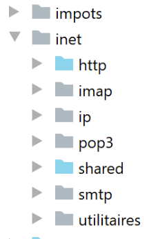
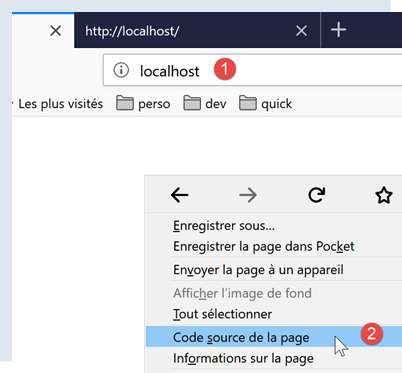
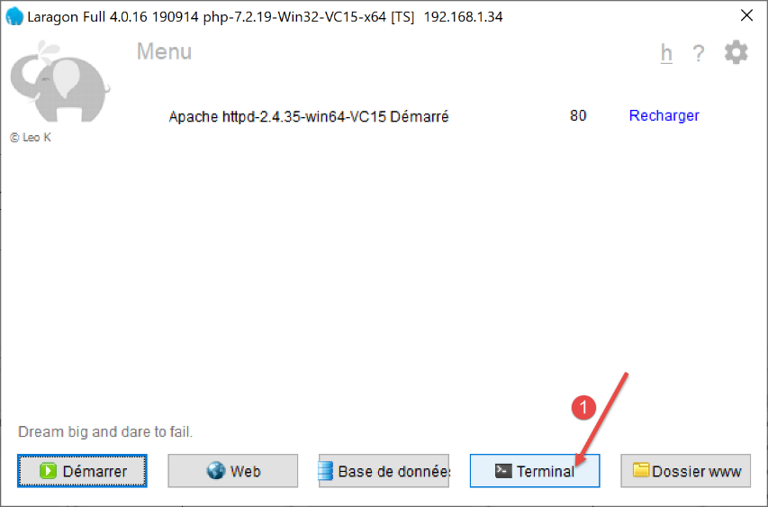
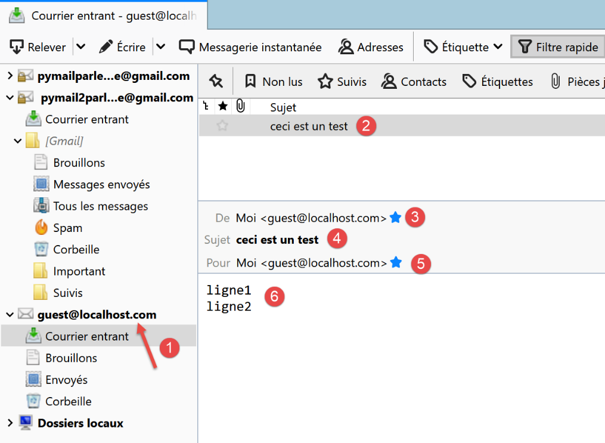
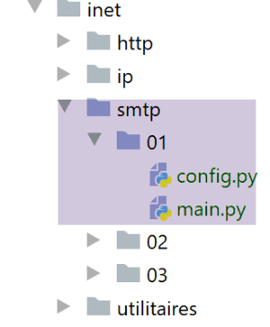
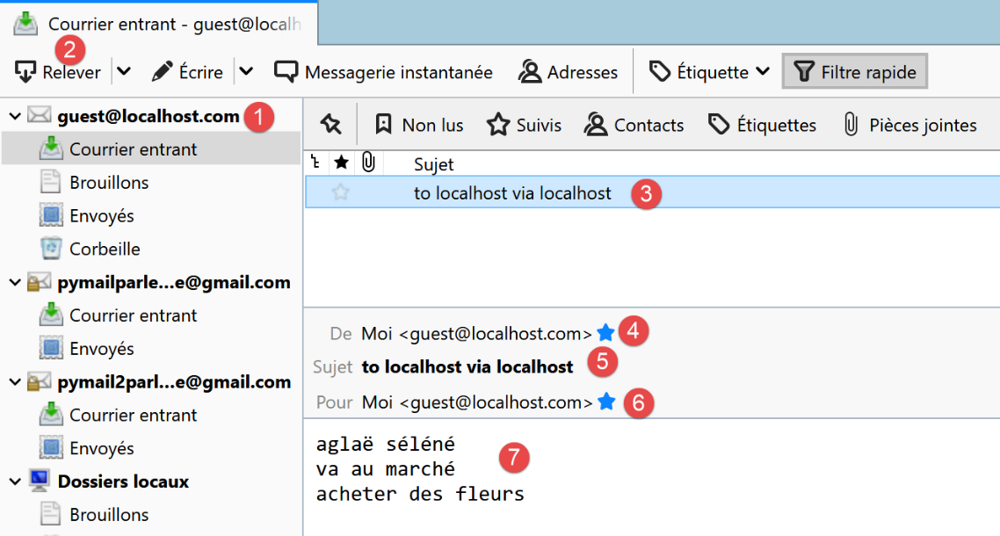
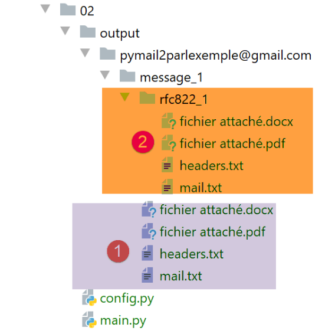

21. Funciones de Internet
Ahora abordamos las funciones de Internet de Python que nos permiten programar TCP / IP (Protocolo de control de transferencia / Protocolo de Internet).

21.1. Fundamentos de la programación en Internet
21.1.1. Generalidades
Consideremos la comunicación entre dos máquinas remotas A y B:

Cuando una aplicación AppA de la máquina A quiere comunicarse con una aplicación AppB de la máquina B en Internet, debe conocer varios datos:
- la dirección IP (Protocolo de Internet) o el nombre del equipo B;
- el número del puerto con el que opera la aplicación AppB. De hecho, la máquina B puede albergar numerosas aplicaciones que operan en Internet. Cuando recibe información procedente de la red, debe saber a qué aplicación va dirigida dicha información. Las aplicaciones de la máquina B tienen acceso a la red a través de «ventanillas», también llamadas puertos de comunicación. Esta información se encuentra en el paquete recibido por la máquina B para que pueda entregarse a la aplicación correcta;
- los protocolos de comunicación que comprende la máquina B. En nuestro estudio, utilizaremos únicamente los protocolos TCP-IP;
- el protocolo de comunicación aceptado por la aplicación AppB. De hecho, las máquinas A y B se «comunicarán» entre sí. Lo que se comunicarán quedará encapsulado en los protocolos TCP-IP. Sin embargo, cuando, al final de la cadena, la aplicación AppB reciba la información enviada por la aplicación AppA, deberá ser capaz de interpretarla. Esto es similar a la situación en la que dos personas, A y B, se comunican por teléfono: su diálogo se transmite a través del teléfono. El habla será codificada en forma de señales por el teléfono de A, transmitida por las líneas telefónicas, llegará al teléfono de B para ser decodificada allí. La persona B entonces escucha palabras. Aquí es donde entra en juego el concepto de protocolo de diálogo: si A habla francés y B no entiende ese idioma, A y B no podrán dialogar de manera efectiva;
Por lo tanto, las dos aplicaciones que se comunican deben ponerse de acuerdo sobre el tipo de diálogo que van a adoptar. Por ejemplo, el diálogo con un servicio ftp no es el mismo que con un servicio pop: estos dos servicios no aceptan los mismos comandos. Tienen un protocolo de diálogo diferente;
21.1.2. Las características del protocolo TCP
Aquí solo analizaremos las comunicaciones de red que utilizan el protocolo de transporte TCP, cuyas características principales son las siguientes:
- el proceso que desea transmitir establece primero una conexión con el proceso destinatario de la información que va a enviar. Esta conexión se realiza entre un puerto de la máquina transmisora y un puerto de la máquina receptora. Entre ambos puertos se crea así una ruta virtual que quedará reservada exclusivamente para los dos procesos que han establecido la conexión;
- todos los paquetes enviados por el proceso de origen siguen esta ruta virtual y llegan en el orden en que fueron enviados;
- La información transmitida tiene un carácter continuo. El proceso emisor envía información a su propio ritmo. Esta información no se envía necesariamente de inmediato: el protocolo TCP espera tener suficiente cantidad para enviarla. Se almacena en una estructura llamada segmento TCP. Una vez que este segmento se llene, se transmitirá a la capa IP, donde se encapsulará en un paquete IP;
- cada segmento enviado por el protocolo TCP está numerado. El protocolo TCP receptor verifica que reciba los segmentos en orden. Por cada segmento recibido correctamente, envía un acuse de recibo al remitente;
- cuando este último lo recibe, se lo indica al proceso emisor. De esta manera, este último puede saber que un segmento ha llegado a su destino;
- si, al cabo de cierto tiempo, el protocolo TCP que ha enviado un segmento no recibe un acuse de recibo, vuelve a transmitir el segmento en cuestión, garantizando así la calidad del servicio de transmisión de la información;
- el circuito virtual establecido entre los dos procesos que se comunican es full-duplex: esto significa que la información puede circular en ambos sentidos. De este modo, el proceso de destino puede enviar acuses de recibo incluso mientras el proceso de origen continúa enviando información. Esto permite, por ejemplo, que el protocolo de origen TCP envíe varios segmentos sin esperar un acuse de recibo. Si, tras un cierto tiempo, se da cuenta de que no ha recibido el acuse de recibo de un segmento específico n.º n, reanudará la transmisión de los segmentos a partir de ese punto;
21.1.3. La relación cliente-servidor
A menudo, la comunicación en Internet es asimétrica: la máquina A inicia una conexión para solicitar un servicio a la máquina B; especifica que desea establecer una conexión con el servicio SB1 de la máquina B. Esta última acepta o rechaza la solicitud. Si acepta, la máquina A puede enviar sus solicitudes al servicio SB1. Estas deben cumplir con el protocolo de comunicación que entiende el servicio SB1. De esta manera, se establece un diálogo de solicitud-respuesta entre la máquina A, a la que llamamos máquina cliente, y la máquina B, a la que llamamos máquina servidor. Uno de los dos participantes cerrará la conexión.
21.1.4. Arquitectura de un cliente
La arquitectura de un programa de red que solicita los servicios de una aplicación servidor será la siguiente:
21.1.5. Arquitectura de un servidor
La arquitectura de un programa que ofrece servicios será la siguiente:
El programa servidor procesa de manera diferente la solicitud de conexión inicial de un cliente y sus solicitudes posteriores para obtener un servicio. El programa no proporciona el servicio por sí mismo. Si lo hiciera, durante el tiempo que durara el servicio ya no estaría atento a las solicitudes de conexión y, por lo tanto, los clientes no recibirían el servicio. Procederá de otra manera: tan pronto como se reciba una solicitud de conexión en el puerto de escucha y esta sea aceptada, el servidor creará una tarea encargada de prestar el servicio solicitado por el cliente. Este servicio se presta en otro puerto de la máquina servidora llamado puerto de servicio. De esta manera, se puede atender a varios clientes al mismo tiempo.
Una tarea de servicio tendrá la siguiente estructura:
21.2. Descubre los protocolos de comunicación de Internet
21.2.1. Introducción
Cuando un cliente se conecta a un servidor, se establece un diálogo entre ambos. La naturaleza de este diálogo constituye lo que se conoce como el protocolo de comunicación del servidor. Entre los protocolos más comunes de Internet se encuentran los siguientes:
- HTTP: Protocolo de Transferencia HyperText —el protocolo de comunicación con un servidor web (servidor HTTP);
- SMTP: Protocolo simple de transferencia de correo (Simple Mail Transfer Protocol) —el protocolo de comunicación con un servidor de envío de correo electrónico (servidor SMTP);
- POP: Protocolo de oficina postal (POP) —el protocolo de comunicación con un servidor de almacenamiento de correo electrónico (servidor POP). Se trata de recuperar los correos electrónicos recibidos y no de enviarlos;
- IMAP: Protocolo de acceso a mensajes de Internet (IMAP) —el protocolo de comunicación con un servidor de almacenamiento de correo electrónico (servidor IMAP). Este protocolo ha ido reemplazando gradualmente al protocolo POP, que es más antiguo;
- FTP: Protocolo de transferencia de archivos (FTP) —el protocolo de comunicación con un servidor de almacenamiento de archivos (servidor FTP);
Todos estos protocolos tienen la particularidad de ser protocolos de líneas de texto: el cliente y el servidor intercambian líneas de texto. Si contamos con un cliente capaz de:
- establecer una conexión con un servidor TCP;
- mostrar en la consola las líneas de texto que el servidor le envía;
- enviar al servidor las líneas de texto que un usuario ingresaría desde el teclado;
Por lo tanto, es posible comunicarse con un servidor TCP que utilice un protocolo de líneas de texto, siempre y cuando se conozcan las reglas de dicho protocolo.
21.2.2. Utilidades TCP

En los códigos asociados a este documento, se encuentran dos utilidades de comunicación TCP:
- [RawTcpClient] permite conectarse al puerto P de un servidor S;
- [RawTcpServer] permite crear un servidor que espera clientes en un puerto P;
Se trata de dos programas en C# cuyos códigos fuente se te proporcionan. Por lo tanto, puedes modificarlos.
El servidor TCP [RawTcpServer]se invoca con la sintaxis [RawTcpServeur port] para crear un servicio TCP en el puerto [port] de la máquina local (la computadora en la que estás trabajando):
- el servidor puede atender a varios clientes al mismo tiempo;
- el servidor ejecuta los comandos que el usuario ingresa con el teclado. Estos son los siguientes:
- list: muestra una lista de los clientes actualmente conectados al servidor. Estos se muestran en el formato [id=x-nom=y]. El campo [id] sirve para identificar a los clientes;
- send x [texte]: envía texto al cliente n.º x (id=x). Los corchetes [] no se envían. Son necesarios en el comando. Sirven para delimitar visualmente el texto enviado al cliente;
- close x: cierra la conexión con el cliente n.º x;
- quit: cierra todas las conexiones y detiene el servicio;
- las líneas enviadas por el cliente al servidor se muestran en la consola;
- todo el intercambio se registra en un archivo de texto con el nombre [machine-port.txt], donde
- [machine] es el nombre de la máquina en la que se ejecuta el código;
- [port] es el puerto del servicio que responde a las solicitudes del cliente;
El cliente TCP [RawTcpClient] se invoca con la sintaxis [RawTcpClient serveur port] para conectarse al puerto [port] del servidor [serveur]:
- las líneas que el usuario escribe en el teclado se envían al servidor;
- las líneas enviadas por el servidor se muestran en la consola;
- todo el intercambio se registra en un archivo de texto con el nombre [serveur-port.txt];
Veamos un ejemplo. Abrimos dos ventanas de terminal PyCharm y nos desplazamos en cada una de ellas a la carpeta de utilidades:

En una de las ventanas, iniciamos el servidor [RawTcpServer] en el puerto 100:
(venv) C:\Data\st-2020\dev\python\cours-2020\python3-flask-2020\inet\utilitaires>RawTcpServer.exe 100
server : Serveur générique lancé sur le port 0.0.0.0:100
server : Attente d'un client...
server : Commandes disponibles : [list, send id [texte], close id, quit]
user :
- línea 1, estamos en la carpeta de utilidades;
- línea 1: iniciamos el servidor TCP en el puerto 100;
- líneas 2-4: el servidor queda a la espera de un cliente TCP y muestra una lista de comandos que el usuario puede escribir en el teclado;
- línea 5: el servidor espera un comando que el usuario escriba en el teclado;
En la otra ventana de comandos, iniciamos el cliente TCP:
(venv) C:\Data\st-2020\dev\python\cours-2020\python3-flask-2020\inet\utilitaires>RawTcpClient.exe localhost 100
Client [DESKTOP-30FF5FB:51173] connecté au serveur [localhost-100]
Tapez vos commandes (quit pour arrêter) :
- línea 1, nos encontramos en la carpeta de utilidades;
- en la línea 1 iniciamos el cliente TCP: le indicamos que se conecte al puerto 100 de la máquina local (aquella en la que se ejecuta el código de [RawTcpClient]);
- línea 2, el cliente logró conectarse al servidor. Se indican los datos del cliente: se encuentra en la máquina [DESKTOP-30FF5FB] (la máquina local en este ejemplo) y utiliza el puerto [51173] para comunicarse con el servidor:
- línea 3, el cliente espera un comando que el usuario escriba en el teclado;
Volvamos a la ventana del servidor. Su contenido ha cambiado:
(venv) C:\Data\st-2020\dev\python\cours-2020\python3-flask-2020\inet\utilitaires>RawTcpServer.exe 100
server : Serveur générique lancé sur le port 0.0.0.0:100
server : Attente d'un client...
server : Commandes disponibles : [list, send id [texte], close id, quit]
user : server : Client 1-DESKTOP-30FF5FB-51173 connecté...
server : Attente d'un client...
- línea 5, se ha detectado un cliente. El servidor le ha asignado el n.º 1. El servidor ha identificado correctamente al cliente remoto (equipo y puerto);
- línea 6: el servidor vuelve a quedar en espera de un nuevo cliente;
Volvamos a la ventana del cliente y enviemos un comando al servidor:
(venv) C:\Data\st-2020\dev\python\cours-2020\python3-flask-2020\inet\utilitaires>RawTcpClient.exe localhost 100
Client [DESKTOP-30FF5FB:51173] connecté au serveur [localhost-100]
Tapez vos commandes (quit pour arrêter) :
hello from client
- línea 4, el comando enviado al servidor;
Volvamos a la ventana del servidor. Su contenido ha cambiado:
(venv) C:\Data\st-2020\dev\python\cours-2020\python3-flask-2020\inet\utilitaires>RawTcpServer.exe 100
server : Serveur générique lancé sur le port 0.0.0.0:100
server : Attente d'un client...
server : Commandes disponibles : [list, send id [texte], close id, quit]
user : server : Client 1-DESKTOP-30FF5FB-51173 connecté...
server : Attente d'un client...
client 1 : [hello from client]
- línea 7, entre corchetes, el mensaje recibido por el servidor;
Enviemos una respuesta al cliente:
(venv) C:\Data\st-2020\dev\python\cours-2020\python3-flask-2020\inet\utilitaires>RawTcpServer.exe 100
server : Serveur générique lancé sur le port 0.0.0.0:100
server : Attente d'un client...
server : Commandes disponibles : [list, send id [texte], close id, quit]
user : server : Client 1-DESKTOP-30FF5FB-51173 connecté...
server : Attente d'un client...
client 1 : [hello from client]
send 1 [hello from server]
user :
- línea 8, la respuesta enviada al cliente 1. Solo se envía el texto entre corchetes, no los corchetes mismos;
Volvamos a la ventana del cliente:
(venv) C:\Data\st-2020\dev\python\cours-2020\python3-flask-2020\inet\utilitaires>RawTcpClient.exe localhost 100
Client [DESKTOP-30FF5FB:51173] connecté au serveur [localhost-100]
Tapez vos commandes (quit pour arrêter) :
hello from client
<-- [hello from server]
- línea 5, la respuesta recibida por el cliente. El texto recibido es el que está entre corchetes;
Volvamos a la ventana del servidor para ver otros comandos:
(venv) C:\Data\st-2020\dev\python\cours-2020\python3-flask-2020\inet\utilitaires>RawTcpServer.exe 100
server : Serveur générique lancé sur le port 0.0.0.0:100
server : Attente d'un client...
server : Commandes disponibles : [list, send id [texte], close id, quit]
user : server : Client 1-DESKTOP-30FF5FB-51173 connecté...
server : Attente d'un client...
client 1 : [hello from client]
send 1 [hello from server]
user : list
server : id=1-name=DESKTOP-30FF5FB-51173
user : close 1
server : Connexion client 1 fermée...
user : quit
server : fin du service
- línea 9, solicitamos la lista de clientes;
- línea 10, la respuesta;
- línea 11, cerramos la conexión con el cliente n.º 1;
- línea 12, la confirmación del servidor;
- línea 13, apagamos el servidor;
- línea 14, la confirmación del servidor;
Volvamos a la ventana del cliente:
(venv) C:\Data\st-2020\dev\python\cours-2020\python3-flask-2020\inet\utilitaires>RawTcpClient.exe localhost 100
Client [DESKTOP-30FF5FB:51173] connecté au serveur [localhost-100]
Tapez vos commandes (quit pour arrêter) :
hello from client
<-- [hello from server]
Perte de la connexion avec le serveur...
- línea 6, el cliente ha detectado el fin del servicio;
Se han creado dos archivos de registro, uno para el servidor y otro para el cliente:

- en [1], los registros del servidor: el nombre del archivo es el nombre del cliente en el formato [machine-port]. Esto permite tener archivos de registro diferentes para distintos clientes;
- en [2], los registros del cliente: el nombre del archivo es el nombre del servidor en el formato [machine-port];
Los registros del servidor son los siguientes:
<-- [hello from client]
--> [hello from server]
Los registros del cliente son los siguientes:
--> [hello from client]
<-- [hello from server]
21.3. Obtener el nombre o la dirección IP de una máquina en Internet

Los equipos en Internet se identifican mediante una dirección IP (IPv4 o IPv6) y, en la mayoría de los casos, mediante un nombre. Pero, en definitiva, solo la dirección IP es utilizada por los protocolos de comunicación de Internet. Por lo tanto, es necesario conocer la dirección IP de una máquina identificada por su nombre.
El script [ip-01.py] es el siguiente:
# importaciones
import socket
# ------------------------------------------------
def get_ip_and_name(nom_machine: str):
# nom_machine: nombre de la máquina cuya dirección se desea obtener IP
try:
# nom_machine-->dirección IP
ip = socket.gethostbyname(nom_machine)
print(f"ip[{nom_machine}]={ip}")
except socket.error as erreur:
# se muestra el error
print(f"ip[{nom_machine}]={erreur}")
return
try:
# dirección IP --> nom_machine
names = socket.gethostbyaddr(ip)
print(f"names[{ip}]={names}")
except socket.error as erreur:
# se muestra el error
print(f"names[{ip}]={erreur}")
return
# ---------------------------------------- principal
# las máquinas de Internet
hosts = ["istia.univ-angers.fr", "www.univ-angers.fr", "sergetahe.com", "localhost", "xx"]
# direcciones IP de las máquinas HOTES
for host in hosts:
print("-------------------------------------")
get_ip_and_name(host)
# fin
print("Terminé...")
Comentarios
- línea 2: el módulo [socket] proporciona las funciones necesarias para la gestión de sockets de Internet. [socket] significa «enchufe eléctrico», «enchufe de red»;
- línea 6: la función [get_ip_and_name] permite, a partir del nombre de Internet de una máquina, obtener:
- la dirección IP del equipo;
- el nombre del equipo a partir de la dirección IP anterior;
- línea 10: la función [socket.gethostbyname] permite obtener la dirección IP de una máquina a partir de uno de estos nombres (una máquina de Internet puede tener un nombre principal y alias);
- línea 12: las funciones relacionadas con los sockets lanzan la excepción [socket.error] tan pronto como se produce un error;
- línea 19: la función [socket.gethostbyaddr] permite obtener el nombre de una máquina a partir de su dirección IP. Veremos que se puede obtener un nombre diferente al que se pasó en la línea 6;
- línea 30: una lista de nombres de máquinas. El último nombre es incorrecto. El nombre [localhost] se refiere a la máquina en la que estás trabajando y que ejecuta el script;
- líneas 33-35: se muestran los IP de estas máquinas;
Resultados:
C:\Data\st-2020\dev\python\cours-2020\python3-flask-2020\venv\Scripts\python.exe C:/Data/st-2020/dev/python/cours-2020/python3-flask-2020/inet/ip/ip_01.py
-------------------------------------
ip[istia.univ-angers.fr]=193.49.144.41
names[193.49.144.41]=('ametys-fo-2.univ-angers.fr', [], ['193.49.144.41'])
-------------------------------------
ip[www.univ-angers.fr]=193.49.144.41
names[193.49.144.41]=('ametys-fo-2.univ-angers.fr', [], ['193.49.144.41'])
-------------------------------------
ip[sergetahe.com]=87.98.154.146
names[87.98.154.146]=('cluster026.hosting.ovh.net', [], ['87.98.154.146'])
-------------------------------------
ip[localhost]=127.0.0.1
names[127.0.0.1]=('DESKTOP-30FF5FB', [], ['127.0.0.1'])
-------------------------------------
ip[xx]=[Errno 11001] getaddrinfo failed
Terminé...
Process finished with exit code 0
21.4. El protocolo HTTP (Protocolo de transferencia HyperText)
21.4.1. Ejemplo 1

Cuando un navegador muestra un URL, actúa como cliente de un servidor web o, dicho de otra manera, de un servidor HTTP. Es él quien toma la iniciativa y comienza enviando una serie de comandos al servidor. Para este primer ejemplo:
- el servidor será la utilidad [RawTcpServer];
- el cliente será un navegador;
Primero iniciamos el servidor en el puerto 100:
(venv) C:\Data\st-2020\dev\python\cours-2020\python3-flask-2020\inet\utilitaires>RawTcpServer.exe 100
server : Serveur générique lancé sur le port 0.0.0.0:100
server : Attente d'un client...
server : Commandes disponibles : [list, send id [texte], close id, quit]
user :
Luego, con un navegador, solicitamos el URL [http://localhost:100], es decir, indicamos que el servidor HTTP al que se consulta opera en el puerto 100 de la máquina local:

Volvamos a la ventana del servidor:
(venv) C:\Data\st-2020\dev\python\cours-2020\python3-flask-2020\inet\utilitaires>RawTcpServer.exe 100
server : Serveur générique lancé sur le port 0.0.0.0:100
server : Attente d'un client...
server : Commandes disponibles : [list, send id [texte], close id, quit]
user : server : Client 1-DESKTOP-30FF5FB-51438 connecté...
server : Attente d'un client...
server : Client 2-DESKTOP-30FF5FB-51439 connecté...
server : Attente d'un client...
client 1 : [GET / HTTP/1.1]
client 1 : [Host: localhost:100]
client 1 : [Connection: keep-alive]
client 1 : [DNT: 1]
client 1 : [Upgrade-Insecure-Requests: 1]
client 1 : [User-Agent: Mozilla/5.0 (Windows NT 10.0; Win64; x64) AppleWebKit/537.36 (KHTML, like Gecko) Chrome/83.0.4103.116 Safari/537.36]
client 1 : [Accept: text/html,application/xhtml+xml,application/xml;q=0.9,image/webp,image/apng,*/*;q=0.8,application/signed-exchange;v=b3;q=0.9]
client 1 : [Sec-Fetch-Site: none]
client 1 : [Sec-Fetch-Mode: navigate]
client 1 : [Sec-Fetch-User: ?1]
client 1 : [Sec-Fetch-Dest: document]
client 1 : [Accept-Encoding: gzip, deflate, br]
client 1 : [Accept-Language: fr-FR,fr;q=0.9,en-US;q=0.8,en;q=0.7]
client 1 : []
server : Client 3-DESKTOP-30FF5FB-51441 connecté...
server : Attente d'un client...
- línea 5, el cliente que se conectó;
- líneas 9-22: la serie de líneas de texto que envió:
- línea 9: esta línea tiene el formato [GET URL HTTP/1.1]. Solicita el URL / y le pide al servidor que utilice el protocolo HTTP 1.1;
- línea 10: esta línea tiene el formato [Host: serveur:port]. No importa si el comando [Host] se escribe en mayúsculas o minúsculas. Cabe recordar aquí que el cliente consulta a un servidor local que opera en el puerto 100;
- línea 14: el comando [User-Agent] proporciona la identidad del cliente;
- línea 15: el comando [Accept] indica qué tipos de documentos acepta el cliente;
- línea 21: el comando [Accept-Language] indica en qué idioma se desean los documentos solicitados, en caso de que existan en varios idiomas;
- línea 11: el comando [Connection] indica el modo de conexión deseado: [keep-alive] indica que la conexión debe mantenerse hasta que finalicen los intercambios;
- línea 22: el cliente termina sus comandos con una línea en blanco;
Terminamos la conexión cerrando el servidor:
client 1 : []
server : Client 3-DESKTOP-30FF5FB-51441 connecté...
server : Attente d'un client...
quit
server : fin du service
21.4.2. Ejemplo 2
Ahora que conocemos los comandos que envía un navegador para solicitar un URL, vamos a solicitar este URL con nuestro cliente TCP [RawTcpClient]. El servidor Apache de Laragon (párrafo |Instalación de Laragon|) será nuestro servidor web.
Iniciemos Laragon y luego el servidor web Apache:


Ahora, con un navegador, accedamos a la página URL [http://localhost:80]. Aquí solo especificamos el servidor [localhost:80] y no un documento URL. En este caso, se solicita el URL /, es decir, la raíz del servidor web:

- en [1], el URL solicitado. Inicialmente se escribió [http://localhost:80] y el navegador (Firefox en este caso) la transformó simplemente en [localhost], ya que el protocolo [http] se supone implícito cuando no se menciona ningún protocolo, y el puerto [80] se supone implícito cuando no se especifica el puerto;
- en [2], la página raíz / del servidor web consultado;
Ahora, veamos el texto recibido por el navegador:

- hacemos clic con el botón derecho en la página recibida y seleccionamos la opción [2]. Obtenemos el siguiente código fuente:
<!DOCTYPE html>
<html>
<head>
<title>Laragon</title>
<link href="https://fonts.googleapis.com/css?family=Karla:400" rel="stylesheet" type="text/css">
<style>
html, body {
height: 100%;
}
body {
margin: 0;
padding: 0;
width: 100%;
display: table;
font-weight: 100;
font-family: 'Karla';
}
.container {
text-align: center;
display: table-cell;
vertical-align: middle;
}
.content {
text-align: center;
display: inline-block;
}
.title {
font-size: 96px;
}
.opt {
margin-top: 30px;
}
.opt a {
text-decoration: none;
font-size: 150%;
}
a:hover {
color: red;
}
</style>
</head>
<body>
<div class="container">
<div class="content">
<div class="title" title="Laragon">Laragon</div>
<div class="info">
<br />
Apache/2.4.35 (Win64) OpenSSL/1.1.1b PHP/7.2.19<br />
PHP version: 7.2.19 <span><a title="phpinfo()" href="/?q=info">info</a></span><br />
Document Root: C:/MyPrograms/laragon/www<br />
</div>
<div class="opt">
<div><a title="Getting Started" href="https://laragon.org/docs">Getting Started</a></div>
</div>
</div>
</div>
</body>
</html>
Ahora solicitemos el URL [http://localhost:80] con nuestro cliente TCP:
(venv) C:\Data\st-2020\dev\python\cours-2020\python3-flask-2020\inet\utilitaires>RawTcpClient.exe localhost 80
Client [DESKTOP-30FF5FB:51541] connecté au serveur [localhost-80]
Tapez vos commandes (quit pour arrêter) :
- En la línea 1, nos conectamos al puerto 80 del servidor localhost. Ahí es donde opera el servidor web de Laragon;
Ahora escribimos los comandos que hemos descubierto en el párrafo anterior:
(venv) C:\Data\st-2020\dev\python\cours-2020\python3-flask-2020\inet\utilitaires>RawTcpClient.exe localhost 80
Client [DESKTOP-30FF5FB:51544] connecté au serveur [localhost-80]
Tapez vos commandes (quit pour arrêter) :
GET / HTTP/1.1
Host: localhost:80
<-- [HTTP/1.1 200 OK]
<-- [Date: Sun, 05 Jul 2020 12:42:14 GMT]
<-- [Server: Apache/2.4.35 (Win64) OpenSSL/1.1.1b PHP/7.2.19]
<-- [X-Powered-By: PHP/7.2.19]
<-- [Content-Length: 1776]
<-- [Content-Type: text/html; charset=UTF-8]
<-- []
<-- [<!DOCTYPE html>]
<-- [<html>]
<-- [ <head>]
<-- [ <title>Laragon</title>]
<-- []
<-- [ <link href="https://fonts.googleapis.com/css?family=Karla:400" rel="stylesheet" type="text/css">]
<-- []
<-- [ <style>]
<-- [ html, body {]
<-- [ height: 100%;]
<-- [ }]
<-- []
<-- [ body {]
<-- [ margin: 0;]
<-- [ padding: 0;]
<-- [ width: 100%;]
<-- [ display: table;]
<-- [ font-weight: 100;]
<-- [ font-family: 'Karla';]
<-- [ }]
<-- []
<-- [ .container {]
<-- [ text-align: center;]
<-- [ display: table-cell;]
<-- [ vertical-align: middle;]
<-- [ }]
<-- []
<-- [ .content {]
<-- [ text-align: center;]
<-- [ display: inline-block;]
<-- [ }]
<-- []
<-- [ .title {]
<-- [ font-size: 96px;]
<-- [ }]
<-- []
<-- [ .opt {]
<-- [ margin-top: 30px;]
<-- [ }]
<-- []
<-- [ .opt a {]
<-- [ text-decoration: none;]
<-- [ font-size: 150%;]
<-- [ }]
<-- [ ]
<-- [ a:hover {]
<-- [ color: red;]
<-- [ }]
<-- [ </style>]
<-- [ </head>]
<-- [ <body>]
<-- [ <div class="container">]
<-- [ <div class="content">]
<-- [ <div class="title" title="Laragon">Laragon</div>]
<-- [ ]
<-- [ <div class="info"><br />]
<-- [ Apache/2.4.35 (Win64) OpenSSL/1.1.1b PHP/7.2.19<br />]
<-- [ PHP version: 7.2.19 <span><a title="phpinfo()" href="/?q=info">info</a></span><br />]
<-- [ Document Root: C:/MyPrograms/laragon/www<br />]
<-- []
<-- [ </div>]
<-- [ <div class="opt">]
<-- [ <div><a title="Getting Started" href="https://laragon.org/docs">Getting Started</a></div>]
<-- [ </div>]
<-- [ </div>]
<-- []
<-- [ </div>]
<-- [ </body>]
<-- [</html>]
Perte de la connexion avec le serveur...
- línea 4, el comando [GET]. Solicitamos el directorio raíz / del servidor web;
- línea 5, el comando [Host];
- Estos son los únicos dos comandos imprescindibles. Para los demás comandos, el servidor web utilizará valores predeterminados;
- línea 6, la línea vacía que debe cerrar los comandos del cliente;
- debajo de la línea 6, viene la respuesta del servidor web;
- líneas 7-12: los encabezados HTTP de la respuesta del servidor;
- línea 13: la línea vacía que indica el final de los encabezados HTTP;
- líneas 14 a 82: el documento HTML solicitado en la línea 4;
Cargamos el archivo de registros [localhost-80.txt]:

--> [GET / HTTP/1.1]
--> [Host: localhost:80]
--> []
<-- [HTTP/1.1 200 OK]
<-- [Date: Sun, 05 Jul 2020 12:42:14 GMT]
<-- [Server: Apache/2.4.35 (Win64) OpenSSL/1.1.1b PHP/7.2.19]
<-- [X-Powered-By: PHP/7.2.19]
<-- [Content-Length: 1776]
<-- [Content-Type: text/html; charset=UTF-8]
<-- []
<-- [<!DOCTYPE html>]
<-- [<html>]
<-- [ <head>]
<-- [ <title>Laragon</title>]
<-- []
<-- [ <link href="https://fonts.googleapis.com/css?family=Karla:400" rel="stylesheet" type="text/css">]
<-- []
<-- [ <style>]
<-- [ html, body {]
<-- [ height: 100%;]
<-- [ }]
<-- []
<-- [ body {]
<-- [ margin: 0;]
<-- [ padding: 0;]
<-- [ width: 100%;]
<-- [ display: table;]
<-- [ font-weight: 100;]
<-- [ font-family: 'Karla';]
<-- [ }]
<-- []
<-- [ .container {]
<-- [ text-align: center;]
<-- [ display: table-cell;]
<-- [ vertical-align: middle;]
<-- [ }]
<-- []
<-- [ .content {]
<-- [ text-align: center;]
<-- [ display: inline-block;]
<-- [ }]
<-- []
<-- [ .title {]
<-- [ font-size: 96px;]
<-- [ }]
<-- []
<-- [ .opt {]
<-- [ margin-top: 30px;]
<-- [ }]
<-- []
<-- [ .opt a {]
<-- [ text-decoration: none;]
<-- [ font-size: 150%;]
<-- [ }]
<-- [ ]
<-- [ a:hover {]
<-- [ color: red;]
<-- [ }]
<-- [ </style>]
<-- [ </head>]
<-- [ <body>]
<-- [ <div class="container">]
<-- [ <div class="content">]
<-- [ <div class="title" title="Laragon">Laragon</div>]
<-- [ ]
<-- [ <div class="info"><br />]
<-- [ Apache/2.4.35 (Win64) OpenSSL/1.1.1b PHP/7.2.19<br />]
<-- [ PHP version: 7.2.19 <span><a title="phpinfo()" href="/?q=info">info</a></span><br />]
<-- [ Document Root: C:/MyPrograms/laragon/www<br />]
<-- []
<-- [ </div>]
<-- [ <div class="opt">]
<-- [ <div><a title="Getting Started" href="https://laragon.org/docs">Getting Started</a></div>]
<-- [ </div>]
<-- [ </div>]
<-- []
<-- [ </div>]
<-- [ </body>]
<-- [</html>]
- líneas 11-79: se recibió el documento HTML. En el ejemplo anterior, Firefox había recibido el mismo;
Ahora contamos con los fundamentos para programar un cliente TCP que solicite un URL.
21.4.3. Ejemplo 3

El script [http/01/main.py] es un cliente HTTP configurado por el archivo [config.py]. El contenido de este último es el siguiente:
def configure():
# URLs a consultar
urls = [
# sitio: nombre del sitio al que conectarse
# puerto: puerto del servicio web
# GET: URL solicitada
# encabezados: encabezados HTTP que se deben enviar en la solicitud
# endOfLine: marcador de fin de línea en los encabezados HTTP enviados
# codificación: codificación de la respuesta del servidor
# tiempo de espera: tiempo máximo de espera para una respuesta del servidor
{
"site": "localhost",
"port": 80,
"GET": "/",
"headers": {
"Host": "localhost:80",
"User-Agent": "client Python",
"Accept": "text/HTML",
"Accept-Language": "fr"
},
"endOfLine": "\r\n",
"encoding": "utf-8",
"timeout": 0.5
},
{
"site": "sergetahe.com",
"port": 80,
"GET": "/",
"headers": {
"Host": "sergetahe.com:80",
"User-Agent": "client Python",
"Accept": "text/HTML",
"Accept-Language": "fr"
},
"endOfLine": "\r\n",
"encoding": "utf-8",
"timeout": 5
},
{
"site": "tahe.developpez.com",
"port": 443,
"GET": "/",
"headers": {
"Host": "tahe.developpez.com:443",
"User-Agent": "client Python",
"Accept": "text/HTML",
"Accept-Language": "fr"
},
"endOfLine": "\r\n",
"encoding": "utf-8",
"timeout": 2
},
{
"site": "www.sergetahe.com",
"port": 80,
"GET": "/cours-tutoriels-de-programmation/",
"headers": {
"Host": "sergetahe.com:80",
"User-Agent": "client Python",
"Accept": "text/HTML",
"Accept-Language": "fr"
},
"endOfLine": "\r\n",
"encoding": "utf-8",
"timeout": 5
}
]
# se devuelve la configuración
return {
"urls": urls
}
- El contenido del archivo es una lista de URL, donde cada elemento de la lista es un diccionario. Este diccionario indica cómo conectarse al sitio designado por la clave [site];
- líneas 4-10: el significado de las claves de cada diccionario;
El script [http/01/main.py] es el siguiente:
# importaciones
import codecs
import socket
# -----------------------------------------------------------------------
def get_url(url: dict, suivi: bool = True):
# lee la URL URL del sitio ["GET"] y la guarda en el archivo [site].html
# el diálogo entre el cliente y el servidor se realiza según el protocolo HTTP indicado en el diccionario [url]
# se permite que las excepciones se propaguen
sock = None
html = None
try:
# Conexión a [site] en el puerto 80 con un tiempo de espera
site = url['site']
sock = socket.create_connection((site, int(url['port'])), float(url['timeout']))
# la conexión representa un flujo de comunicación bidireccional
# entre el cliente (este programa) y el servidor web contactado
# este canal se utiliza para el intercambio de comandos e información
# el protocolo de comunicación es HTTP
# creación del archivo site.html: se sustituyen los caracteres problemáticos por un nombre de archivo
site2 = site.replace("/", "_")
site2 = site2.replace(".", "_")
html_filename = f'{site2}.html'
html = codecs.open(f"output/{html_filename}", "w", "utf-8")
# el cliente iniciará el diálogo HTTP con el servidor
if suivi:
print(f"Client : début de la communication avec le serveur [{site}]")
# dependiendo del servidor, las líneas del cliente deben terminar con \n o \r\n
end_of_line = url["endOfLine"]
# el cliente envía el comando GET para solicitar la configuración URL ["GET"]
# sintaxis GET URL HTTP/1.1
commande = f"GET {url['GET']} HTTP/1.1{end_of_line}"
# ¿Seguimiento?
if suivi:
print(f"--> {commande}", end='')
# se envía el comando al servidor
sock.send(bytearray(commande, 'utf-8'))
# emisión de los encabezados HTTP
for verb, value in url['headers'].items():
# se construye el comando a enviar
commande = f"{verb}: {value}{end_of_line}"
# ¿Seguimiento?
if suivi:
print(f"--> {commande}", end='')
# se envía el comando al servidor
sock.send(bytearray(commande, 'utf-8'))
# se envía el encabezado HTTP [Connection: close] para solicitarle al servidor web
# que cierre la conexión una vez que haya enviado el documento solicitado
sock.send(bytearray(f"Connection: close{end_of_line}", 'utf-8'))
# los encabezados (headers) del protocolo HTTP deben terminar con una línea en blanco
sock.send(bytearray(end_of_line, 'utf-8'))
#
# el servidor responderá ahora por el canal sock. Enviará todos
# sus datos y luego cerrará el canal. Por lo tanto, el cliente lee todo lo que llega desde sock
# hasta que se cierre el canal
#
# primero se leen los encabezados HTTP enviados por el servidor
# estas también terminan con una línea en blanco
if suivi:
print(f"Réponse du serveur [{site}]")
# se lee el socket como si fuera un archivo de texto
encoding = f"{url['encoding']}" if url['encoding'] else None
if encoding:
file = sock.makefile(encoding=encoding)
else:
file = sock.makefile()
# se procesa este archivo línea por línea
fini = False
while not fini:
# lectura de la línea actual
ligne = file.readline().strip()
# ¿Hay una línea que no esté vacía?
if ligne:
if suivi:
# se muestra el encabezado HTTP
print(f"<-- {ligne}")
else:
# esa era la línea vacía; los encabezados HTTP han terminado
fini = True
# se lee el documento HTML que seguirá a la línea vacía
# lectura de la línea actual
ligne = file.readline()
while ligne:
# registro en el archivo de logs
html.write(str(ligne))
# línea siguiente
ligne = file.readline()
# el bucle termina cuando el servidor cierra la conexión
finally:
# el cliente cierra la conexión
if sock:
sock.close()
# cierre del archivo HTML
if html:
html.close()
# -------------------main
# se configura la aplicación
import config
config = config.configure()
# se obtienen los URL del archivo de configuración
for url in config['urls']:
print("-------------------------")
print(url['site'])
print("-------------------------")
try:
# lectura de URL del sitio [site]
get_url(url)
except BaseException as erreur:
print(f"L'erreur suivante s'est produite : {erreur}")
finally:
pass
# fin
print("Terminé...")
Comentarios del código:
- líneas 108-109: se recupera el diccionario [config] del módulo [config.py];
- líneas 111-122: se utiliza este diccionario;
- líneas 118 y 7: la función [get_url(url)] solicita un documento del sitio web url[site] y lo almacena en el archivo de texto url[site].HTML. Por defecto, las comunicaciones entre el cliente y el servidor se registran en la consola (seguimiento=True);
- todo se realiza en un [try / finally] (líneas 14-96). No hay una cláusula [except]. Las excepciones se propagarán al código que las invoca, y es este el que las detiene y las muestra (líneas 119-120);
- líneas 16-17: apertura de una conexión con el servidor web. La función [socket.create_connection] admite tres parámetros:
- [param1]: es el nombre de la máquina en Internet a la que queremos conectarnos;
- [param2]: es el número de puerto del servicio al que queremos conectarnos;
- [param3]: [socket.create_connection] devuelve un socket y [param3], si está presente, indica el tiempo de espera del socket creado. El tiempo de espera es el lapso máximo durante el cual el socket espera una respuesta del equipo remoto;
- líneas 27-28: creación del archivo [site.html] en el que se almacenará el documento HTML recibido;
- líneas 34-43: el primer comando del cliente debe ser el comando [GET URL HTTP/1.1];
- línea 43: la función [sock.send] permite al cliente enviar datos al servidor. En este caso, la línea de texto enviada tiene el siguiente significado: «Quiero (GET) la página [URL] del sitio web al que estoy conectado. Trabajo con el protocolo HTTP, versión 1.1»;
- línea 43: la instrucción [sock.send(bytearray(commande, 'utf-8'))] envía una matriz de bytes (bytearray). Esta matriz se obtiene al convertir la cadena [commande] en una secuencia de bytes codificados en UTF-8;
- líneas 44-52: se envían las demás líneas del protocolo HTTP [Host, User-Agent, Accept, Accept-Language…]. Su orden no importa;
- líneas 53-55: se envía el encabezado HTTP [Connection: close] para solicitarle al servidor que cierre su conexión una vez que haya enviado el documento solicitado. Por defecto, no lo hace. Por lo tanto, hay que solicitarlo explícitamente. La ventaja es que este cierre se detectará del lado del cliente y así es como este sabrá que ha recibido todo el documento solicitado;
- líneas 56-57: se envía una línea vacía al servidor para indicar que el cliente ha terminado de enviar sus encabezados HTTP y que ahora espera el documento solicitado;
- líneas 68-86: el servidor enviará primero una serie de encabezados HTTP que proporcionarán diversa información sobre el documento solicitado. Estos encabezados terminan con una línea vacía;
- líneas 69-73: para poder leer la respuesta del servidor, línea por línea, se utiliza el método [sock.makefile(encoding=encoding)]. El parámetro opcional [encoding] especifica la codificación del texto esperado. Tras esta operación, el flujo de líneas enviadas por el servidor podrá leerse como un archivo de texto convencional;
- línea 78: se lee una línea enviada por el servidor con el método [readline]. Se eliminan los espacios (espacios en blanco, caracteres de fin de línea) al inicio y al final de la línea;
- líneas 81-83: si la línea no está vacía y se ha solicitado el seguimiento, la línea recibida se muestra en la consola;
- líneas 84-86: si se ha recuperado la línea vacía que marca el final de los encabezados HTTP enviados por el servidor, entonces se detiene el bucle de la línea 76;
- líneas 90-95: las líneas de texto de la respuesta del servidor se pueden leer línea por línea con un bucle while y guardar en el archivo de texto [html]. Cuando el servidor web ha enviado la página completa que se le solicitó, cierra su conexión con el cliente. Del lado del cliente, esto se detectará como un fin de archivo y se saldrá del bucle de las líneas 90-95;
- líneas 96-102: haya o no un error, se liberan todos los recursos utilizados por el código;
Resultados:
La consola muestra los siguientes registros:
C:\Data\st-2020\dev\python\cours-2020\python3-flask-2020\venv\Scripts\python.exe C:/Data/st-2020/dev/python/cours-2020/python3-flask-2020/inet/http/01/main.py
-------------------------
localhost
-------------------------
Client : début de la communication avec le serveur [localhost]
--> GET / HTTP/1.1
--> Host: localhost:80
--> User-Agent: client Python
--> Accept: text/HTML
--> Accept-Language: fr
Réponse du serveur [localhost]
<-- HTTP/1.1 200 OK
<-- Date: Sun, 05 Jul 2020 16:27:46 GMT
<-- Server: Apache/2.4.35 (Win64) OpenSSL/1.1.1b PHP/7.2.19
<-- X-Powered-By: PHP/7.2.19
<-- Content-Length: 1776
<-- Connection: close
<-- Content-Type: text/html; charset=UTF-8
-------------------------
sergetahe.com
-------------------------
Client : début de la communication avec le serveur [sergetahe.com]
--> GET / HTTP/1.1
--> Host: sergetahe.com:80
--> User-Agent: client Python
--> Accept: text/HTML
--> Accept-Language: fr
Réponse du serveur [sergetahe.com]
<-- HTTP/1.1 302 Found
<-- Date: Sun, 05 Jul 2020 16:27:45 GMT
<-- Content-Type: text/html; charset=UTF-8
<-- Transfer-Encoding: chunked
<-- Connection: close
<-- Server: Apache
<-- X-Powered-By: PHP/7.3
<-- Location: http://sergetahe.com:80/cursos-tutoriales-de-programación
<-- Set-Cookie: SERVERID68971=2620178|XwH/h|XwH/h; path=/
<-- X-IPLB-Instance: 17106
-------------------------
tahe.developpez.com
-------------------------
Client : début de la communication avec le serveur [tahe.developpez.com]
--> GET / HTTP/1.1
--> Host: tahe.developpez.com:443
--> User-Agent: client Python
--> Accept: text/HTML
--> Accept-Language: fr
Réponse du serveur [tahe.developpez.com]
<-- HTTP/1.1 400 Bad Request
<-- Date: Sun, 05 Jul 2020 16:27:45 GMT
<-- Server: Apache/2.4.38 (Debian)
<-- Content-Length: 453
<-- Connection: close
<-- Content-Type: text/html; charset=iso-8859-1
-------------------------
www.sergetahe.com
-------------------------
Client : début de la communication avec le serveur [www.sergetahe.com]
--> GET /cours-tutoriels-de-programmation/ HTTP/1.1
--> Host: sergetahe.com:80
--> User-Agent: client Python
--> Accept: text/HTML
--> Accept-Language: fr
Réponse du serveur [www.sergetahe.com]
<-- HTTP/1.1 301 Moved Permanently
<-- Date: Sun, 05 Jul 2020 16:27:45 GMT
<-- Content-Type: text/html; charset=iso-8859-1
<-- Content-Length: 263
<-- Connection: close
<-- Server: Apache
<-- Location: https://sergetahe.com/cursos-y-tutoriales-de-programación/
<-- Set-Cookie: SERVERID68971=2620178|XwH/h|XwH/h; path=/
<-- X-IPLB-Instance: 17095
Terminé...
Process finished with exit code 0
Comentarios
- línea 12: se encontró el URL [http://localhost/] (código 200);
- línea 29: no se encontró el URL [http://sergetahe.com/] (código 302). El código 302 significa que la página solicitada ha cambiado de URL. La nueva URL se indica mediante el encabezado HTTP [Location] de la línea 36;
- línea 49: la solicitud enviada al servidor [http://tahe.developpez.com] es incorrecta (código 400);
- línea 65: no se encontró la página URL [http://www.sergetahe.com/] (código 301). El código 301 significa que la página solicitada ha cambiado de dirección de forma definitiva. La nueva URL se indica mediante el encabezado HTTP [Location] de la línea 71;
En general, los códigos 3xx, 4xx y 5xx de un servidor HTTP son códigos de error.
La ejecución generó los siguientes archivos:

El archivo [output/localhost.HTML] recibido es el siguiente:
<!DOCTYPE html>
<html>
<head>
<title>Laragon</title>
<link href="https://fonts.googleapis.com/css?family=Karla:400" rel="stylesheet" type="text/css">
<style>
html, body {
height: 100%;
}
body {
margin: 0;
padding: 0;
width: 100%;
display: table;
font-weight: 100;
font-family: 'Karla';
}
.container {
text-align: center;
display: table-cell;
vertical-align: middle;
}
.content {
text-align: center;
display: inline-block;
}
.title {
font-size: 96px;
}
.opt {
margin-top: 30px;
}
.opt a {
text-decoration: none;
font-size: 150%;
}
a:hover {
color: red;
}
</style>
</head>
<body>
<div class="container">
<div class="content">
<div class="title" title="Laragon">Laragon</div>
<div class="info"><br />
Apache/2.4.35 (Win64) OpenSSL/1.1.1b PHP/7.2.19<br />
PHP version: 7.2.19 <span><a title="phpinfo()" href="/?q=info">info</a></span><br />
Document Root: C:/MyPrograms/laragon/www<br />
</div>
<div class="opt">
<div><a title="Getting Started" href="https://laragon.org/docs">Getting Started</a></div>
</div>
</div>
</div>
</body>
</html>
Efectivamente, obtuvimos el mismo documento que con el navegador Firefox.
El documento [output/sergetahe_com.html] recibido es el siguiente:

La mayoría de los servidores HTTP envían sus respuestas a las solicitudes que se les hacen en fragmentos. Cada fragmento enviado va precedido de una línea que indica el número de bytes del fragmento siguiente. Esto permite al cliente leer exactamente ese número de bytes para obtener el fragmento. En este caso, el 0 indica que el fragmento siguiente tiene cero bytes. Recordemos que el servidor había indicado que el documento [http://sergetahe.com/] había cambiado de URL. Por lo tanto, no envió ningún documento.
El documento [output/tahe_developpez_com.html] es el siguiente:
<!DOCTYPE HTML PUBLIC "-//IETF//DTD HTML 2.0//EN">
<html><head>
<title>400 Bad Request</title>
</head><body>
<h1>Bad Request</h1>
<p>Your browser sent a request that this server could not understand.<br />
Reason: You're speaking plain HTTP to an SSL-enabled server port.<br />
Instead use the HTTPS scheme to access this URL, please.<br />
</p>
<hr>
<address>Apache/2.4.38 (Debian) Server at 2eurocents.developpez.com Port 80</address>
</body></html>
- líneas 1-12: el servidor envió un documento HTML a pesar de que la solicitud era incorrecta (línea 49 de los resultados). El documento HTML permite al servidor especificar la causa del error. Esta se indica en las líneas 6 y 7:
- línea 7: nuestro cliente utilizó el protocolo HTTP;
- línea 8: el servidor opera con el protocolo HTTPS (S = seguro) y no acepta el protocolo HTTP;
El documento [output/www_sergetahe_com.html] es el siguiente:
<!DOCTYPE HTML PUBLIC "-//IETF//DTD HTML 2.0//EN">
<html><head>
<title>301 Moved Permanently</title>
</head><body>
<h1>Moved Permanently</h1>
<p>The document has moved <a href="https://sergetahe.com/cours-tutoriels-de-programmation/">here</a>.</p>
</body></html>
Aquí también se produjo un error (línea 3). Sin embargo, el servidor se encarga de enviar un documento HTML que detalla dicho error (líneas 1-7).
21.4.4. Ejemplo 4
Los ejemplos anteriores nos han demostrado que nuestro cliente HTTP era insuficiente. Ahora presentaremos una herramienta llamada [curl] que permite recuperar documentos web al manejar las dificultades mencionadas: protocolo HTTPS, documento enviado por partes, redirecciones… La herramienta [curl] se instaló con Laragon:

Abramos un terminal PyCharm [1]:

- en [1], el acceso a los terminales de PyCharm;
- en [2-3], los terminales ya activos;
- en [4], la carpeta en la que te encuentras. En lo que sigue, esto no importa;
En el terminal, escribimos el siguiente comando:
(venv) C:\Data\st-2020\dev\python\cours-2020\python3-flask-2020\inet\utilitaires>curl --help
Usage: curl [options...] <url>
--abstract-unix-socket <path> Connect via abstract Unix domain socket
--anyauth Pick any authentication method
-a, --append Append to target file when uploading
--basic Use HTTP Basic Authentication
--cacert <CA certificate> CA certificate to verify peer against
…
El hecho de que el comando [curl –help] haya arrojado resultados demuestra que el comando [curl] se encuentra en el PATH del terminal. En Windows, el PATH es el conjunto de carpetas exploradas cuando el usuario escribe un comando ejecutable, en este caso [curl]. El valor del PATH se puede conocer:
(venv) C:\Data\st-2020\dev\python\cours-2020\python3-flask-2020\inet\utilitaires>echo %PATH%
C:\Data\st-2020\dev\python\cours-2020\python3-flask-2020\venv\Scripts;C:\Program Files (x86)\Common Files\Oracle\Java\javapath;C:\Program Files\Python38\Scripts\;C:\Program Files\Python38\;C:\windows\system32;C:\windows;C:\windows\System32\Wbem;C:\windows\System32\WindowsPowerShell\v1.0\;C:\windows\System32\OpenSSH\;C:\Program Files\Git\cmd;C:\Users\serge\AppData\Local\Microsoft\WindowsApps;;C:\Program Files\JetBrains\PyCharm Community Edition 2020.1.2\bin;
En la línea 2, las carpetas de PATH separadas por punto y coma. En esta lista no aparece ninguna carpeta relacionada con Laragon. Si investigamos un poco, encontramos que hay un [curl] en la carpeta [c:\windows\system32]. Es este el que respondió anteriormente.
Si queremos utilizar la herramienta [curl] que viene con Laragon, podemos proceder de la siguiente manera:


- en [2], el terminal de Laragon;
- en [3], este botón permite crear nuevos terminales, cada uno de los cuales se instala en una pestaña de la ventana anterior;
- en [4], se solicita el PATH del terminal Laragon;
- se obtiene algo muy diferente de lo que se había obtenido en un terminal PyCharm. Este PATH contiene numerosas carpetas creadas durante la instalación de Laragon. La carpeta que contiene la herramienta [curl] es una de ellas:

A continuación, usa el terminal que prefieras. Solo ten en cuenta que, cuando quieras usar una herramienta que viene con Laragon, es preferible usar el terminal de Laragon.
El comando [curl --help] muestra todas las opciones de configuración de [curl]. Hay varias decenas. Usaremos muy pocas. Para solicitar un URL, basta con escribir el comando [curl URL]. Este comando mostrará en la consola el documento solicitado. Si además queremos ver los intercambios HTTP entre el cliente y el servidor, escribiremos [curl --verbose URL]. Por último, para guardar el documento HTML solicitado en un archivo, escribiremos [curl --verbose --output fichier URL].
Para evitar saturar el sistema de archivos de nuestra máquina, cambiemos a otra ubicación (aquí utilizo un terminal Laragon):
λ cd \Temp\
C:\Temp
λ mkdir curl
C:\Temp
λ cd curl\
C:\Temp\curl
λ dir
Le volume dans le lecteur C s’appelle Local Disk
Le numéro de série du volume est B84C-D958
Répertoire de C:\Temp\curl
05/07/2020 19:31 <DIR> .
05/07/2020 19:31 <DIR> ..
0 fichier(s) 0 octets
2 Rép(s) 892 388 098 048 octets libres
- línea 3, nos desplazamos a la carpeta [c:\temp]. Si esta carpeta no existe, puedes crearla o elegir otra;
- en la línea 6, creamos una carpeta llamada [curl];
- en la línea 9, nos posicionamos en ella;
- línea 12: se muestra su contenido. Está vacío (línea 20);
Asegúrate de que el servidor Apache de Laragon esté en ejecución y, desde [curl], solicita los archivos URL y [http://localhost/] con el comando [curl –verbose –output localhost.html http://localhost/]. Se obtienen los siguientes resultados:
λ curl --verbose --output localhost.html http://localhost/
% Total % Received % Xferd Average Speed Time Time Time Current
Dload Upload Total Spent Left Speed
0 0 0 0 0 0 0 0 --:--:-- --:--:-- --:--:-- 0* Trying ::1...
* TCP_NODELAY set
* Trying 127.0.0.1...
* TCP_NODELAY set
0 0 0 0 0 0 0 0 --:--:-- 0:00:01 --:--:-- 0* Connected to localhost (::1) port 80 (#0)
0 0 0 0 0 0 0 0 --:--:-- 0:00:01 --:--:-- 0> GET / HTTP/1.1
> Host: localhost
> User-Agent: curl/7.63.0
> Accept: */*
>
< HTTP/1.1 200 OK
< Date: Sun, 05 Jul 2020 17:35:43 GMT
< Server: Apache/2.4.35 (Win64) OpenSSL/1.1.1b PHP/7.2.19
< X-Powered-By: PHP/7.2.19
< Content-Length: 1776
< Content-Type: text/html; charset=UTF-8
<
{ [1776 bytes data]
100 1776 100 1776 0 0 1062 0 0:00:01 0:00:01 --:--:-- 1062
* Connection #0 para mantener intacto el host localhost
- líneas 10-13: líneas enviadas por [curl] al servidor [localhost]. Se reconoce el protocolo HTTP;
- líneas 14-20: líneas enviadas como respuesta por el servidor;
- línea 14: indica que se recibió correctamente el documento solicitado;
El archivo [localhost.html] contiene el documento solicitado. Puede verificarlo abriendo el archivo en un editor de texto.
Ahora solicitemos el URL [https://tahe.developpez.com:443/]. Para obtener este URL, el cliente HTTP debe saber comunicarse en HTTPS. Este es el caso del cliente [curl].
Los resultados de la consola son los siguientes:
C:\Temp\curl
λ curl --verbose --output tahe.developpez.com.html https://tahe.developpez.com:443/
% Total % Received % Xferd Average Speed Time Time Time Current
Dload Upload Total Spent Left Speed
0 0 0 0 0 0 0 0 --:--:-- --:--:-- --:--:-- 0* Trying 87.98.130.52...
* TCP_NODELAY set
0 0 0 0 0 0 0 0 --:--:-- --:--:-- --:--:-- 0* Connected to tahe.developpez.com (87.98.130.52) port 443 (#0)
* ALPN, offering h2
* ALPN, offering http/1.1
* successfully set certificate verify locations:
* CAfile: C:\MyPrograms\laragon\bin\laragon\utils\curl-ca-bundle.crt
CApath: none
} [5 bytes data]
* TLSv1.3 (OUT), TLS handshake, Client hello (1):
} [512 bytes data]
* TLSv1.3 (IN), TLS handshake, Server hello (2):
{ [122 bytes data]
* TLSv1.3 (IN), TLS handshake, Encrypted Extensions (8):
{ [25 bytes data]
* TLSv1.3 (IN), TLS handshake, Certificate (11):
{ [2563 bytes data]
* TLSv1.3 (IN), TLS handshake, CERT verify (15):
{ [264 bytes data]
* TLSv1.3 (IN), TLS handshake, Finished (20):
{ [52 bytes data]
* TLSv1.3 (OUT), TLS change cipher, Change cipher spec (1):
} [1 bytes data]
* TLSv1.3 (OUT), TLS handshake, Finished (20):
} [52 bytes data]
* SSL connection using TLSv1.3 / TLS_AES_256_GCM_SHA384
* ALPN, server accepted to use http/1.1
* Server certificate:
* subject: CN=*.developpez.com
* start date: Jul 1 15:38:30 2020 GMT
* expire date: Sep 29 15:38:30 2020 GMT
* subjectAltName: host "tahe.developpez.com" matched cert's "*.developpez.com"
* issuer: C=US; O=Let's Encrypt; CN=Let's Encrypt Authority X3
* SSL certificate verify ok.
} [5 bytes data]
> GET / HTTP/1.1
> Host: tahe.developpez.com
> User-Agent: curl/7.63.0
> Accept: */*
>
{ [5 bytes data]
* TLSv1.3 (IN), TLS handshake, Newsession Ticket (4):
{ [281 bytes data]
* TLSv1.3 (IN), TLS handshake, Newsession Ticket (4):
{ [297 bytes data]
* old SSL session ID is stale, removing
{ [5 bytes data]
< HTTP/1.1 200 OK
< Date: Sun, 05 Jul 2020 17:39:53 GMT
< Server: Apache/2.4.38 (Debian)
< X-Powered-By: PHP/5.3.29
< Vary: Accept-Encoding
< Transfer-Encoding: chunked
< Content-Type: text/html
<
{ [6 bytes data]
100 99k 0 99k 0 0 79343 0 --:--:-- 0:00:01 --:--:-- 79343
* Connection #0 al host tahe.developpez.com se mantuvo intacto
- líneas 10-39: los intercambios entre el cliente y el servidor para asegurar la conexión; esta será cifrada;
- líneas 41-44: los encabezados HTTP enviados por el cliente [curl] al servidor;
- línea 52: se ha encontrado el documento solicitado;
- línea 57: el documento se envía por partes;
[curl] maneja correctamente tanto el protocolo seguro HTTPS como el hecho de que el documento se envíe por partes. El documento enviado se encontrará aquí en el archivo [tahe.developpez.com.html].
Ahora solicitemos el URL [http://sergetahe.com/cours-tutoriels-de-programmation]. Habíamos visto que, para este URL, había una redirección hacia el URL y el [http://sergetahe.com/cours-tutoriels-de-programmation/] (con una barra al final).
Los resultados en la consola son los siguientes:
C:\Temp\curl
λ curl --verbose --output sergetahe.com.html --location http://sergetahe.com/cursos-tutoriales-de-programación
% Total % Received % Xferd Average Speed Time Time Time Current
Dload Upload Total Spent Left Speed
0 0 0 0 0 0 0 0 --:--:-- --:--:-- --:--:-- 0* Trying 87.98.154.146...
* TCP_NODELAY set
* Connected to sergetahe.com (87.98.154.146) port 80 (#0)
> GET /cours-tutoriels-de-programmation HTTP/1.1
> Host: sergetahe.com
> User-Agent: curl/7.63.0
> Accept: */*
>
< HTTP/1.1 301 Moved Permanently
< Date: Sun, 05 Jul 2020 17:44:17 GMT
< Content-Type: text/html; charset=iso-8859-1
< Content-Length: 262
< Server: Apache
< Location: http://sergetahe.com/cursos-y-tutoriales-de-programación/
< Set-Cookie: SERVERID68971=2620178|XwIRd|XwIRd; path=/
< X-IPLB-Instance: 17095
<
* Ignoring the response-body
{ [262 bytes data]
100 262 100 262 0 0 1858 0 --:--:-- --:--:-- --:--:-- 1858
* Connection #0 para que el servidor sergetahe.com permanezca intacto
* Issue another request to this URL: 'http://sergetahe.com/cursos-tutoriales-de-programación/'
* Found bundle for host sergetahe.com: 0x14385f8 [can pipeline]
* Could pipeline, but not asked to!
* Re-using existing connection! (#0) con el host sergetahe.com
* Connected to sergetahe.com (87.98.154.146) port 80 (#0)
> GET /cours-tutoriels-de-programmation/ HTTP/1.1
> Host: sergetahe.com
> User-Agent: curl/7.63.0
> Accept: */*
>
< HTTP/1.1 301 Moved Permanently
< Date: Sun, 05 Jul 2020 17:44:17 GMT
< Content-Type: text/html; charset=iso-8859-1
< Content-Length: 263
< Server: Apache
< Location: https://sergetahe.com/cursos-tutoriales-de-programación/
< Set-Cookie: SERVERID68971=2620178|XwIRd|XwIRd; path=/
< X-IPLB-Instance: 17095
<
* Ignoring the response-body
{ [263 bytes data]
100 263 100 263 0 0 764 0 --:--:-- --:--:-- --:--:-- 764
* Connection #0 al host sergetahe.com se mantuvo intacto
* Issue another request to this URL: 'https://sergetahe.com/cursos-tutoriales-de-programación/'
* Trying 87.98.154.146...
* TCP_NODELAY set
* Connected to sergetahe.com (87.98.154.146) port 443 (#1)
* ALPN, offering h2
* ALPN, offering http/1.1
* successfully set certificate verify locations:
* CAfile: C:\MyPrograms\laragon\bin\laragon\utils\curl-ca-bundle.crt
CApath: none
} [5 bytes data]
* TLSv1.3 (OUT), TLS handshake, Client hello (1):
} [512 bytes data]
* TLSv1.3 (IN), TLS handshake, Server hello (2):
{ [102 bytes data]
* TLSv1.2 (IN), TLS handshake, Certificate (11):
{ [2572 bytes data]
* TLSv1.2 (IN), TLS handshake, Server key exchange (12):
{ [333 bytes data]
* TLSv1.2 (IN), TLS handshake, Server finished (14):
{ [4 bytes data]
* TLSv1.2 (OUT), TLS handshake, Client key exchange (16):
} [70 bytes data]
* TLSv1.2 (OUT), TLS change cipher, Change cipher spec (1):
} [1 bytes data]
* TLSv1.2 (OUT), TLS handshake, Finished (20):
} [16 bytes data]
0 0 0 0 0 0 0 0 --:--:-- --:--:-- --:--:-- 0* TLSv1.2 (IN), TLS handshake, Finished (20):
{ [16 bytes data]
* SSL connection using TLSv1.2 / ECDHE-RSA-AES128-GCM-SHA256
* ALPN, server accepted to use h2
* Server certificate:
* subject: CN=sergetahe.com
* start date: May 10 01:41:15 2020 GMT
* expire date: Aug 8 01:41:15 2020 GMT
* subjectAltName: host "sergetahe.com" matched cert's "sergetahe.com"
* issuer: C=US; O=Let's Encrypt; CN=Let's Encrypt Authority X3
* SSL certificate verify ok.
* Using HTTP2, server supports multi-use
* Connection state changed (HTTP/2 confirmed)
* Copying HTTP/2 data in stream buffer to connection buffer after upgrade: len=0
} [5 bytes data]
* Using Stream ID: 1 (easy handle 0x2bee870)
} [5 bytes data]
> GET /cours-tutoriels-de-programmation/ HTTP/2
> Host: sergetahe.com
> User-Agent: curl/7.63.0
> Accept: */*
>
{ [5 bytes data]
* Connection state changed (MAX_CONCURRENT_STREAMS == 128)!
} [5 bytes data]
0 0 0 0 0 0 0 0 --:--:-- 0:00:01 --:--:-- 0< HTTP/2 200
< date: Sun, 05 Jul 2020 17:44:19 GMT
< content-type: text/html; charset=UTF-8
< server: Apache
< x-powered-by: PHP/7.3
< link: <https://sergetahe.com/cursos-tutoriales-de-programación/wp-json/>; rel="https://api.w.org/"
< link: <https://sergetahe.com/cursos-y-tutoriales-de-programación/>; rel=shortlink
< vary: Accept-Encoding
< x-iplb-instance: 17080
< set-cookie: SERVERID68971=2620178|XwIRd|XwIRd; path=/
<
{ [5 bytes data]
100 49634 0 49634 0 0 26040 0 --:--:-- 0:00:01 --:--:-- 37830
* Connection #1 para alojar sergetahe.com sin modificaciones
- línea 2: se utiliza la opción [--location] para indicar que se desea seguir las redirecciones enviadas por el servidor;
- línea 13: el servidor indica que el documento solicitado ha cambiado a URL;
- línea 18: indica la nueva URL del documento solicitado;
- línea 31: [curl] envía una nueva solicitud, esta vez a la nueva URL;
- línea 36: el servidor responde nuevamente que el URL ha cambiado;
- línea 41: el nuevo URL es exactamente igual al que fue redirigido, salvo por un detalle: el protocolo ha cambiado. Ahora es HTTPS (línea 41), mientras que antes era http (línea 31);
- línea 49: se envía una nueva solicitud a la nueva URL. Esta está encriptada. Por lo tanto, se inicia todo un diálogo para establecer la seguridad, líneas 53-91;
- línea 92: se solicita el nuevo URL, esta vez con el protocolo HTTP/2;
- línea 100: se ha encontrado el documento;
El documento solicitado se encontrará en el archivo [sergetahe.com.html].
C:\Temp\curl
λ dir
Le volume dans le lecteur C s’appelle Local Disk
Le numéro de série du volume est B84C-D958
Répertoire de C:\Temp\curl
05/07/2020 19:44 <DIR> .
05/07/2020 19:44 <DIR> ..
05/07/2020 19:35 1 776 localhost.html
05/07/2020 19:44 49 634 sergetahe.com.html
05/07/2020 19:39 101 639 tahe.developpez.com.html
3 fichier(s) 153 049 octets
2 Rép(s) 892 385 628 160 octets libres
21.4.5. Ejemplo 5
Python cuenta con un módulo llamado [pyccurl] que permite utilizar las capacidades de la herramienta [curl] en un programa de Python. Instalamos este módulo:

Vamos a escribir un nuevo script [http/02/main.py]:

El archivo [http/02/config] es el siguiente:
def configure():
# lista de URL a consultar
urls = [
# sitio: servidor al que conectarse
# tiempo de espera: tiempo máximo de espera para recibir una respuesta del servidor
# destino: URL a solicitar
# codificación: codificación de la respuesta del servidor
{
"site": "sergetahe.com",
"timeout": 2000,
"target": "http://sergetahe.com",
"encoding": "utf-8"
},
{
"site": "tahe.developpez.com",
"timeout": 500,
"target": "https://tahe.developpez.com",
"encoding": "iso-8859-1"
},
{
"site": "www.polytech-angers.fr",
"timeout": 500,
"target": "http://www.polytech-angers.fr",
"encoding": "utf-8"
},
{
"site": "localhost",
"timeout": 500,
"target": "http://localhost",
"encoding": "utf-8"
}
]
# se devuelve la configuración
return {
'«urls»: direcciones URL
}
El archivo contiene una lista de diccionarios, cada uno de los cuales tiene la siguiente estructura:
- site: el nombre de un servidor web;
- encoding: el tipo de codificación del documento esperado;
- timeout: tiempo máximo de espera para la respuesta del servidor, expresado en milisegundos. Pasado este tiempo, el cliente se desconectará;
- url: URL del documento solicitado;
El código del script [http/02/main.py] es el siguiente:
# importaciones
import codecs
from io import BytesIO
import pycurl
# -----------------------------------------------------------------------
def get_url(url: dict, suivi=True):
# lee la URL URL y la almacena en el archivo output/url['site'].html
# si [suivi=True], entonces hay un registro en la consola del intercambio entre el cliente y el servidor
# la URL [timeout] es el tiempo de espera de las llamadas del cliente;
# la URL [encoding] es la codificación del documento solicitado
#: se recuperan los datos de configuración
server = url['site']
timeout = url['timeout']
target = url['target']
encoding = url['encoding']
# seguimiento
print(f"Client : début de la communication avec le serveur [{server}]")
# se permite que las excepciones se propaguen
html = None
curl = None
try:
# Inicialización de una sesión cURL
curl = pycurl.Curl()
# flujo binario
flux = BytesIO()
# opciones de curl
options = {
# URL
curl.URL: target,
# WRITEDATA: donde se almacenarán los datos recibidos
curl.WRITEDATA: flux,
# modo detallado
curl.VERBOSE: suivi,
# nueva conexión — sin caché
curl.FRESH_CONNECT: True,
# tiempo de espera de la solicitud (en segundos)
curl.TIMEOUT: timeout,
curl.CONNECTTIMEOUT: timeout,
# no verificar la validez de los certificados SSL
curl.SSL_VERIFYPEER: False,
# seguir las redirecciones
curl.FOLLOWLOCATION: True
}
# Configuración de curl
for option, value in options.items():
curl.setopt(option, value)
# Ejecución de la solicitud CURL configurada de esta manera
curl.perform()
# creación del archivo server.html: se sustituyen los caracteres problemáticos por un nombre de archivo
server2 = server.replace("/", "_")
server2 = server2.replace(".", "_")
html_filename = f'{server2}.html'
html = codecs.open(f"output/{html_filename}", "w", encoding)
# Almacenamiento del documento recibido en el archivo HTML
html.write(flux.getvalue().decode(encoding))
finally:
# liberación de recursos
if curl:
curl.close()
if html:
html.close()
# -------------------principal
# se configura la aplicación
import config
config = config.configure()
# se obtienen los URL del archivo de configuración
for url in config['urls']:
print("-------------------------")
print(url['site'])
print("-------------------------")
try:
# lectura de URL del sitio [site]
get_url(url)
# excepto BaseException como error:
# print(f"Se produjo el siguiente error: {error}")
finally:
pass
# fin
print("Terminé...")
Comentarios
- línea 5: se importa el módulo [pycurl];
- línea 3: se importa la clase [BytesIO], que nos permitirá almacenar los datos recibidos del servidor en un flujo binario;
- líneas 70-72: se recupera la configuración de la aplicación;
- líneas 75-85: se recorre la lista de URL encontrados en la configuración;
- línea 81: para cada uno de los URL, se llama a la función [get_url], la cual descargará la URL URL con un tiempo de espera de [‘target’];
- línea 9: la función [get_url] recibe la configuración de la función URL que se va a consultar;
- líneas 16-19: se recupera la configuración de URL en variables separadas;
- líneas 26, 61: todas las operaciones se realizan dentro de un bloque
try / finally. No se interceptan las excepciones, las cuales se transmiten al código que las invocó, el cual sí las intercepta; - línea 28: se prepara una sesión [curl]. [pycurl.Curl()] devuelve un recurso [curl] que llevará a cabo la transacción con un servidor;
- línea 30: se instancia el flujo binario que almacenará los datos recibidos;
- líneas 32-48: el diccionario [options] configurará la conexión [curl] con el servidor. Su función se indica en los comentarios;
- líneas 49-51: las opciones de la conexión se transmiten al recurso [curl];
- línea 53: se solicita la conexión a URL con las opciones definidas. Debido a la opción [curl.WRITEDATA: flux] (línea 36), la función [curl.perform()] almacenará los datos recibidos en [flux];
- líneas 54-60: se crea el archivo HTML, que almacenará el documento HTML recibido;
- línea 60: el flujo binario [flux.getvalue()] se almacenará como una cadena de caracteres en el archivo HTML. La codificación de esta cadena se especifica en el método [decode(encoding)]. Por lo tanto, es necesario conocer la codificación del documento enviado por el servidor. Si nos equivocamos, la operación de decodificación del flujo binario fallará. La codificación se especifica en el archivo de configuración de URL (por ejemplo, en la línea 12). Se podría haber gestionado esta información de manera dinámica, ya que el servidor la envía en sus encabezados HTTP. Eso hubiera sido preferible. Para mantener un código sencillo, no lo hicimos. Para conocer el tipo de codificación del documento, basta con solicitar el URL deseado con un navegador y revisar los encabezados HTTP que este envía en el modo de depuración del navegador (F12) o bien el documento mismo, ya que este también especifica la codificación:


- líneas 61-66: se liberan los recursos asignados;
Al ejecutar el script [main.py], se obtienen los siguientes resultados en la consola:
C:\Data\st-2020\dev\python\cours-2020\python3-flask-2020\venv\Scripts\python.exe C:/Data/st-2020/dev/python/cours-2020/python3-flask-2020/inet/http/02/main.py
-------------------------
sergetahe.com
-------------------------
Client : début de la communication avec le serveur [sergetahe.com]
* Trying 87.98.154.146:80...
* TCP_NODELAY set
* Connected to sergetahe.com (87.98.154.146) port 80 (#0)
> GET / HTTP/1.1
Host: sergetahe.com
User-Agent: PycURL/7.43.0.5 libcurl/7.68.0 OpenSSL/1.1.1d zlib/1.2.11 c-ares/1.15.0 WinIDN libssh2/1.9.0 nghttp2/1.40.0
Accept: */*
* Mark bundle as not supporting multiuse
< HTTP/1.1 302 Found
< Date: Mon, 06 Jul 2020 06:45:52 GMT
< Content-Type: text/html; charset=UTF-8
< Transfer-Encoding: chunked
< Server: Apache
< X-Powered-By: PHP/7.3
< Location: http://sergetahe.com/cursos-tutoriales-de-programación
< Set-Cookie: SERVERID68971=26218|XwLIo|XwLIo; path=/
< X-IPLB-Instance: 17102
<
* Ignoring the response-body
* Connection #0 para mantener intacto el host sergetahe.com
* Issue another request to this URL: 'http://sergetahe.com/cursos-tutoriales-de-programación'
* Found bundle for host sergetahe.com: 0x25eacafb5d0 [serially]
* Can not multiplex, even if we wanted to!
* Re-using existing connection! (#0) con el host sergetahe.com
* Connected to sergetahe.com (87.98.154.146) port 80 (#0)
> GET /cours-tutoriels-de-programmation HTTP/1.1
Host: sergetahe.com
User-Agent: PycURL/7.43.0.5 libcurl/7.68.0 OpenSSL/1.1.1d zlib/1.2.11 c-ares/1.15.0 WinIDN libssh2/1.9.0 nghttp2/1.40.0
Accept: */*
* Mark bundle as not supporting multiuse
< HTTP/1.1 301 Moved Permanently
< Date: Mon, 06 Jul 2020 06:45:52 GMT
< Content-Type: text/html; charset=iso-8859-1
< Content-Length: 262
< Server: Apache
< Location: http://sergetahe.com/cursos-y-tutoriales-de-programación/
< Set-Cookie: SERVERID68971=26218|XwLIo|XwLIo; path=/
< X-IPLB-Instance: 17102
<
* Ignoring the response-body
* Connection #0 al host sergetahe.com se mantuvo intacto
* Issue another request to this URL: 'http://sergetahe.com/cursos-tutoriales-de-programación/'
* Found bundle for host sergetahe.com: 0x25eacafb5d0 [serially]
* Can not multiplex, even if we wanted to!
* Re-using existing connection! (#0) con el host sergetahe.com
* Connected to sergetahe.com (87.98.154.146) port 80 (#0)
> GET /cours-tutoriels-de-programmation/ HTTP/1.1
Host: sergetahe.com
User-Agent: PycURL/7.43.0.5 libcurl/7.68.0 OpenSSL/1.1.1d zlib/1.2.11 c-ares/1.15.0 WinIDN libssh2/1.9.0 nghttp2/1.40.0
Accept: */*
* Mark bundle as not supporting multiuse
< HTTP/1.1 301 Moved Permanently
< Date: Mon, 06 Jul 2020 06:45:52 GMT
< Content-Type: text/html; charset=iso-8859-1
< Content-Length: 263
< Server: Apache
< Location: https://sergetahe.com/cursos-tutoriales-de-programación/
< Set-Cookie: SERVERID68971=26218|XwLIo|XwLIo; path=/
< X-IPLB-Instance: 17102
<
* Ignoring the response-body
* Connection #0 al host sergetahe.com se mantuvo intacto
* Issue another request to this URL: 'https://sergetahe.com/cursos-tutoriales-de-programación/'
* Trying 87.98.154.146:443...
* TCP_NODELAY set
* ….
* Using Stream ID: 1 (easy handle 0x25eaec77010)
> GET /cours-tutoriels-de-programmation/ HTTP/2
Host: sergetahe.com
user-agent: PycURL/7.43.0.5 libcurl/7.68.0 OpenSSL/1.1.1d zlib/1.2.11 c-ares/1.15.0 WinIDN libssh2/1.9.0 nghttp2/1.40.0
accept: */*
* Connection state changed (MAX_CONCURRENT_STREAMS == 128)!
< HTTP/2 200
< date: Mon, 06 Jul 2020 06:45:53 GMT
< content-type: text/html; charset=UTF-8
< server: Apache
< x-powered-by: PHP/7.3
< link: <https://sergetahe.com/cursos-tutoriales-de-programación/wp-json/>; rel="https://api.w.org/"
< link: <https://sergetahe.com/cursos-tutoriales-de-programación/>; rel=shortlink
< vary: Accept-Encoding
< x-iplb-instance: 17080
< set-cookie: SERVERID68971=26218|XwLIp|XwLIp; path=/
<
* Connection #1 para que el servidor sergetahe.com lo mantenga intacto
-------------------------
tahe.developpez.com
-------------------------
Client : début de la communication avec le serveur [tahe.developpez.com]
* Trying 87.98.130.52:443...
* TCP_NODELAY set
* Connected to tahe.developpez.com (87.98.130.52) port 443 (#0)
* ALPN, offering h2
* ALPN, offering http/1.1
* SSL connection using TLSv1.3 / TLS_AES_256_GCM_SHA384
* ALPN, server accepted to use http/1.1
* Server certificate:
* subject: CN=*.developpez.com
* start date: Jul 1 15:38:30 2020 GMT
* expire date: Sep 29 15:38:30 2020 GMT
* subjectAltName: host "tahe.developpez.com" matched cert's "*.developpez.com"
* issuer: C=US; O=Let's Encrypt; CN=Let's Encrypt Authority X3
* SSL certificate verify result: unable to get local issuer certificate (20), continuing anyway.
> GET / HTTP/1.1
Host: tahe.developpez.com
User-Agent: PycURL/7.43.0.5 libcurl/7.68.0 OpenSSL/1.1.1d zlib/1.2.11 c-ares/1.15.0 WinIDN libssh2/1.9.0 nghttp2/1.40.0
Accept: */*
* old SSL session ID is stale, removing
* Mark bundle as not supporting multiuse
< HTTP/1.1 200 OK
< Date: Mon, 06 Jul 2020 06:45:53 GMT
< Server: Apache/2.4.38 (Debian)
< X-Powered-By: PHP/5.3.29
< Vary: Accept-Encoding
< Transfer-Encoding: chunked
< Content-Type: text/html
<
* Connection #0 para que el host tahe.developpez.com permanezca intacto
-------------------------
www.polytech-angers.fr
-------------------------
Client : début de la communication avec le serveur [www.polytech-angers.fr]
* Trying 193.49.144.41:80...
* TCP_NODELAY set
* Connected to www.polytech-angers.fr (193.49.144.41) port 80 (#0)
> GET / HTTP/1.1
Host: www.polytech-angers.fr
User-Agent: PycURL/7.43.0.5 libcurl/7.68.0 OpenSSL/1.1.1d zlib/1.2.11 c-ares/1.15.0 WinIDN libssh2/1.9.0 nghttp2/1.40.0
Accept: */*
* Mark bundle as not supporting multiuse
< HTTP/1.1 301 Moved Permanently
< Date: Mon, 06 Jul 2020 06:45:54 GMT
< Server: Apache/2.4.29 (Ubuntu)
< Location: http://www.polytech-angers.fr/es/index.html
< Cache-Control: max-age=1
< Expires: Mon, 06 Jul 2020 06:45:55 GMT
< Content-Length: 339
< Content-Type: text/html; charset=iso-8859-1
<
* Ignoring the response-body
* Connection #0 para alojar www.polytech-angers.fr sin cambios
* Issue another request to this URL: 'http://www.polytech-angers.fr/es/index.html'
* Found bundle for host www.polytech-angers.fr: 0x25eacafb490 [serially]
* Can not multiplex, even if we wanted to!
* Re-using existing connection! (#0) con el host www.polytech-angers.fr
* Connected to www.polytech-angers.fr (193.49.144.41) port 80 (#0)
> GET /fr/index.html HTTP/1.1
Host: www.polytech-angers.fr
User-Agent: PycURL/7.43.0.5 libcurl/7.68.0 OpenSSL/1.1.1d zlib/1.2.11 c-ares/1.15.0 WinIDN libssh2/1.9.0 nghttp2/1.40.0
Accept: */*
* Mark bundle as not supporting multiuse
< HTTP/1.1 200 OK
< Date: Mon, 06 Jul 2020 06:45:54 GMT
< Server: Apache/2.4.29 (Ubuntu)
< Last-Modified: Mon, 06 Jul 2020 04:50:09 GMT
< ETag: "85be-5a9be9bfcf228"
< Accept-Ranges: bytes
< Content-Length: 34238
< Cache-Control: max-age=1
< Expires: Mon, 06 Jul 2020 06:45:55 GMT
< Vary: Accept-Encoding
< Content-Type: text/html; charset=UTF-8
< Content-Language: fr
<
* Connection #0 al host www.polytech-angers.fr, que se mantuvo intacto
-------------------------
localhost
-------------------------
Client : début de la communication avec le serveur [localhost]
* Trying ::1:80...
* TCP_NODELAY set
* Connected to localhost (::1) port 80 (#0)
> GET / HTTP/1.1
Host: localhost
User-Agent: PycURL/7.43.0.5 libcurl/7.68.0 OpenSSL/1.1.1d zlib/1.2.11 c-ares/1.15.0 WinIDN libssh2/1.9.0 nghttp2/1.40.0
Accept: */*
* Mark bundle as not supporting multiuse
< HTTP/1.1 200 OK
< Date: Mon, 06 Jul 2020 06:45:54 GMT
< Server: Apache/2.4.35 (Win64) OpenSSL/1.1.1b PHP/7.2.19
< X-Powered-By: PHP/7.2.19
< Content-Length: 1776
< Content-Type: text/html; charset=UTF-8
<
* Connection #0 al servidor localhost se mantuvo intacto
Terminé...
Process finished with exit code 0
Comentarios
- en azul, los comandos HTTP enviados al servidor;
- en verde, los datos recibidos como respuesta por el cliente;
- se obtienen los mismos intercambios que con la herramienta [curl];
- línea 9: se solicita la herramienta URL [http://sergetahe.com/];
- línea 15: el servidor responde que la página se ha movido. Línea 21, el nuevo URL;
- línea 32: se solicita la URL [http://sergetahe.com/cours-tutoriels-de-programmation];
- línea 38: el servidor responde que la página se ha movido. Línea 43, la nueva URL;
- línea 54: se solicita URL [http://sergetahe.com/cours-tutoriels-de-programmation/];
- línea 60: el servidor responde que la página se ha movido. Línea 65, la nueva URL. Utiliza el protocolo seguro [HTTPS];
- líneas 71-75: se establece el protocolo seguro con el servidor;
- línea 76: se solicita el URL [https://sergetahe.com/cours-tutoriels-de-programmation/];
- línea 82: se ha encontrado el documento solicitado;
21.4.6. Conclusión
En esta sección, hemos aprendido sobre el protocolo HTTP y hemos escrito un script [http/02/main.py] capaz de descargar un archivo URL de la web.
21.5. El protocolo SMTP (Protocolo simple de transferencia de correo)
21.5.1. Introducción

En este capítulo:
- [Serveur B] será un servidor SMTP local que instalaremos;
- [Client A] será un cliente SMTP de diversas formas:
- el cliente [RawTcpClient] para descubrir el protocolo SMTP;
- un script de Python que simula el protocolo SMTP del cliente [RawTcpClient];
- un script de Python que utiliza el módulo [smtplib] para enviar todo tipo de correos electrónicos;
21.5.2. Creación de una dirección [gmail]
Para realizar nuestras pruebas SMTP, necesitaremos una dirección de correo electrónico a la que escribir. Para ello, crearemos una dirección de Gmail [https://www.google.com/intl/fr/gmail/about/]:

Nota: Envía algunos correos a la dirección que acabas de crear. No continúes hasta que estés seguro de que la cuenta creada puede recibir correos.
21.5.3. Instalación de un servidor SMTP
Para nuestras pruebas, instalaremos el servidor de correo [hMailServer], que es a la vez un servidor SMTP que permite enviar correos electrónicos, un servidor POP3 (Protocolo de Oficina Postal) que permite leer los correos almacenados en el servidor, y un servidor IMAP (Protocolo de Acceso a Mensajes de Internet) que también permite leer los correos almacenados en el servidor, pero va más allá. En particular, permite administrar el almacenamiento de los correos en el servidor.
El servidor de correo [hMailServer] está disponible en URL [https://www.hmailserver.com/] (mayo de 2019).

Durante la instalación, se le solicitará cierta información:

- en [1-2], selecciona tanto el servidor de correo como las herramientas para administrarlo;
- durante la instalación se le pedirá la contraseña de administrador: anótela, ya que la necesitará;
[hMailServer] se instala como un servicio de Windows que se inicia automáticamente al encender la computadora. Es preferible elegir un inicio manual:
- en [3], escribe [services] en el campo de entrada de la barra de estado;

- en [4-8], se configura el servicio en modo [manuel] (6) y se inicia (7);
Una vez iniciado, se debe configurar el servidor [hMailServer]. El servidor se instaló con un programa de administración [hMailServer Administrator]:

- en [2], en el campo de entrada de la barra de estado, escribe [hmailserver];
- en [3], inicie el administrador;
- en [4], conecte el administrador al servidor [hMailServer];
- En [5], ingresa la contraseña que ingresaste al instalar [hMailServer];
Si olvidaste la contraseña, sigue estos pasos:
- detenga el servidor [hMailServer];
- abre el archivo [<hmailserver>/bin/hmailserver.ini], donde <hmailserver> es la carpeta de instalación del servidor:

- en [100], elimine la contraseña de la línea [AdministratorPassword]. Esto hará que el administrador ya no tenga contraseña. Simplemente escriba [Entrée] cuando se le solicite;
ValidLanguages=english,swedish
[Security]
AdministratorPassword=
[Database]
Continuemos con la configuración del servidor:

- en [1-2], agrega un dominio (si aún no existe);

- en [3], podemos poner prácticamente cualquier cosa para las pruebas que vamos a realizar. En la práctica, habría que poner el nombre de un dominio existente;

Vamos a crear una cuenta de usuario:
- haz clic con el botón derecho en [Accounts] (7) y luego en (8) para agregar un nuevo usuario;
- en la pestaña [General] (9), definimos un usuario [guest] (10) con la contraseña [guest] (11). Tendrá la dirección de correo electrónico [guest@localhost] (10);
- en [12], el usuario [guest] está activado;

- en [13-14], se crea el usuario;

- en [27], el puerto del servicio SMTP;
- en [28], este servicio no requiere autenticación;
- en [30], ingrese el mensaje de bienvenida que el servidor SMTP enviará a sus clientes;

Hacemos lo mismo con el servidor POP3:

Repetimos el mismo procedimiento para el servidor IMAP:

Indicamos el dominio predeterminado del servidor [hMailServer] (puede haber varios) :

- en [37], indique que el dominio predeterminado del servidor SMTP es el que creó en [38];
Después de guardar esta configuración, puede probarla de la siguiente manera. Abra un terminal PyCharm en la carpeta de utilidades:

Luego, escribe el siguiente comando:
(venv) C:\Data\st-2020\dev\python\cours-2020\python3-flask-2020\inet\utilitaires>RawTcpClient.exe localhost 25
Client [DESKTOP-30FF5FB:50170] connecté au serveur [localhost-25]
Tapez vos commandes (quit pour arrêter) :
<-- [220 Bienvenue sur le serveur SMTP localhost.com]
- línea 1: nos conectamos al puerto 25 de la máquina [localhost]. Ahí es donde opera un servidor SMTP no seguro del servidor [hMailServer];
- línea 4: recibimos el mensaje de bienvenida que configuramos en el paso 30 anterior;
Por lo tanto, el servidor SMTP está correctamente configurado. Escribe el comando [quit] para finalizar la comunicación con el servidor SMTP en el puerto 25.
Ahora hagamos lo mismo con el puerto 587, que es el puerto predeterminado del servicio seguro de recepción de correo SMTP:
(venv) C:\Data\st-2020\dev\python\cours-2020\python3-flask-2020\inet\utilitaires>RawTcpClient.exe localhost 587
Client [DESKTOP-30FF5FB:50217] connecté au serveur [localhost-587]
Tapez vos commandes (quit pour arrêter) :
<-- [220 Bienvenue sur le serveur SMTP localhost.com]
- línea 4, la respuesta del servidor SMTP que opera en el puerto 587;
Ahora hagamos lo mismo con el puerto 110, que es el puerto predeterminado del servicio POP3 de relevo de correo:
(venv) C:\Data\st-2020\dev\python\cours-2020\python3-flask-2020\inet\utilitaires>RawTcpClient.exe localhost 110
Client [DESKTOP-30FF5FB:50210] connecté au serveur [localhost-110]
Tapez vos commandes (quit pour arrêter) :
<-- [+OK Bienvenue sur le serveur POP3 localhost.com]
- línea 4, hemos recibido el mensaje de bienvenida del servidor POP3;
Ahora hagamos lo mismo con el puerto 143, que es el puerto predeterminado del servicio IMAP de recogida de correo:
(venv) C:\Data\st-2020\dev\python\cours-2020\python3-flask-2020\inet\utilitaires>RawTcpClient.exe localhost 143
Client [DESKTOP-30FF5FB:50212] connecté au serveur [localhost-143]
Tapez vos commandes (quit pour arrêter) :
<-- [* OK Bienvenue sur le serveur IMAP localhost.com]
- En la línea 4, recibimos el mensaje de bienvenida del servidor IMAP;
21.5.4. Instalación de un lector de correo
Para leer el correo que vamos a enviar, necesitamos un lector de correo. Para quienes no tengan uno, les mostramos cómo instalar y configurar el lector [Thunderbird]:
- en [1]: descarga [thunderbird] y luego instálalo;

- inicie el servidor de correo [hMailServer] si aún no está en ejecución;
- en [2-3]: una vez que Thunderbird esté en ejecución, crearemos una cuenta de correo para el usuario [guest@localhost] del servidor de correo [hMailServer];


- en [7-11]: el servidor POP3, que nos permitirá leer el correo del servidor de correo [hMailServer], se encuentra en la dirección [localhost] y opera en el puerto 110;
- en [12-16]: el servidor SMTP, que nos permitirá enviar correo en nombre de los usuarios del servidor de correo [hMailServer], se encuentra en la dirección [localhost] y opera en el puerto 25;
- [18]: podemos probar si esta configuración funciona;


- en [26]: debido a que no hay cifrado en SSL, Thunderbird nos advierte que nuestra configuración presenta riesgos;
- en [28]: la cuenta se ha creado;
Para probar la cuenta creada, en Thunderbird:
- enviar un correo al usuario [guest@localhost.com] (protocolo SMTP);
- leer el correo recibido por este usuario (protocolo POP3);

- en [3]: el remitente;
- en [4]: el destinatario;
- en [5]: el asunto del correo;
- en [6]: el contenido del correo;
- en [7]: para enviar el correo;

- en [8-9]: se recoge el correo del usuario [guest@localhost];
- en [10-15]: el mensaje recibido;
También vamos a enviar un correo al usuario [pymailparlexemple@gmail.com]. Creemos una cuenta para él en Thunderbird para que pueda leer el correo que recibirá:


- en [4]: pon lo que quieras;
- en [5]: la dirección es [pymailparlexemple@gmail.com];
- en [6]: escribe la contraseña que le asignaste a este usuario al crearlo;
- en [7]: confirma esta configuración;

- en [8]: Thunderbird ha recuperado la siguiente información de su base de datos;
- en [9]: el protocolo de lectura de correo ya no es POP3, sino IMAP. La principal diferencia entre ambos es que [POP3] descarga el correo leído a la computadora local donde se encuentra el lector de correo y lo elimina del servidor remoto, mientras que [IMAP] conserva el correo en el servidor remoto;
- en [10]: identificación del servidor SMTP;
- en [13]: para obtener más información sobre los servidores IMAP y SMTP, se cambia a la configuración manual;

- en [14-17]: las características del servidor IMAP;
- a [18-21]: las características del servidor SMTP;
- en [22]: finalizamos la configuración;

- en [23-24]: la nueva cuenta de Thunderbird;
- en [26]: se escribe un nuevo mensaje;

- en [27]: el remitente es [pymailparlexemple@gmail.com];
- en [28]: el destinatario es [pymailparlexemple@gmail.com];
- en [29-30]: el mensaje;
- en [31]: para enviarlo;

- en [32]: se recoge el correo de las diferentes cuentas;

- en [33-36]: el correo recibido por el usuario [pymailparlexemple@gmail.com]
Del mismo modo, creamos:
- una nueva cuenta de Gmail [pymail2parlexemple@gmail.com];
- una nueva cuenta de Thunderbird [pymail2parlexemple@gmail.com] para descargar los mensajes del usuario del mismo nombre:


Ahora contamos con las herramientas para explorar los protocolos SMTP, POP3 y IMAP. Comenzamos con el protocolo SMTP.
21.5.5. El protocolo SMTP

Vamos a descubrir el protocolo SMTP al examinar los registros del servidor [hMailServer]. Para ello, los activamos con el comando [hmailServerAdministrator]:


- en [2], los registros están activados;
- en [3-5]: los activamos para los protocolos SMTP, POP3 y IMAP;
- en [7], se solicita verlos;
- en [8], abre el archivo de registros con cualquier editor de texto;
En el siguiente ejemplo, el cliente será [Thunderbird] y el servidor será [hMailServer]. Con Thunderbird, haz que el usuario [guest@localhost.com] se envíe un mensaje a sí mismo:

Los registros son entonces los siguientes:
"SMTPD" 5828 22 "2020-07-07 10:02:54.263" "127.0.0.1" "SENT: 220 Bienvenue sur le serveur SMTP localhost.com"
"SMTPD" 21956 22 "2020-07-07 10:02:54.360" "127.0.0.1" "RECEIVED: EHLO [127.0.0.1]"
"SMTPD" 21956 22 "2020-07-07 10:02:54.362" "127.0.0.1" "SENT: 250-DESKTOP-30FF5FB[nl]250-SIZE 20480000[nl]250-AUTH LOGIN[nl]250 HELP"
"SMTPD" 5828 22 "2020-07-07 10:02:54.381" "127.0.0.1" "RECEIVED: MAIL FROM:<guest@localhost.com> SIZE=433"
"SMTPD" 5828 22 "2020-07-07 10:02:54.386" "127.0.0.1" "SENT: 250 OK"
"SMTPD" 21956 22 "2020-07-07 10:02:54.470" "127.0.0.1" "RECEIVED: RCPT TO:<guest@localhost.com>"
"SMTPD" 21956 22 "2020-07-07 10:02:54.473" "127.0.0.1" "SENT: 250 OK"
"SMTPD" 21956 22 "2020-07-07 10:02:54.478" "127.0.0.1" "RECEIVED: DATA"
"SMTPD" 21956 22 "2020-07-07 10:02:54.479" "127.0.0.1" "SENT: 354 OK, send."
"SMTPD" 21860 22 "2020-07-07 10:02:54.496" "127.0.0.1" "SENT: 250 Queued (0.016 seconds)"
"SMTPD" 21568 22 "2020-07-07 10:02:54.505" "127.0.0.1" "RECEIVED: QUIT"
"SMTPD" 21568 22 "2020-07-07 10:02:54.506" "127.0.0.1" "SENT: 221 goodbye"
Las líneas anteriores describen el diálogo que tuvo lugar entre el cliente SMTP (el cliente de correo Thunderbird) y el servidor SMTP (hMailServer). Las líneas [SENT] indican lo que el servidor SMTP envió a su cliente. Las líneas [RECEIVED] indican lo que el servidor SMTP recibió de su cliente.
- línea 1: justo después de que el cliente se conecta al servidor SMTP, este envía el mensaje de bienvenida a su cliente;
- línea 2: el cliente envía el comando [EHLO] para identificarse. Aquí, proporciona su dirección IP [127.0.0.1], que designa la máquina [localhost], es decir, la máquina que ejecuta el cliente SMTP;
- línea 3: el servidor envía una serie de respuestas [250]. [nl] significa [newline], es decir, el carácter \n. Las respuestas tienen el formato [250-], excepto la última, que tiene el formato [250 ]. Así es como el cliente SMTP sabe que la respuesta del servidor SMTP ha terminado y que puede enviar un comando. La serie de comandos [250] tenía como objetivo indicar al cliente SMTP una serie de comandos que podía utilizar;
- línea 4: el cliente SMTP envía el comando [MAIL FROM : adresse_mail_expéditeur], que indica quién envía el mensaje;
- línea 5: el servidor SMTP responde con [250 OK], indicando que ha entendido el comando;
- línea 6: el cliente SMTP envía el comando [RCPT TO : adresse_mail_destinataire] para indicar la dirección del destinatario;
- línea 7: nuevamente, el servidor SMTP indica que ha entendido el comando;
- línea 8: el servidor SMTP envía el comando [DATA]. Esto significa que va a enviar el contenido del mensaje;
- línea 9: el servidor SMTP indica, mediante la respuesta [354 OK], que está listo para recibir el mensaje. El texto [send .] indica que el cliente SMTP debe terminar su mensaje con una línea que contenga únicamente un punto;
- lo que no se ve a continuación es que el cliente SMTP envía su mensaje. Los registros no lo muestran;
- línea 10: el cliente SMTP envió el punto que indica el final del mensaje. El servidor SMTP le responde que ha puesto el mensaje en la fila de espera (queued);
- el cliente SMTP le envía el comando [QUIT] para indicar que va a cerrar la conexión;
- línea 12: el servidor le responde;
Ahora que conocemos el diálogo cliente/servidor del protocolo SMTP, intentemos reproducirlo con nuestro cliente [RawTcpClient]. Utilizamos un terminal PyCharm:

Veamos un nuevo ejemplo:
- el cliente A será el cliente genérico TCP ([RawTcpClient]);
- el servidor B será el servidor de correo [hMailServer];
- el cliente A le pedirá al servidor B que entregue un correo enviado por el usuario [guest@localhost.com] para sí mismo;
- verificaremos que el destinatario haya recibido correctamente el correo enviado;
Iniciamos el cliente de la siguiente manera:
(venv) C:\Data\st-2020\dev\python\cours-2020\python3-flask-2020\inet\utilitaires>RawTcpClient.exe localhost 25 --quit bye
Client [DESKTOP-30FF5FB:53122] connecté au serveur [localhost-25]
Tapez vos commandes (quit pour arrêter) :
<-- [220 Bienvenue sur le serveur SMTP localhost.com]
- En la línea [1], nos conectamos al puerto 25 de la máquina local, donde opera el servicio SMTP de [hMailServer]. El argumento [--quit bye] indica que el usuario saldrá del programa al escribir el comando [bye]. Sin este argumento, el comando para finalizar el programa es [quit]. Sin embargo, [quit] también es un comando del protocolo SMTP. Por lo tanto, debemos evitar esta ambigüedad;
- línea [2]: el cliente está correctamente conectado;
- línea [3]: el cliente espera comandos ingresados desde el teclado;
- línea [4]: el servidor le envía su mensaje de bienvenida;
Continuamos el diálogo de la siguiente manera:
(venv) C:\Data\st-2020\dev\python\cours-2020\python3-flask-2020\inet\utilitaires>RawTcpClient.exe localhost 25
Client [DESKTOP-30FF5FB:53155] connecté au serveur [localhost-25]
Tapez vos commandes (quit pour arrêter) :
<-- [220 Bienvenue sur le serveur SMTP localhost.com]
EHLO localhost
<-- [250-DESKTOP-30FF5FB]
<-- [250-SIZE 20480000]
<-- [250-AUTH LOGIN]
<-- [250 HELP]
MAIL FROM: guest@localhost.com
<-- [250 OK]
RCPT TO: guest@localhost.com
<-- [250 OK]
DATA
<-- [354 OK, send.]
from: guest@localhost.com
to: guest@localhost.com
subject: ceci est un test
ligne1
ligne2
.
<-- [250 Queued (37.824 seconds)]
QUIT
Fin de la connexion avec le serveur
- en [5], el cliente envía el comando [EHLO nom-de-la-machine-client]. El servidor le responde con una serie de mensajes del tipo [250-xx] (6). El código [250] indica que el comando enviado por el cliente se realizó con éxito;
- en [10], el cliente indica el remitente del mensaje, en este caso [guest@localhost.com];
- en [11], la respuesta del servidor;
- en [12], se indica el destinatario del mensaje, en este caso el usuario [guest@localhost.com];
- en [13], la respuesta del servidor;
- en [14], el comando [DATA] le indica al servidor que el cliente va a enviar el contenido del mensaje;
- en [15], la respuesta del servidor;
- en [16-22], el cliente debe enviar una lista de líneas de texto que termine con una línea que contenga únicamente un punto. El mensaje puede contener líneas [Subject:, From:, To:] (16-18) para definir, respectivamente, el asunto del mensaje, el remitente y el destinatario;
- en [19], los encabezados anteriores deben ir seguidos de una línea en blanco;
- en [20-21], el texto del mensaje;
- en [22], la línea que contiene únicamente un punto, lo cual indica el final del mensaje;
- en [23], una vez que el servidor ha recibido la línea que contiene únicamente un punto, coloca el mensaje en la fila de espera;
- en [24], el cliente le indica al servidor que ha terminado;
- en [25], vemos que el servidor ha cerrado la conexión que lo unía al cliente;
Ahora verifiquemos con Thunderbird que el usuario [guest@localhost.com] haya recibido correctamente el mensaje:

- en [1-6], vemos que el usuario [guest@localhost.com] recibió correctamente el mensaje;
Finalmente, nuestro cliente [RawTcpClient] logró enviar un mensaje a través del servidor SMTP [localhost]. Ahora, utilicemos el mismo método para enviar un mensaje a [pymailparlexemple@gmail.com]:
(venv) C:\Data\st-2020\dev\python\cours-2020\python3-flask-2020\inet\utilitaires>RawTcpClient.exe smtp.gmail.com 587
Client [DESKTOP-30FF5FB:53210] connecté au serveur [smtp.gmail.com-587]
Tapez vos commandes (quit pour arrêter) :
<-- [220 smtp.gmail.com ESMTP w13sm643278wrr.67 - gsmtp]
EHLO localhost
<-- [250-smtp.gmail.com at your service, [2a01:cb05:80e8:b500:3c4b:2203:91fa:9b00]]
<-- [250-SIZE 35882577]
<-- [250-8BITMIME]
<-- [250-STARTTLS]
<-- [250-ENHANCEDSTATUSCODES]
<-- [250-PIPELINING]
<-- [250-CHUNKING]
<-- [250 SMTPUTF8]
MAIL FROM: pymailparlexemple@gmail.com
<-- [530 5.7.0 Must issue a STARTTLS command first. w13sm643278wrr.67 - gsmtp]
QUIT
Fin de la connexion avec le serveur
- línea 1: usamos el servidor SMTP de Gmail, que opera en el puerto 587;
- línea 15: nos quedamos atascados porque el servidor SMTP nos pide que iniciemos una conexión segura, lo cual no sabemos cómo hacer. A diferencia del ejemplo anterior, el servidor [smtp.gmail.com] (línea 1) solicita autenticación. Solo acepta como clientes a los usuarios registrados en el dominio [gmail.com]. Esta autenticación es segura y se lleva a cabo dentro de una conexión cifrada.
El primer ejemplo nos proporcionó las bases para crear un cliente SMTP básico en Python. El segundo nos mostró que algunos servidores SMTP (la mayoría, de hecho) requieren una autenticación realizada mediante una conexión cifrada.
21.5.6. Scripts [smtp/01]: un cliente SMTP básico
Vamos a reproducir en Python lo que aprendimos anteriormente sobre el protocolo SMTP.

El archivo [smtp/01/config] configura la aplicación de la siguiente manera:
def configure() -> dict:
return {
# descripción: descripción del correo enviado
# servidor SMTP: servidor SMTP
# smtp-port: puerto del servidor SMTP
# remitente: remitente
# para: destinatario
# asunto: asunto del correo
# mensaje: mensaje del correo
"mails": [
{
"description": "mail to localhost via localhost",
"smtp-server": "localhost",
"smtp-port": "25",
"from": "guest@localhost.com",
"to": "guest@localhost.com",
"subject": "to localhost via localhost",
# se envía desde UTF-8
"content-type": 'text/plain; charset="utf-8"',
# Probamos los caracteres acentuados
"message": "aglaë séléné\nva au marché\nacheter des fleurs"
},
{
"description": "mail to gmail via gmail",
"smtp-server": "smtp.gmail.com",
"smtp-port": "587",
"from": "pymailparlexemple@gmail.com",
"to": "pymailparlexemple@gmail.com",
"subject": "to gmail via gmail",
# se envía UTF-8
"Content-type": 'text/plain; charset="utf-8"',
# se prueban los caracteres acentuados
"message": "aglaë séléné\nva au marché\nacheter des fleurs"
}
]
}
- líneas 10-35: una lista de correos electrónicos para enviar. Para cada uno de ellos se especifica la siguiente información:
- [description]: un texto que describe el correo electrónico;
- [smtp-server]: el servidor SMTP que se debe utilizar;
- [smtp-port]: su puerto de servicio;
- [from]: el remitente del correo;
- [to]: el destinatario del correo;
- [subject]: el asunto del correo;
- [content-type]: la codificación del correo;
- [message]: el mensaje del correo electrónico;
El código [01/main] del cliente SMTP es el siguiente:
# importaciones
import socket
# -----------------------------------------------------------------------
def sendmail(mail: dict, verbose: bool):
# envía un mensaje al servidor SMTP smtpserver en nombre del remitente
# para el destinatario. Si verbose=True, realiza un seguimiento de los intercambios entre el cliente y el servidor
# se permiten los errores del sistema
connexion = None
try:
# nombre de la máquina local (necesario para el protocolo SMTP)
client = socket.gethostbyaddr(socket.gethostbyname("localhost"))[0]
# apertura de una conexión en el puerto 25 de smtpServer
connexion = socket.create_connection((mail["smtp-server"], 25))
# la conexión representa un flujo de comunicación bidireccional
# entre el cliente (este programa) y el servidor SMTP al que se conecta
# este canal se utiliza para el intercambio de comandos e información
# tras la conexión, el servidor envía un mensaje de bienvenida que se lee
send_command(connexion, "", verbose, True)
# comando «ehlo»:
send_command(connexion, f"EHLO {client}", verbose, True)
# comando mail from:
send_command(connexion, f"MAIL FROM: <{mail['from']}>", verbose, True)
# comando rcpt to:
send_command(connexion, f"RCPT TO: <{mail['to']}>", verbose, True)
# comando «data»
send_command(connexion, "DATA", verbose, True)
# preparación del mensaje para enviar
# debe contener las líneas
# De: remitente
# Para: destinatario
# línea en blanco
# Mensaje
# .
data = f"{mail['message']}"
# envío del mensaje
send_command(connexion, data, verbose, False)
# envío.
send_command(connexion, "\r\n.\r\n", verbose, False)
# comando de salida
send_command(connexion, "QUIT", verbose, True)
# fin
finally:
# cierre de conexión
if connexion:
connexion.close()
# --------------------------------------------------------------------------
def send_command(connexion: socket, commande: str, verbose: bool, with_rclf: bool):
# envía comando al canal de conexión
# modo detallado si verbose=True
# si with_rclf=True, agrega la secuencia rclf al comando
# datos
rclf = "\r\n" if with_rclf else ""
# envía el comando si este no está vacío
if commande:
# se permite que se reporten los errores del sistema
#
# envío de comando
connexion.send(bytearray(f"{commande}{rclf}", 'utf-8'))
# posible respuesta
if verbose:
affiche(commande, 1)
# lectura de respuesta de menos de 1000 caracteres
reponse = str(connexion.recv(1000), 'utf-8')
# posible respuesta
if verbose:
affiche(reponse, 2)
# recuperación del código de error
codeErreur = int(reponse[0:3])
# ¿Error devuelto por el servidor?
if codeErreur >= 500:
# se lanza una excepción con el error
raise BaseException(reponse[4:])
# respuesta sin error
# --------------------------------------------------------------------------
def affiche(echange: str, sens: int):
# ¿Muestra el intercambio en pantalla?
# si sens=1 muestra -->intercambio
# si sentido=2 muestra <-- intercambio sin los dos últimos caracteres rclf
if sens == 1:
print(f"--> [{echange}]")
return
elif sens == 2:
l = len(echange)
print(f"<-- [{echange[0:l - 2]}]")
return
# mano ----------------------------------------------------------------
# cliente SMTP (Protocolo de transferencia SendMail) que permite enviar un mensaje
# la información se toma de un archivo de configuración que contiene los siguientes datos para cada servidor
# descripción: descripción del correo enviado
# smtp-server: servidor SMTP
# smtp-port: puerto del servidor SMTP
# remitente: remitente
# para: destinatario
# asunto: asunto del correo
# mensaje: mensaje del correo
# protocolo de comunicación cliente-servidor SMTP
# -> el cliente se conecta al puerto 25 del servidor SMTP
# <- el servidor le envía un mensaje de bienvenida
# -> el cliente envía el comando EHLO: nombre de su máquina
# <- el servidor responde OK o no
# -> el cliente envía el comando mail from: <remitente>
# <- el servidor responde OK o no
# -> el cliente envía el comando rcpt to: <destinatario>
# <- el servidor responde con OK o no
# -> el cliente envía el comando data
# <- el servidor responde OK o no
# -> el cliente envía todas las líneas de su mensaje y termina con una línea que contiene un solo carácter .
# <- el servidor responde OK o no
# -> el cliente envía el comando «quit»
# <- el servidor responde OK o no
# las respuestas del servidor tienen el formato xxx texto, donde xxx es un número de 3 dígitos. Cualquier número xxx >=500
# indica un error. La respuesta puede contener varias líneas, todas comenzando con xxx-, excepto la última
# con el formato xxx (espacio)
# las líneas de texto intercambiadas deben terminar con los caracteres RC(#13) y LF(#10)
# configuración de la aplicación
import config
config = config.configure()
# se procesan los correos uno por uno
for mail in config['mails']:
try:
# registros
print("----------------------------------")
print(f"Envoi du message [{mail['description']}]")
# preparación del mensaje para enviar
mail[
"message"] = f"From: {mail['from']}\nTo: {mail['to']}\n" \
f"Subject: {mail['subject']}\n" \
f"Content-type: {mail['content-type']}" \
f"\n\n{mail['message']}"
# envío del mensaje en modo detallado
sendmail(mail, True)
# fin
print("Message envoyé...")
except BaseException as erreur:
# se muestra el error
print(f"L'erreur suivante s'est produite : {erreur}")
finally:
pass
# correo siguiente
Comentarios
- líneas 134-136: se configura la aplicación;
- líneas 139-151: se procesan todos los correos electrónicos encontrados en la configuración;
- líneas 141-143: se muestra lo que se va a hacer;
- líneas 144-149: se define el mensaje que se enviará. El mensaje [message] va precedido de los encabezados [From, To, Subject, Content-type];
- línea 151: el envío del correo electrónico lo realiza la función [sendmail], que admite dos parámetros:
- [mail]: el diccionario que contiene la información necesaria para enviar el correo electrónico;
- [verbose]: un valor booleano que indica si las comunicaciones entre el cliente y el servidor deben registrarse o no en la consola;
- líneas 154-156: se capturan todas las excepciones que se producen en la función [sendmail]. Estas se muestran en pantalla;
- línea 6: [mail] es el diccionario que describe el correo electrónico que se enviará;
- línea 14: en el protocolo SMTP, el cliente debe enviar su nombre. Aquí se obtiene el nombre de la máquina local que servirá como cliente;
- línea 16: conexión al servidor SMTP al que se enviará el mensaje;
- líneas 22-23: si se ha establecido la conexión con el servidor SMTP, este enviará un mensaje de bienvenida que se lee aquí;
- la función [sendmail] envía luego los distintos comandos que debe enviar un cliente SMTP:
- líneas 24-25: el comando EHLO;
- líneas 26-27: el comando MAIL FROM:;
- líneas 28-29: el comando RCPT TO: ;
- líneas 30-31: el comando DATA;
- líneas 32-41: envío del mensaje (De, Para, Asunto, Tipo de contenido, texto);
- líneas 42-43: envío del punto final;
- líneas 44-457: el comando QUIT que finaliza el diálogo del cliente con el servidor SMTP;
- la ejecución de [sendmail] se lleva a cabo dentro de un [try / finally] que permite que todas las excepciones se propaguen al código que lo invoca. Se sabe que este las detiene todas para mostrarlas;
- líneas 48-50: liberación de recursos;
- línea 54: la función [send_command] se encarga de enviar los comandos del cliente al servidor SMTP. Admite cuatro parámetros:
- [connexion]: la conexión que une al cliente con el servidor;
- [commande]: el comando que se debe enviar;
- [verbose]: si TRUE, entonces las comunicaciones entre el cliente y el servidor se registran en la consola;
- [with_rclf]: si TRUE, envía el comando terminado con la secuencia \r\n. Esto es necesario para todos los comandos del protocolo SMTP, pero [send_command] también se utiliza para enviar el mensaje. En este caso, no se agrega la secuencia \r\n;
- línea 62: el comando solo se envía si no está vacío;
- líneas 65-66: el comando se envía al servidor en forma de una cadena de bytes UTF-8;
- líneas 70-71: lectura de todas las líneas de la respuesta. Se supone que tiene menos de 1000 caracteres. La respuesta puede constar de varias líneas. Cada línea tiene el formato XXX-YYY, donde XXX es un código numérico, excepto la última línea de la respuesta, que tiene el formato XXX YYY (sin el carácter -);
- línea 76: lectura del código de error XXX de la primera línea;
- líneas 78-80: si el código numérico XXX es mayor que 500, entonces el servidor ha devuelto un error. En ese caso, se lanza una excepción;
Resultados
La ejecución del script arroja los siguientes resultados en la consola:
C:\Data\st-2020\dev\python\cours-2020\python3-flask-2020\venv\Scripts\python.exe C:/Data/st-2020/dev/python/cours-2020/python3-flask-2020/inet/smtp/01/main.py
----------------------------------
Envoi du message [mail to localhost via localhost]
--> [EHLO DESKTOP-30FF5FB]
<-- [220 Bienvenue sur le serveur SMTP localhost.com]
--> [MAIL FROM: <guest@localhost.com>]
<-- [250-DESKTOP-30FF5FB
250-SIZE 20480000
250-AUTH LOGIN
250 HELP]
--> [RCPT TO: <guest@localhost.com>]
<-- [250 OK]
--> [DATA]
<-- [250 OK]
--> [From: guest@localhost.com
To: guest@localhost.com
Subject: to localhost via localhost
Content-type: text/plain; charset="utf-8"
aglaë séléné
va au marché
acheter des fleurs]
<-- [354 OK, send.]
--> [
.
]
<-- [250 Queued (0.000 seconds)]
--> [QUIT]
<-- [221 goodbye]
Message envoyé...
----------------------------------
Envoi du message [mail to gmail via gmail]
--> [EHLO DESKTOP-30FF5FB]
<-- [220 smtp.gmail.com ESMTP u1sm1364433wrb.78 - gsmtp]
--> [MAIL FROM: <pymailparlexemple@gmail.com>]
<-- [250-smtp.gmail.com at your service, [2a01:cb05:80e8:b500:3c4b:2203:91fa:9b00]
250-SIZE 35882577
250-8BITMIME
250-STARTTLS
250-ENHANCEDSTATUSCODES
250-PIPELINING
250-CHUNKING
250 SMTPUTF8]
--> [RCPT TO: <pymailparlexemple@gmail.com>]
<-- [530 5.7.0 Must issue a STARTTLS command first. u1sm1364433wrb.78 - gsmtp]
L'erreur suivante s'est produite : 5.7.0 Must issue a STARTTLS command first. u1sm1364433wrb.78 - gsmtp
Process finished with exit code 0
- líneas 3-30: el uso de los servidores SMTP y [hMailServer] para enviar un correo electrónico a [guest@localhost] se realiza sin problemas;
- líneas 32-46: el uso de los servidores SMTP y [smtp.gmail.com] para enviar un correo electrónico a [pymailparlexemple@gmail.com] no se realiza correctamente: en la línea 45, el servidor SMTP envía un código de error 530 con un mensaje de error. Este indica que el cliente SMTP debe autenticarse previamente a través de una conexión segura. Nuestro cliente no lo ha hecho y, por lo tanto, se rechaza;
Los resultados en Thunderbird son los siguientes:

21.5.7. scripts [smtp/02]: un enlace SMTP escrito con la biblioteca [smtplib]

El cliente anterior presenta al menos dos deficiencias:
- no sabe utilizar una conexión segura si el servidor la requiere;
- no sabe adjuntar archivos al mensaje;
Vamos a resolver la primera deficiencia en el script [smtp/02]. En nuestro nuevo script utilizaremos el módulo de Python [smtplib].
El script [smtp/02/main] utilizará el siguiente archivo de configuración jSON [smtp/02/config]:
def configure() -> dict:
return {
# descripción: descripción del correo enviado
# servidor SMTP: servidor SMTP
# puerto SMTP: puerto del servidor SMTP
# remitente: remitente
# para: destinatario
# asunto: asunto del correo
# mensaje: mensaje del correo electrónico
"mails": [
{
"description": "mail to localhost via localhost avec smtplib",
"smtp-server": "localhost",
"smtp-port": "25",
"from": "guest@localhost.com",
"to": "guest@localhost.com",
"subject": "to localhost via localhost avec smtplib",
# se prueban los caracteres acentuados
"message": "aglaë séléné\nva au marché\nacheter des fleurs",
},
{
"description": "mail to gmail via gmail avec smtplib",
"smtp-server": "smtp.gmail.com",
"smtp-port": "587",
"from": "pymail2parlexemple@gmail.com",
"to": "pymail2parlexemple@gmail.com",
"subject": "to gmail via gmail avec smtplib",
# se prueban los caracteres acentuados
"message": "aglaë séléné\nva au marché\nacheter des fleurs",
# SMTP con autenticación
"user": "pymail2parlexemple@gmail.com",
"password": "#6prIlh@1QZ3TG",
}
]
}
Aparecen las mismas entradas que en el archivo [smtp/01/config], con dos entradas adicionales cuando el servidor SMTP solicita autenticación:
- línea 31, [user]: el nombre de usuario que autentica la conexión;
- línea 32, [password]: su contraseña;
Estos dos campos solo aparecen si el servidor SMTP al que se contacta exige autenticación. En ese caso, la autenticación se realiza a través de una conexión segura.
El código del script [smtp/02/main.py] es el siguiente:
# importaciones
import smtplib
from email.mime.text import MIMEText
from email.utils import formatdate
# -----------------------------------------------------------------------
def sendmail(mail: dict, verbose: True):
# envía un mensaje al servidor SMTP smtpserver en nombre del remitente
# para el destinatario. Si verbose=True, realiza un seguimiento de los intercambios entre el cliente y el servidor
# se utiliza la biblioteca smtplib
# se permite que las excepciones se propaguen
#
# el servidor SMTP
server = smtplib.SMTP(mail["smtp-server"])
# modo detallado
server.set_debuglevel(verbose)
# ¿Conexión segura?
if "user" in mail:
# ¿Conexión segura?
server.starttls()
# EHLO comando + autenticación
server.login(mail["user"], mail["password"])
# creación de un mensaje multiparte: este es el mensaje multiparte que se enviará
msg = MIMEText(mail["message"])
msg['from'] = mail["from"]
msg['to'] = mail["to"]
msg['date'] = formatdate(localtime=True)
msg['subject'] = mail["subject"]
# se envía el mensaje
server.send_message(msg)
# salimos
server.quit()
# fin ----------------------------------------------------------------
# la información se toma de un archivo de configuración que contiene los siguientes datos para cada servidor
# descripción: descripción del correo enviado
# servidor SMTP: servidor SMTP
# smtp-port: puerto del servidor SMTP
# de: remitente
# para: destinatario
# asunto: asunto del correo
# tipo de contenido: codificación del correo
# mensaje: mensaje del correo
# configuración de la aplicación
import config
config = config.configure()
# se procesan los correos uno por uno
for mail in config['mails']:
try:
# registros
print("----------------------------------")
print(f"Envoi du message [{mail['description']}]")
# envío del mensaje en modo detallado
sendmail(mail, True)
# fin
print("Message envoyé...")
except BaseException as erreur:
# se muestra el error
print(f"L'erreur suivante s'est produite : {erreur}")
finally:
pass
# correo siguiente
Comentarios
- líneas 8-35: solo se utiliza la función [sendmail]. A partir de ahora utilizará el módulo [smtplib] (línea 2);
- línea 16: conexión al servidor SMTP;
- línea 18: si es [verbose=True], las comunicaciones entre el cliente y el servidor se mostrarán en la consola;
- líneas 20-24: se realiza la autenticación, si es necesario, en caso de que el servidor SMTP lo exija;
- línea 22: la autenticación se realiza a través de una conexión segura;
- línea 24: autenticación;
- líneas 26-33: envío del mensaje. A continuación, se llevará a cabo el diálogo con el script [smtp/01/main]. Si se ha realizado la autenticación, este se desarrollará dentro de una conexión segura;
- línea 35: se finaliza el diálogo cliente/servidor;
Antes de ejecutar el script [smtp/02/main], debe modificar la configuración de la cuenta de Gmail [pymailparlexemple@gmail.com]:
- inicia sesión en la cuenta de Gmail [pymailparlexemple@gmail.com];
- modifica la siguiente configuración:

- en [2], autorice a las aplicaciones menos seguras a acceder a la cuenta;
Haz lo mismo con la segunda cuenta de Gmail [pymail2parlexemple@gmail.com].
Resultados
Al ejecutar el script [smtp/02/main], se obtienen los siguientes resultados en la consola:
C:\Data\st-2020\dev\python\cours-2020\python3-flask-2020\venv\Scripts\python.exe C:/Data/st-2020/dev/python/cours-2020/python3-flask-2020/inet/smtp/02/main.py
----------------------------------
Envoi du message [mail to localhost via localhost avec smtplib]
send: 'ehlo [192.168.43.163]\r\n'
reply: b'250-DESKTOP-30FF5FB\r\n'
reply: b'250-SIZE 20480000\r\n'
reply: b'250-AUTH LOGIN\r\n'
reply: b'250 HELP\r\n'
reply: retcode (250); Msg: b'DESKTOP-30FF5FB\nSIZE 20480000\nAUTH LOGIN\nHELP'
send: 'mail FROM:<guest@localhost.com> size=310\r\n'
reply: b'250 OK\r\n'
reply: retcode (250); Msg: b'OK'
send: 'rcpt TO:<guest@localhost.com>\r\n'
reply: b'250 OK\r\n'
reply: retcode (250); Msg: b'OK'
send: 'data\r\n'
reply: b'354 OK, send.\r\n'
reply: retcode (354); Msg: b'OK, send.'
data: (354, b'OK, send.')
send: b'Content-Type: text/plain; charset="utf-8"\r\nMIME-Version: 1.0\r\nContent-Transfer-Encoding: base64\r\nfrom: guest@localhost.com\r\nto: guest@localhost.com\r\ndate: Wed, 08 Jul 2020 08:35:39 +0200\r\nsubject: to localhost via localhost avec smtplib\r\n\r\nYWdsYcOrIHPDqWzDqW7DqQp2YSBhdSBtYXJjaMOpCmFjaGV0ZXIgZGVzIGZsZXVycw==\r\n.\r\n'
reply: b'250 Queued (0.000 seconds)\r\n'
reply: retcode (250); Msg: b'Queued (0.000 seconds)'
data: (250, b'Queued (0.000 seconds)')
send: 'quit\r\n'
reply: b'221 goodbye\r\n'
reply: retcode (221); Msg: b'goodbye'
Message envoyé...
----------------------------------
Envoi du message [mail to gmail via gmail avec smtplib]
send: 'ehlo [192.168.43.163]\r\n'
reply: b'250-smtp.gmail.com at your service, [37.172.118.130]\r\n'
reply: b'250-SIZE 35882577\r\n'
reply: b'250-8BITMIME\r\n'
reply: b'250-STARTTLS\r\n'
reply: b'250-ENHANCEDSTATUSCODES\r\n'
reply: b'250-PIPELINING\r\n'
reply: b'250-CHUNKING\r\n'
reply: b'250 SMTPUTF8\r\n'
reply: retcode (250); Msg: b'smtp.gmail.com at your service, [37.172.118.130]\nSIZE 35882577\n8BITMIME\nSTARTTLS\nENHANCEDSTATUSCODES\nPIPELINING\nCHUNKING\nSMTPUTF8'
send: 'STARTTLS\r\n'
reply: b'220 2.0.0 Ready to start TLS\r\n'
reply: retcode (220); Msg: b'2.0.0 Ready to start TLS'
send: 'ehlo [192.168.43.163]\r\n'
reply: b'250-smtp.gmail.com at your service, [37.172.118.130]\r\n'
reply: b'250-SIZE 35882577\r\n'
reply: b'250-8BITMIME\r\n'
reply: b'250-AUTH LOGIN PLAIN XOAUTH2 PLAIN-CLIENTTOKEN OAUTHBEARER XOAUTH\r\n'
reply: b'250-ENHANCEDSTATUSCODES\r\n'
reply: b'250-PIPELINING\r\n'
reply: b'250-CHUNKING\r\n'
reply: b'250 SMTPUTF8\r\n'
reply: retcode (250); Msg: b'smtp.gmail.com at your service, [37.172.118.130]\nSIZE 35882577\n8BITMIME\nAUTH LOGIN PLAIN XOAUTH2 PLAIN-CLIENTTOKEN OAUTHBEARER XOAUTH\nENHANCEDSTATUSCODES\nPIPELINING\nCHUNKING\nSMTPUTF8'
send: 'AUTH PLAIN AHB5bWFpbDJwYXJsZXhlbXBsZUBnbWFpbC5jb20AIzZwcklsaEQmQDFRWjNURw==\r\n'
reply: b'235 2.7.0 Accepted\r\n'
reply: retcode (235); Msg: b'2.7.0 Accepted'
send: 'mail FROM:<pymail2parlexemple@gmail.com> size=320\r\n'
reply: b'250 2.1.0 OK e5sm4132618wrs.33 - gsmtp\r\n'
reply: retcode (250); Msg: b'2.1.0 OK e5sm4132618wrs.33 - gsmtp'
send: 'rcpt TO:<pymail2parlexemple@gmail.com>\r\n'
reply: b'250 2.1.5 OK e5sm4132618wrs.33 - gsmtp\r\n'
reply: retcode (250); Msg: b'2.1.5 OK e5sm4132618wrs.33 - gsmtp'
send: 'data\r\n'
reply: b'354 Go ahead e5sm4132618wrs.33 - gsmtp\r\n'
reply: retcode (354); Msg: b'Go ahead e5sm4132618wrs.33 - gsmtp'
data: (354, b'Go ahead e5sm4132618wrs.33 - gsmtp')
send: b'Content-Type: text/plain; charset="utf-8"\r\nMIME-Version: 1.0\r\nContent-Transfer-Encoding: base64\r\nfrom: pymail2parlexemple@gmail.com\r\nto: pymail2parlexemple@gmail.com\r\ndate: Wed, 08 Jul 2020 08:35:40 +0200\r\nsubject: to gmail via gmail avec smtplib\r\n\r\nYWdsYcOrIHPDqWzDqW7DqQp2YSBhdSBtYXJjaMOpCmFjaGV0ZXIgZGVzIGZsZXVycw==\r\n.\r\n'
reply: b'250 2.0.0 OK 1594190139 e5sm4132618wrs.33 - gsmtp\r\n'
reply: retcode (250); Msg: b'2.0.0 OK 1594190139 e5sm4132618wrs.33 - gsmtp'
data: (250, b'2.0.0 OK 1594190139 e5sm4132618wrs.33 - gsmtp')
send: 'quit\r\n'
Message envoyé...
reply: b'221 2.0.0 closing connection e5sm4132618wrs.33 - gsmtp\r\n'
reply: retcode (221); Msg: b'2.0.0 closing connection e5sm4132618wrs.33 - gsmtp'
Process finished with exit code 0
- línea 40: el cliente [smtplib] inicia el diálogo para establecer una conexión cifrada con el servidor SMTP, algo que no habíamos logrado en el script [smtp/main/01];
- por lo demás, se encuentran los comandos conocidos del protocolo SMTP;
Si consultamos la cuenta de Gmail del usuario [pymail2parlexemple], encontramos lo siguiente:

21.5.8. scripts [smtp/03]: gestión de archivos adjuntos
Completamos el script [smtp/02/main] para que el correo enviado pueda incluir archivos adjuntos.

El script [smtp/03/main] se configura mediante el siguiente script [smtp/03/config]:
import os
def configure() -> dict:
# configuración de la aplicación
script_dir = os.path.dirname(os.path.abspath(__file__))
return {
# descripción: descripción del correo enviado
# servidor SMTP: servidor SMTP
# puerto SMTP: puerto del servidor SMTP
# de: remitente
# para: destinatario
# asunto: asunto del correo
# mensaje: mensaje del correo
"mails": [
{
"description": "mail to gmail via gmail avec smtplib",
"smtp-server": "smtp.gmail.com",
"smtp-port": "587",
"from": "pymail2parlexemple@gmail.com",
"to": "pymail2parlexemple@gmail.com",
"subject": "to gmail via gmail avec smtplib",
# probando los caracteres acentuados
"message": "aglaë séléné\nva au marché\nacheter des fleurs",
# SMTP con autenticación
"user": "pymail2parlexemple@gmail.com",
"password": "#6prIlhD&@1QZ3TG",
# aquí hay que poner rutas absolutas para los archivos adjuntos
"attachments": [
f"{script_dir}/attachments/fichier attaché.docx",
f"{script_dir}/attachments/fichier attaché.pdf",
]
}
]
}
El archivo [smtp/03/config] solo se diferencia del archivo [smtp/02/config] utilizado anteriormente por la presencia opcional de una lista [attachments] (líneas 30-32) que indica la lista de archivos que se adjuntarán al mensaje que se enviará.
El script [smtp/03/main] es el siguiente:
# importaciones
import email
import mimetypes
import os
import smtplib
from email import encoders
from email.mime.audio import MIMEAudio
from email.mime.base import MIMEBase
from email.mime.image import MIMEImage
from email.mime.message import MIMEMessage
from email.mime.multipart import MIMEMultipart
from email.mime.text import MIMEText
from email.utils import formatdate
# -----------------------------------------------------------------------
def sendmail(mail: dict, verbose: True):
# envía el correo [message] al servidor SMTP [smtp-server] en nombre de [from]
# para mail[to]. Si verbose=True, realiza un seguimiento de los intercambios entre el cliente y el servidor
# se utiliza la biblioteca smtplib
# se permite que las excepciones se propaguen
#
# el servidor SMTP
server = smtplib.SMTP(mail["smtp-server"])
# modo detallado
server.set_debuglevel(verbose)
# ¿Conexión segura?
if "user" in mail:
server.starttls()
server.login(mail["user"], mail["password"])
# creación de un mensaje multiparte: este es el mensaje que se enviará
# crédito: https://docs.python.org/3.4/library/email-examples.html
msg = MIMEMultipart()
msg['From'] = mail["from"]
msg['To'] = mail["to"]
msg['Date'] = formatdate(localtime=True)
msg['Subject'] = mail["subject"]
# se adjunta el mensaje de texto en formato MIMEText
msg.attach(MIMEText(mail["message"]))
# se revisan los archivos adjuntos
for path in mail["attachments"]:
# la ruta debe ser absoluta
# se adivina el tipo de archivo adjunto
ctype, encoding = mimetypes.guess_type(path)
# si no se ha adivinado
if ctype is None or encoding is not None:
# No se pudo adivinar, o el archivo está codificado (comprimido), por lo que
# se utiliza un tipo genérico de «bag-of-bits».
ctype = 'application/octet-stream'
# se descompone el tipo en tipo principal/subtipo
maintype, subtype = ctype.split('/', 1)
# se tratan los diferentes casos
if maintype == 'text':
with open(path) as fp:
# Nota: debemos encargarnos de calcular el juego de caracteres
part = MIMEText(fp.read(), _subtype=subtype)
elif maintype == 'image':
with open(path, 'rb') as fp:
part = MIMEImage(fp.read(), _subtype=subtype)
elif maintype == 'audio':
with open(path, 'rb') as fp:
part = MIMEAudio(fp.read(), _subtype=subtype)
# caso del tipo mensaje / rfc822
elif maintype == 'message':
with open(path, 'rb') as fp:
part = MIMEMessage(email.message_from_bytes(fp.read()))
else:
# otros casos
with open(path, 'rb') as fp:
part = MIMEBase(maintype, subtype)
part.set_payload(fp.read())
# Codifica la carga útil utilizando Base64
encoders.encode_base64(part)
# Establecer el parámetro de nombre de archivo
basename = os.path.basename(path)
part.add_header('Content-Disposition', 'attachment', filename=basename)
# se adjunta el archivo al mensaje que se va a enviar
msg.attach(part)
# Se han realizado todos los adjuntos; se envía el mensaje como una cadena de caracteres
server.send_message(msg)
# main ----------------------------------------------------------------
..
Comentarios
- líneas 18-32: la función [sendmail] sigue siendo la misma que cuando no había archivos adjuntos;
- línea 35: el código que sigue está tomado de la documentación oficial de Python;
- línea 36: el mensaje que se enviará constará de varias partes: texto y archivos adjuntos. A esto se le llama un mensaje [Multipart];
- líneas 37-40: en el mensaje [Multipart] se encuentran los campos habituales de cualquier correo electrónico;
- línea 42: las diferentes partes del mensaje [Multipart] [msg] se adjuntan al mensaje mediante el método [msg.attach] (línea 81). Los archivos adjuntos pueden ser de cualquier tipo. Estos se identifican con el tipo MIME. El tipo MIME de un texto común es el tipo [MIMEText];
- líneas 44-81: se adjuntarán al mensaje [msg Multipart] todos los archivos adjuntos del mensaje que se va a enviar (línea 81);
- línea 44: [path] representa la ruta absoluta del archivo que se va a adjuntar;
- línea 47: para determinar el tipo MIME que se utilizará para el archivo adjunto, se utilizará la extensión (.docx, .php…) del archivo que se va a adjuntar. El método [mimetypes.guess_type] realiza esta tarea. Devuelve dos datos:
- [ctype]: el tipo MIME del archivo;
- [encoding]: información sobre su codificación;
- líneas 49-52: en caso de que no se pueda determinar el tipo MIME del archivo, se indica que es un archivo binario (línea 52);
- línea 54: el tipo MIME de un archivo se divide en tipo principal y tipo secundario, por ejemplo, [application/pdf]. Se separan estos dos elementos;
- líneas 56-76: se procesan diferentes casos según el valor del tipo principal MIME. Por ejemplo, en el caso de un archivo PDF con tipo [application/pdf], se ejecutarán las líneas 70-76:
- líneas 56-59: el caso en que el archivo adjunto es un archivo de texto. En este caso, se crea un elemento de tipo [MIMEText] con contenido [fp.read];
- líneas 60-62: el caso en que el archivo contiene una imagen. En este caso, se crea un elemento de tipo [MIMEImage] con contenido [fp.read];
- líneas 63-65: el caso en que el archivo es un archivo de audio. En este caso, se crea un elemento de tipo [MIMEAudio] con contenido [fp.read];
- líneas 66-69: el caso en que el archivo es un correo electrónico. En este caso, se crea un elemento de tipo [MIMEMessage] (línea 69) con contenido [email.message_from_bytes(fp.read())]. A diferencia de los casos anteriores, en los que el contenido del elemento MIME era el contenido binario del archivo asociado, aquí el contenido del elemento MIMEMessage es de tipo [email.message.Message];
- líneas 70-76: los demás casos. Esto incluye, por ejemplo, los archivos de Word y PDF de nuestro ejemplo;
- línea 72: el archivo que se va a adjuntar se abre en modo binario (rb=read binary);
- línea 74: [fp.read] lee todo el archivo binario;
- líneas 72-74: la estructura [with open(…) as file] hace dos cosas:
- abre el archivo y le asigna el descriptor [file];
- se asegura de que, al salir de [with], haya o no un error, se cierre el descriptor [file]. Por lo tanto, es una alternativa a la estructura [try file=open(…)/ finally];
- línea 73: se crea un nuevo elemento [part] para incorporarlo al mensaje Multipart. Aquí se utiliza la clase [MIMEBase] y se pasan al constructor los elementos [maintype, subtype] determinados en la línea 54;
- línea 74: el elemento que se incorporará al mensaje Multipart debe tener contenido. Este se puede inicializar con el método [set_payload];
- líneas 75-76: los archivos adjuntos deben codificarse en 7 bits. De hecho, históricamente, algunos servidores SMTP solo admitían caracteres codificados en 7 bits. Aquí se utiliza la codificación denominada «Base64»;
- línea 77: a partir de esta línea, el procesamiento se aplica a todos los tipos MIME que hemos creado en las líneas 56-76 [MIMEMessage, MIMEImage, MIMEAudio, MIMEBase, MIMEText];
- línea 79: el elemento que se agregará al mensaje Multipart tiene un encabezado que lo describe. Aquí se indica que el elemento agregado corresponde a un archivo adjunto. El nombre de este archivo es el tercer parámetro que se pasa al método [add_header]. Los lectores de correo suelen utilizar el nombre de este archivo para guardar, con ese nombre, el archivo adjunto en el sistema de archivos del lector. Hasta ahora hemos trabajado con el nombre absoluto del archivo adjunto. Aquí simplemente pasamos su nombre sin la ruta (línea 78);
- línea 81: el contenido binario del archivo se incorpora al mensaje [msg Multipart];
- línea 83: una vez que todas las partes del mensaje se han adjuntado al [msg Multipart], este se envía;
Resultados
Si se ejecuta el script [smtp/03/main] con el archivo [smtp/02/config] ya presentado, la cuenta [pymail2parlexemple@gmail.com] recibe lo siguiente:

Se pueden ver los archivos adjuntos en [4, 9-11].
Veamos ahora un ejemplo con un correo electrónico adjunto. Vamos a guardar el correo recibido en el archivo [3] mencionado anteriormente:

Guardamos el correo con el nombre [mail attaché 1.eml] en la carpeta [smtp/03/attachments].
Ahora modificamos el archivo [smtp/03/config] de la siguiente manera:
import os
def configure() -> dict:
# Configuración de la aplicación
script_dir = os.path.dirname(os.path.abspath(__file__))
return {
# descripción: descripción del correo enviado
# servidor SMTP: servidor SMTP
# puerto SMTP: puerto del servidor SMTP
# remitente: remitente
# para: destinatario
# asunto: asunto del correo
# mensaje: mensaje del correo
"mails": [
{
"description": "mail to gmail via gmail avec smtplib",
"smtp-server": "smtp.gmail.com",
"smtp-port": "587",
"from": "pymail2parlexemple@gmail.com",
"to": "pymail2parlexemple@gmail.com",
"subject": "to gmail via gmail avec smtplib",
# probando los caracteres acentuados
"message": "aglaë séléné\nva au marché\nacheter des fleurs",
# SMTP con autenticación
"user": "pymail2parlexemple@gmail.com",
"password": "#6prIlhD&@1QZ3TG",
# aquí hay que poner rutas absolutas para los archivos adjuntos
"attachments": [
f"{script_dir}/attachments/fichier attaché.docx",
f"{script_dir}/attachments/fichier attaché.pdf",
f"{script_dir}/attachments/mail attaché 1.eml",
]
}
]
}
- en la línea 33, hemos agregado un archivo adjunto;
Ahora ejecutamos nuevamente el script [smtp/03/main]. Esto da el siguiente resultado en el buzón del usuario [pymail2parlexemple@gmail.com]:

- en [1], el correo recibido;
- en [2]: el texto del mensaje;
- en [3]: el texto del correo adjunto;
- en [4]: Thunderbird encontró 5 archivos adjuntos:
- [fichier attaché.docx];
- [fichier attaché.pdf];
- [mail attaché 1.eml]. Este archivo adjunto es, a su vez, un correo que contiene dos archivos adjuntos:
- [fichier attaché.docx];
- [fichier attaché.pdf];
21.6. El protocolo POP3
21.6.1. Introducción
Para leer los correos almacenados en un servidor de correo, existen dos protocolos:
- el protocolo POP3 (Post Office Protocol), históricamente el primer protocolo, pero que ahora se usa poco;
- el protocolo IMAP (Protocolo de Acceso a Mensajes de Internet), un protocolo más reciente que el POP3 y el más utilizado en la actualidad;
Para conocer el protocolo POP3, utilizaremos la siguiente arquitectura:

- [Serveur B] será, según el caso:
- un servidor POP3 local, implementado por el servidor de correo [hMailServer];
- el servidor [pop.gmail.com], que es el servidor POP3 del administrador de correo [gmail.com];
- [Client A] será un cliente de POP3 de diversas formas:
- el cliente [RawTcpClient] para descubrir el protocolo POP3;
- un script de Python que simula el protocolo POP3 del cliente [RawTcpClient];
- un script de Python que utiliza módulos de Python para gestionar los archivos adjuntos, así como el uso de una conexión cifrada y autenticada cuando el servidor POP3 lo requiere;
21.6.2. Análisis del protocolo POP3
Al igual que hicimos con el protocolo SMTP, vamos a analizar el protocolo POP3 utilizando los registros del servidor de correo [hMailServer]. Para ello, debemos iniciar este servidor.
Con Thunderbird, vamos a:
- enviar un correo al usuario [guest@localhost.com];
- leer el buzón de este usuario;


En [3-6], arriba, el mensaje recibido por el usuario [guest@localhost.com].
Ahora revisamos los registros del servidor [hMailServer]. Para ello, utilizamos la herramienta de administración [hMailServer Administrator]:

Los registros de POP3 son los siguientes (las últimas líneas del archivo de registros de hoy):
"POP3D" 35084 5 "2020-07-08 14:19:46.392" "127.0.0.1" "SENT: +OK Bienvenue sur le serveur POP3 localhost.com"
"POP3D" 34968 5 "2020-07-08 14:19:46.405" "127.0.0.1" "RECEIVED: CAPA"
"POP3D" 34968 5 "2020-07-08 14:19:46.407" "127.0.0.1" "SENT: +OK CAPA list follows[nl]USER[nl]UIDL[nl]TOP[nl]."
"POP3D" 35076 5 "2020-07-08 14:19:46.410" "127.0.0.1" "RECEIVED: USER guest"
"POP3D" 35076 5 "2020-07-08 14:19:46.411" "127.0.0.1" "SENT: +OK Send your password"
"POP3D" 34968 5 "2020-07-08 14:19:46.418" "127.0.0.1" "RECEIVED: PASS ***"
"POP3D" 34968 5 "2020-07-08 14:19:46.421" "127.0.0.1" "SENT: +OK Mailbox locked and ready"
"POP3D" 34968 5 "2020-07-08 14:19:46.423" "127.0.0.1" "RECEIVED: STAT"
"POP3D" 34968 5 "2020-07-08 14:19:46.423" "127.0.0.1" "SENT: +OK 1 612"
"POP3D" 34968 5 "2020-07-08 14:19:46.426" "127.0.0.1" "RECEIVED: LIST"
"POP3D" 34968 5 "2020-07-08 14:19:46.426" "127.0.0.1" "SENT: +OK 1 messages (612 octets)"
"POP3D" 34968 5 "2020-07-08 14:19:46.426" "127.0.0.1" "SENT: 1 612[nl]."
"POP3D" 35076 5 "2020-07-08 14:19:46.427" "127.0.0.1" "RECEIVED: UIDL"
"POP3D" 35076 5 "2020-07-08 14:19:46.428" "127.0.0.1" "SENT: +OK 1 messages (612 octets)[nl]1 42[nl]."
"POP3D" 34968 5 "2020-07-08 14:19:46.435" "127.0.0.1" "RECEIVED: RETR 1"
"POP3D" 34968 5 "2020-07-08 14:19:46.436" "127.0.0.1" "SENT: ."
"POP3D" 34924 5 "2020-07-08 14:19:46.459" "127.0.0.1" "RECEIVED: QUIT"
"POP3D" 34924 5 "2020-07-08 14:19:46.459" "127.0.0.1" "SENT: +OK POP3 server saying goodbye..."
- línea 1: el servidor POP3 envía un mensaje de bienvenida al cliente (Thunderbird) que acaba de conectarse;
- línea 2: el cliente envía el comando [CAPA] (capabilities) para solicitar la lista de comandos que puede utilizar;
- línea 3: el servidor le responde que puede utilizar los comandos [USER, UIDL, TOP]. El servidor POP comienza sus respuestas con [+OK] o [-ERR] para indicar si ha ejecutado con éxito o no el comando del cliente;
- línea 4: el cliente envía el comando [USER guest] para indicar que desea consultar el buzón del usuario [guest];
- línea 5: el servidor le responde con [+OK] y solicita la contraseña de [guest];
- línea 6: el cliente envía el comando [PASS password] para enviar la contraseña del usuario [guest]. Aquí la contraseña aparece en texto plano porque el servidor POP3 no ha exigido una conexión segura. Veremos que esto será diferente con el servidor POP3 de Gmail;
- línea 7: el servidor ha validado el nombre de usuario y la contraseña. Indica que bloquea el buzón del usuario [guest];
- línea 8: el cliente le envía el comando [STAT], que solicita información sobre el buzón;
- línea 9: el servidor le responde que hay un mensaje de 612 bytes. En general, responde que hay N mensajes y proporciona el tamaño total de dichos mensajes;
- línea 10: el cliente envía el comando [LIST]. Este comando solicita la lista de mensajes;
- línea 11: el servidor le envía la lista de mensajes en el siguiente formato:
- una línea resumen con el número de mensajes y su tamaño total;
- una línea por mensaje que indica el número del mensaje y su tamaño;
- línea 13: el cliente envía el comando [UIDL], que solicita la lista de mensajes con sus identificadores. De hecho, cada mensaje está identificado por un número único dentro del servicio de correo;
- línea 14: la respuesta del servidor. Así, vemos que el mensaje n.º 1 de la lista tiene el identificador 42;
- línea 15: el cliente envía el comando [RETR 1], que solicita que se le transfiera el mensaje n.º 1 de la lista;
- línea 16: el servidor POP3 lo hace;
- línea 17: el cliente envía el comando [QUIT] para indicar que se va a desconectar del servidor POP3;
- línea 18: el servidor también cerrará su conexión con el cliente, pero antes le envía un mensaje de despedida;
Ahora reproduciremos algunos elementos del diálogo anterior utilizando el cliente [RawTcpClient] ejecutado en una ventana PyCharm:

El diálogo es el siguiente:
(venv) C:\Data\st-2020\dev\python\cours-2020\python3-flask-2020\inet\utilitaires>RawTcpClient.exe localhost 110
Client [DESKTOP-30FF5FB:63762] connecté au serveur [localhost-110]
Tapez vos commandes (quit pour arrêter) :
<-- [+OK Bienvenue sur le serveur POP3 localhost.com]
USER guest
<-- [+OK Send your password]
PASS guest
<-- [+OK Mailbox locked and ready]
LIST
<-- [+OK 1 messages (612 octets)]
<-- [1 612]
<-- [.]
RETR 1
<-- [+OK 612 octets]
<-- [Return-Path: guest@localhost.com]
<-- [Received: from [127.0.0.1] (DESKTOP-30FF5FB [127.0.0.1])]
<-- [ by DESKTOP-30FF5FB with ESMTP]
<-- [ ; Wed, 8 Jul 2020 14:19:36 +0200]
<-- [To: guest@localhost.com]
<-- [From: "guest@localhost.com" <guest@localhost.com>]
<-- [Subject: protocole POP3]
<-- [Message-ID: <ca895136-25c5-411e-373a-a68cbd0eca51@localhost.com>]
<-- [Date: Wed, 8 Jul 2020 14:19:33 +0200]
<-- [User-Agent: Mozilla/5.0 (Windows NT 10.0; WOW64; rv:68.0) Gecko/20100101]
<-- [ Thunderbird/68.10.0]
<-- [MIME-Version: 1.0]
<-- [Content-Type: text/plain; charset=utf-8; format=flowed]
<-- [Content-Transfer-Encoding: 8bit]
<-- [Content-Language: fr]
<-- []
<-- [ceci est un test pour découvrir le protocole POP3]
<-- []
<-- [.]
QUIT
Fin de la connexion avec le serveur
- línea 1: se abre una conexión con el puerto 110 de la máquina [localhost]. Ahí es donde opera el servicio POP3 de [hMailServer];
- en las líneas 5, 7, 9, 13 y 34, utilizamos los comandos [USER, PASS, LIST, RETR, QUIT];
- línea 4: el mensaje de bienvenida del servidor POP3;
- línea 5: indicamos que queremos acceder al buzón del usuario [guest];
- línea 7: se envía la contraseña del usuario [guest] sin cifrar;
- línea 9: se solicita la lista de mensajes del buzón;
- línea 13: se solicita el mensaje n.º 1;
- líneas 14-33: el servidor POP3 envía el mensaje n.º 1;
- línea 34: se cierra la sesión;
A continuación se presenta un resumen de algunos comandos comunes que acepta un servidor POP3:
- el comando [USER] sirve para definir el usuario cuyo buzón de correo se desea consultar;
- el comando [PASS] sirve para definir su contraseña;
- el comando [LIST] solicita la lista de mensajes presentes en el buzón del usuario;
- El comando [RETR] solicita ver el mensaje cuyo número se le pasa;
- el comando [DELE] solicita la eliminación del mensaje cuyo número se indica;
- el comando [QUIT] le indica al servidor que hemos terminado;
La respuesta del servidor puede adoptar varias formas:
- una sola línea que comienza con [+OK] para indicar que el comando anterior del cliente se ejecutó correctamente;
- una sola línea que comienza con [-ERR] para indicar que el comando anterior del cliente falló;
- varias líneas en las que:
- la primera línea comienza con [+OK];
- la última línea consiste en un solo punto;
21.6.3. scripts [pop3/01]: un cliente POP3 básico

Dado que el protocolo POP3 tiene la misma estructura que el protocolo SMTP, el script [pop3/01/main.py] es una adaptación del script [smtp/01/main.py]. Contará con el siguiente archivo de configuración [pop3/01/config.py]:
def configure() -> dict:
# los buzones de correo de los que se recogen los mensajes
mailboxes = [
# servidor: servidor POP3
# puerto: puerto del servidor POP3
# usuario: usuario cuyos mensajes queremos leer
# contraseña: su contraseña
# maxmails: el número máximo de correos que se descargarán
# tiempo de espera: tiempo máximo de espera para recibir una respuesta del servidor
# codificación: codificación de los correos recibidos
# delete: si es True, los correos se eliminan del buzón
# una vez que se hayan descargado localmente
{
"server": "localhost",
"port": "110",
"user": "guest",
"password": "guest",
"maxmails": 10,
"timeout": 1.0,
"encoding": "utf-8",
"delete": False
}
]
# se restablece la configuración
return {
"mailboxes": mailboxes
}
- líneas 3-24: la lista de buzones a consultar. Aquí solo hay uno;
- líneas 4-12: significado de los elementos del diccionario que definen cada uno de los buzones;
- línea 15: el servidor POP3 al que se consulta es el servidor local [hMailServer];
- líneas 17-18: se quiere leer el buzón del usuario [guest@localhost];
- línea 19: se leerán como máximo 10 correos;
- línea 20: el cliente tendrá un tiempo de espera de hasta 1 segundo para recibir una respuesta del servidor;
- línea 21: el tipo de codificación de los mensajes leídos;
- línea 22: no se eliminarán los mensajes descargados;
El script [pop3/01/main.py] es el siguiente:
# importaciones
import re
import socket
# -----------------------------------------------------------------------
def readmails(mailbox: dict, verbose: bool):
# lee el buzón descrito por el diccionario [mailbox]
# si verbose=True, realiza un seguimiento de los intercambios entre el cliente y el servidor
…
# --------------------------------------------------------------------------
def send_command(mailbox: dict, connexion: socket, commande: str, verbose: bool, with_rclf: bool) -> str:
# envía un comando al canal de conexión
# modo detallado si verbose=True
# si with_rclf=True, agrega la secuencia rclf al intercambio
# devuelve la primera línea de la respuesta
…
# --------------------------------------------------------------------------
def affiche(echange: str, sens: int):
…
# main ----------------------------------------------------------------
# cliente POP3 (Protocolo de Correo) que permite leer mensajes de un buzón
# protocolo de comunicación POP3 cliente-servidor
# -> el cliente se conecta al puerto 110 del servidor SMTP
# <- el servidor le envía un mensaje de bienvenida
# -> el cliente envía el comando USER usuario
# <- el servidor responde OK o no
# -> el cliente envía el comando PASS mot_de_passe
# <- el servidor responde OK o no
# -> el cliente envía el comando LIST
# <- el servidor responde con OK o no
# -> el cliente envía el comando RETR, un número para cada uno de los correos
# <- el servidor responde OK o no. Si responde OK, envía el contenido del correo solicitado
# -> el servidor envía todas las líneas del correo y termina con una línea que contiene el
# único carácter.
# -> el cliente envía el comando DELE n.º para eliminar un correo
# <- el servidor responde OK o no
# # -> el cliente envía el comando QUIT para finalizar la comunicación con el servidor
# <- el servidor responde OK o no
# las respuestas del servidor tienen el formato +OK texto o -ERR texto
# La respuesta puede constar de varias líneas. En ese caso, la última línea está formada por un solo punto
# las líneas de texto intercambiadas deben terminar con los caracteres RC(#13) y LF(#10)
#
# se recupera la configuración de la aplicación
import config
config = config.configure()
# se procesan los buzones de correo uno por uno
for mailbox in config['mailboxes']:
try:
# visualización en la consola
print("----------------------------------")
print(
f"Lecture de la boîte mail POP3 {mailbox['user']}@{mailbox['server']}:{mailbox['port']}")
# lectura del buzón de correo en modo detallado
readmails(mailbox, True)
# fin
print("Lecture terminée...")
except BaseException as erreur:
# muestra el error
print(f"L'erreur suivante s'est produite : {erreur}")
finally:
pass
Comentarios
Como ya mencionamos, [pop3/01/main.py] es una adaptación del script [smtp/01/main.py] que ya hemos comentado. Solo comentaremos las diferencias principales:
- línea 64: la función [readmails] se encarga de leer los correos de un buzón. La información para conectarse a este buzón se encuentra en el diccionario [mailbox]. El segundo parámetro, [True], es el parámetro [Verbose], que en este caso solicita un seguimiento de las comunicaciones entre el cliente y el servidor;
La función [readmails] es la siguiente:
# -----------------------------------------------------------------------
def readmails(mailbox: dict, verbose: bool):
# lee los correos del buzón descrito por el diccionario [mailbox]
# si verbose=True, realiza un seguimiento de los intercambios entre el cliente y el servidor
# se aíslan los parámetros del buzón de correo
# se supone que el diccionario [mailbox] es válido
server = mailbox['server']
port = int(mailbox['port'])
user = mailbox['user']
password = mailbox['password']
maxmails = mailbox['maxmails']
delete = mailbox['delete']
timeout = mailbox['timeout']
# se permite que se reporten los errores del sistema
connexion = None
try:
# se abre una conexión en el puerto [port] de [server] con un tiempo de espera de un segundo
connexion = socket.create_connection((server, port), timeout=timeout)
# la conexión representa un flujo de comunicación bidireccional
# entre el cliente (este programa) y el servidor POP3 contactado
# este canal se utiliza para el intercambio de comandos e información
# lectura del mensaje de bienvenida
send_command(mailbox, connexion, "", verbose, True)
# comando USER
send_command(mailbox, connexion, f"USER {user}", verbose, True)
# comando PASS
send_command(mailbox, connexion, f"PASS {password}", verbose, True)
# comando LIST
première_ligne = send_command(mailbox, connexion, "LIST", verbose, True)
# análisis de la primera línea para conocer el número de mensajes
match = re.match(r"^\+OK (\d+)", première_ligne)
nbmessages = int(match.groups()[0])
# recorrido por los mensajes
imessage = 0
while imessage < nbmessages and imessage < maxmails:
# comando RETR
send_command(mailbox, connexion, f"RETR {imessage + 1}", verbose, True)
# comando DELE
if delete:
send_command(mailbox, connexion, f"DELE {imessage + 1}", verbose, True)
# mensaje siguiente
imessage += 1
# comando QUIT
send_command(mailbox, connexion, "QUIT", verbose, True)
# fin
finally:
# cierre de conexión
if connexion:
connexion.close()
Comentarios
- líneas 8-14: se recupera la información de configuración del buzón que se va a consultar;
- líneas 19-20: se establece una conexión con el servidor POP3;
- líneas 26-27: se lee el mensaje de bienvenida enviado por el servidor;
- líneas 28-29: se envía el comando [USER] para identificar al usuario cuyos correos se desean obtener;
- líneas 30-31: se envía el comando [PASS] para proporcionar la contraseña de ese usuario;
- líneas 32-33: se envía el comando [LIST] para saber cuántos correos hay en el buzón de este usuario. La función [sendCommand] devuelve la primera línea de la respuesta del servidor. En ella, el servidor indica cuántos mensajes hay en el buzón;
- líneas 34-36: se recupera el número de mensajes de la primera línea de la respuesta;
- líneas 39-46: se recorre cada uno de los mensajes. Para cada uno de ellos se envían dos comandos:
- RETR i: para recuperar el mensaje n.º i (líneas 40-41);
- DELE i: para eliminarlo si la configuración exige que los mensajes leídos se borren del servidor (líneas 43-44);
- líneas 47-48: se envía el comando [QUIT] para indicarle al servidor que hemos terminado;
La función [send_command] es la siguiente:
# --------------------------------------------------------------------------
def send_command(mailbox: dict, connexion: socket, commande: str, verbose: bool, with_rclf: bool) -> str:
# envía comando al canal de conexión
# modo detallado si verbose=True
# si with_rclf=True, agrega la secuencia rclf al intercambio
# devuelve la primera línea de la respuesta
# marca de fin de línea
if with_rclf:
rclf = "\r\n"
else:
rclf = ""
# envía el comando si no está vacío
if commande:
connexion.send(bytearray(f"{commande}{rclf}", 'utf-8'))
# posible eco
if verbose:
affiche(commande, 1)
# lectura del socket como si fuera un archivo de texto
encoding = f"{mailbox['encoding']}" if mailbox['encoding'] else None
file = connexion.makefile(encoding=encoding)
# se procesa este archivo línea por línea
# lectura de la primera línea
première_ligne = réponse = file.readline().strip()
# ¿modo detallado?
if verbose:
affiche(première_ligne, 2)
# recuperación del código de error
code_erreur = réponse[0]
if code_erreur == "-":
# Se produjo un error
raise BaseException(réponse[5:])
# caso particular de respuestas de varias líneas: LIST, RETR
cmd = commande.lower()[0:4]
if cmd == "list" or cmd == "retr":
# ¿Última línea de la respuesta?
dernière_ligne = False
while not dernière_ligne:
# lectura de la siguiente línea
ligne_suivante = file.readline().strip()
# ¿modo detallado?
if verbose:
affiche(ligne_suivante, 2)
# ¿última línea?
dernière_ligne = ligne_suivante == "."
# fin: se devuelve la primera línea
return première_ligne
Comentarios
- líneas 13-18: el comando [command] solo se envía al servidor POP3 si no está vacío. Esto es necesario para leer el mensaje de bienvenida del servidor POP3, que este envía incluso antes de que el cliente haya enviado algún comando;
- líneas 19-21: se lee el socket como si fuera un archivo de texto. Esto nos permitirá utilizar el método [readline] (línea 24) y así leer el mensaje línea por línea. Se utiliza la clave [encoding] del diccionario [mailbox] para indicar la codificación de las líneas que se van a leer;
- línea 24: leemos la primera línea de la respuesta;
- líneas 28-32: se maneja el caso de un posible error. Estos son del tipo [-ERR invalid password, -ERR mailbox unknown, -ERR unable to lock mailbox…];
- línea 32: se lanza una excepción con el mensaje de error;
- línea 35: solo los comandos [list, retr] pueden tener respuestas de varias líneas;
- líneas 36-45: en caso de una respuesta de varias líneas, se muestran todas las líneas recibidas (líneas 42-43) hasta recibir la última línea (línea 45);
- línea 46: se devuelve la primera línea leída, ya que, en el caso del comando [LIST], esta contiene el número de mensajes presentes en el buzón;
Resultados
Tomemos el ejemplo anterior. Con Thunderbird, habíamos enviado el siguiente mensaje al usuario [guest@localhost] (el servidor hMailServer debe estar en ejecución):

Al ejecutarlo, se obtienen los siguientes resultados:
C:\Data\st-2020\dev\python\cours-2020\python3-flask-2020\venv\Scripts\python.exe C:/Data/st-2020/dev/python/cours-2020/python3-flask-2020/inet/pop3/01/main.py
----------------------------------
Lecture de la boîte mail POP3 guest@localhost:110
<-- [+OK Bienvenue sur le serveur POP3 localhost.com]
--> [USER guest]
<-- [+OK Send your password]
--> [PASS guest]
<-- [+OK Mailbox locked and ready]
--> [LIST]
<-- [+OK 1 messages (612 octets)]
<-- [1 612]
<-- [.]
--> [RETR 1]
<-- [+OK 612 octets]
<-- [Return-Path: guest@localhost.com]
<-- [Received: from [127.0.0.1] (DESKTOP-30FF5FB [127.0.0.1])]
<-- [by DESKTOP-30FF5FB with ESMTP]
<-- [; Wed, 8 Jul 2020 14:19:36 +0200]
<-- [To: guest@localhost.com]
<-- [From: "guest@localhost.com" <guest@localhost.com>]
<-- [Subject: protocole POP3]
<-- [Message-ID: <ca895136-25c5-411e-373a-a68cbd0eca51@localhost.com>]
<-- [Date: Wed, 8 Jul 2020 14:19:33 +0200]
<-- [User-Agent: Mozilla/5.0 (Windows NT 10.0; WOW64; rv:68.0) Gecko/20100101]
<-- [Thunderbird/68.10.0]
<-- [MIME-Version: 1.0]
<-- [Content-Type: text/plain; charset=utf-8; format=flowed]
<-- [Content-Transfer-Encoding: 8bit]
<-- [Content-Language: fr]
<-- []
<-- [ceci est un test pour découvrir le protocole POP3]
<-- []
<-- [.]
--> [QUIT]
<-- [+OK POP3 server saying goodbye...]
Lecture terminée...
Process finished with exit code 0
- líneas 15-31: se recupera correctamente el mensaje enviado a [guest@localhost].
Aquí tenemos un cliente POP3 básico al que le faltan ciertas capacidades:
- la capacidad de comunicarse con un servidor POP3 seguro;
- la capacidad de leer los archivos adjuntos a un mensaje;
Vamos a implementar estas dos funciones con un nuevo script que, en esta ocasión, será más complejo.
21.6.4. Scripts [pop3/02]: cliente POP3 con los módulos [poplib] y [email]
Vamos a escribir un cliente POP3 que permita gestionar los archivos adjuntos, así como la comunicación con servidores seguros. Además, guardaremos en archivos los mensajes y sus archivos adjuntos.
Vamos a utilizar dos módulos de Python:
- [poplib]: que se encargará del protocolo POP3;
- [email]: que agrupa varios submódulos que nos permitirán analizar los mensajes recibidos. Cada mensaje es una cadena de caracteres estructurada en la que se pueden encontrar:
- los encabezados del mensaje [From, To, Subject, Return-Path…];
- el mensaje en sus versiones de texto y, eventualmente, HTML;
- los archivos adjuntos;

El script [inet/pop3/02/main] [1] está configurado por el archivo [inet/pop3/02/config] [2] y utiliza el módulo [inet/shared/mail_parser] [3].
El archivo [pop3/02/config] es el siguiente:
import os
def configure() -> dict:
# configuración de la aplicación
config = {
# lista de buzones a gestionar
"mailboxes": [
# servidor: servidor POP3
# puerto: puerto del servidor POP3
# usuario: usuario cuyos mensajes se desean leer
# contraseña: su contraseña
# maxmails: el número máximo de correos para descargar
# tiempo de espera: tiempo máximo de espera para recibir una respuesta del servidor
# delete: se establece en verdadero si se deben eliminar del servidor los mensajes descargados
# ssl: se establece en verdadero si la lectura de los correos se realiza a través de una conexión segura
# output: la carpeta donde se guardan los mensajes descargados
{
"server": "pop.gmail.com",
"port": "995",
"user": "pymail2parlexemple@gmail.com",
"password": "#6prIlhD&@1QZ3TG",
"maxmails": 10,
"delete": False,
"ssl": True,
"timeout": 2.0,
"output": "output"
}
]
}
# ruta absoluta de la carpeta del script
script_dir = os.path.dirname(os.path.abspath(__file__))
# rutas absolutas de las carpetas que se incluirán en el syspath
absolute_dependencies = [
# carpeta local
f"{script_dir}/../../shared",
]
# configuración del syspath
from myutils import set_syspath
set_syspath(absolute_dependencies)
# se aplica la configuración
return config
El archivo define la lista de buzones que se deben consultar y establece la ruta de Python de la aplicación.
Aquí solo hay un buzón:
- líneas 22-23: el usuario cuyos correos queremos leer;
- líneas 20-21: el nombre y el puerto del servidor POP3 que almacena los correos de este usuario;
- línea 24: el número máximo de correos que se recuperarán. De hecho, si pruebas este script en tu propio buzón, seguramente no querrás recuperar los cientos de correos que hay en él;
- línea 25: valor booleano que indica si, después de leer un correo, se debe eliminar (delete=True);
- línea 26: el atributo [ssl] con valor True significa que el servidor POP3 definido en las líneas 20-21 utiliza una conexión cifrada;
- línea 27: el tiempo máximo de espera para las respuestas del servidor, expresado en segundos;
- línea 28: la carpeta en la que se guardarán los correos leídos. Se creará si no existe. Aquí se utiliza un nombre relativo. Al ejecutarse, será relativo a la carpeta desde la que se ejecute el script. Con [Pycharm], esta carpeta será la del script [pop3/02];
El script [pop3/02/main] es el siguiente:
# importaciones
import email
import os
import poplib
import shutil
# lectura de un buzón de correo
def readmails(mailbox: dict, verbose: bool):
# lee el buzón de correo descrito por el diccionario [mailbox]
# si verbose=True, realiza un seguimiento de los intercambios entre el cliente y el servidor
…
# main ----------------------------------------------------------------
# cliente POP3 (Protocolo de Oficina Postal) que permite leer correos electrónicos
# se recupera la configuración de la aplicación
import config
config = config.configure()
# se procesan las bandejas de correo una por una
for mailbox in config['mailboxes']:
try:
# visualización de la consola
print("----------------------------------")
print(
f"Lecture de la boîte mail POP3 {mailbox['user']}@{mailbox['server']}:{mailbox['port']}")
# lectura del buzón de correo en modo detallado
readmails(mailbox, True)
# fin
print("Lecture terminée...")
except BaseException as erreur:
# se muestra el error
print(f"L'erreur suivante s'est produite : {erreur}")
finally:
pass
- líneas 17-36: la parte [main] del script es similar a la del script [pop3/01];
La función [readmails] es la siguiente:
# lectura de un buzón de correo
def readmails(mailbox: dict, verbose: bool):
# lee el buzón de correo descrito por el diccionario [mailbox]
# si verbose=True, realiza un seguimiento de los intercambios entre el cliente y el servidor
# importación de mail_parser
from mail_parser import save_message
# se aíslan los parámetros del buzón de correo
# se supone que el diccionario [mailbox] es válido
server = mailbox['server']
port = int(mailbox['port'])
user = mailbox['user']
password = mailbox['password']
maxmails = mailbox['maxmails']
ssl = mailbox['ssl']
timeout = mailbox['timeout']
output = mailbox['output']
# se permite que se muestren los errores del sistema
pop3 = None
try:
# se crean las carpetas de almacenamiento si no existen
if not os.path.isdir(output):
os.mkdir(output)
# usuario
dir2 = f"{output}/{user}"
# se elimina la carpeta [dir2] si existe y luego se vuelve a crear
if os.path.isdir(dir2):
# eliminación
shutil.rmtree(dir2)
# creación
os.mkdir(dir2)
# se abre una conexión en el puerto [port] de [server]
if ssl:
pop3 = poplib.POP3_SSL(server, port, timeout=timeout)
else:
pop3 = poplib.POP3(server, port, timeout=timeout)
# la conexión representa un flujo de comunicación bidireccional
# entre el cliente (este programa) y el servidor POP3 contactado
# este canal se utiliza para el intercambio de comandos e información
# modo detallado
pop3.set_debuglevel(2 if verbose else 0)
# lectura del mensaje de bienvenida
pop3.getwelcome( )
# comando USER
réponse = pop3.user(user)
# comando PASS
réponse = pop3.pass_(password)
# comando LIST
liste = pop3.list()
# los correos están en la lista [1]
imail = 0
nb_mails = len(liste[1])
fini = imail == maxmails or imail == nb_mails
éléments = liste[1]
while not fini:
# elemento actual
élément = éléments[imail]
# el elemento es una lista de bytes que se decodifica como cadena
desc = élément.decode()
# tenemos una cadena separada por espacios
# el primer elemento es el número del mensaje
num = desc.split()[0]
# se recupera el mensaje
message = pop3.retr(int(num))
# las líneas del mensaje están en «message» [1]
str_message = ""
for ligne in message[1]:
# una línea es una secuencia de bytes que se decodifica como una cadena
str_message += f"{ligne.decode()}\r\n"
# carpeta del mensaje
dir3 = f"{dir2}/message_{num}"
# si la carpeta no existe, la creamos
if not os.path.isdir(dir3):
os.mkdir(dir3)
# asunto email.message.Message
save_message(dir3, email.message_from_string(str_message), 0)
# un correo más
imail += 1
# ¿Se ha alcanzado el límite máximo?
fini = imail == maxmails or imail == nb_mails
# pedido QUIT
pop3.quit()
finally:
# cierre de sesión
if pop3:
pop3.close()
Comentarios
- líneas 6-7: se importa la función [mail_parser.save_message] utilizada en la línea 80;
- el código de la función está encapsulado en un try (línea 22)/finally (línea 88). De esta manera, todas las excepciones se remiten al código principal, que las detiene y las muestra;
- líneas 11-18: se recuperan los datos de configuración del buzón;
- líneas 23-33: todos los mensajes se almacenarán en la carpeta [output/user], donde [output] y [user] se definen en la configuración. Por lo tanto, se crean sucesivamente las carpetas [output] y luego [output/user]. Para crear este último, primero se elimina la línea 31. [shutil] es un módulo que hay que importar. [shutil.rmtree(dir)] elimina la carpeta [dir] y todo su contenido;
- para todas las operaciones con archivos del sistema se utiliza el módulo [os], que también hay que importar;
- líneas 34-38: se abre una conexión con el servidor POP3. Si el servidor es seguro, se utiliza la clase [poplib.POP3_SSL]; de lo contrario, la clase [poplib.POP3]. El atributo [ssl] utilizado en la línea 35 proviene de la configuración del buzón;
- línea 45: se establece un nivel de registros:
- 0: sin registros;
- 1: se registran los comandos emitidos por el cliente POP3;
- 2: registros detallados. También se ve lo que recibe el cliente POP3;
- línea 47: después de la conexión, el servidor POP3 envía un mensaje de bienvenida. Este es el contenido del mensaje;
- líneas 48-49: comando USER del protocolo POP3;
- líneas 50-51: comando PASS del protocolo POP3;
- líneas 52-53: comando LIST del protocolo POP3. La respuesta es una tupla (respuesta, ['mesg_num octets'…], bytes), por ejemplo, lista=(b'+OK 3 mensajes (3859 bytes)', [b'1 584', b'2 550', b'3 2725'], 22). Se observa que los dos primeros elementos de la tupla son bytes (prefijo b). lista[1] es una matriz en la que cada elemento es una secuencia de bytes que contiene dos datos: el número del mensaje y su tamaño en bytes;
- línea 56: de lo anterior se deduce que el número de mensajes en el buzón se puede obtener mediante [email.message_from_bytes(data2[0][1])];
- líneas 59-84: se recorre cada uno de los mensajes. Se detiene cuando se han leído todos o cuando se ha alcanzado el número máximo de correos establecido en la configuración;
- línea 61: elemento actual de la tabla liste[1], es decir, algo así como «b'1 584'», una secuencia de bytes;
- línea 63: se convierte la secuencia de bytes en una cadena de caracteres. Ahora tenemos la cadena '1 584';
- línea 66: se recupera el número del mensaje, en este caso la cadena '1';
- línea 68: se envía el comando POP3 RETR num. Se obtiene una respuesta del tipo:
[message=(b'+OK 584 octets', [b'Return-Path: guest@localhost', b'Received: from [127.0.0.1] (localhost [127.0.0.1])', b'\tby DESKTOP-528I5CU with ESMTPA', b'\t; Tue, 17 Mar 2020 09:41:50 +0100', b'To: guest@localhost', b'From: "guest@localhost" <guest@localhost>', b'Subject: test', b'Message-ID: <2572d0f0-5b7c-2c31-5a70-c628293d5709@localhost>', b'Date: Tue, 17 Mar 2020 09:41:48 +0100', b'User-Agent: Mozilla/5.0 (Windows NT 10.0; WOW64; rv:68.0) Gecko/20100101', b' Thunderbird/68.6.0', b'MIME-Version: 1.0', b'Content-Type: text/plain; charset=utf-8; format=flowed', b'Content-Transfer-Encoding: 8bit', b'Content-Language: fr', b'', b'h\xc3\xa9l\xc3\xa8ne est all\xc3\xa9e au march\xc3\xa9 acheter des l\xc3\xa9gumes.', b''], 614)]
- (continuación)
- message es una tupla de tres elementos;
- message[1] es una matriz de líneas. Cada línea es una secuencia de bytes (prefijo b). El mensaje completo está formado por este conjunto de líneas;
- [Return-Path, Received, To, Subject, Message-ID, Content-Type, Content-Transfer-Encoding, Content-Language] son los encabezados del mensaje. Cada uno proporciona información sobre el mensaje recibido. Esta información permitirá recuperar el cuerpo del mensaje (penúltimo elemento de la matriz mensaje[1]);
- líneas 71-73: se crea la cadena [strMessage] formada por todas las líneas del mensaje. Ahora tenemos el mensaje en forma de cadena de caracteres. Este mensaje puede contener otros mensajes, así como archivos adjuntos. Esto se debe a que los archivos adjuntos se almacenan en forma de cadena de caracteres. Por lo tanto, un punto a recordar es que un correo electrónico es, en un principio, una cadena de caracteres y es esta cadena de caracteres la que hay que analizar para extraer los archivos adjuntos, los posibles otros mensajes encapsulados y, por supuesto, el cuerpo del mensaje, es decir, lo que escribió el remitente;
- líneas 74-78: vamos a guardar el cuerpo del mensaje y los archivos adjuntos en la carpeta [dir3];
- líneas 79-80: delegaremos el análisis del mensaje a una función [save_message]:
- el primer parámetro es [dir3], la carpeta en la que se debe guardar el contenido del mensaje;
- El segundo parámetro es de tipo [email.message.Message]. Este objeto cuenta con métodos para recuperar las diferentes partes del mensaje (cuerpo, archivos adjuntos), así como todas sus cabeceras. Es necesario importar el módulo [email] para disponer de este objeto. La función [email.message_from_string] permite crear un objeto [email.message.Message] a partir de la cadena de caracteres del mensaje;
La función [save_message] forma parte del módulo [mail_parser]:

El módulo [mail_parser] se ha importado a las líneas 6 y 7 de la función [readmails];
En [mail_parser.py], la función [save_message] es la siguiente:
# importaciones
import codecs
import email.contentmanager
import email.header
import email.iterators
import email.message
import os
# guardar un mensaje de tipo email.message.Message
# esta función se puede invocar de manera recursiva
def save_message(output: str, email_message: email.message.Message, irfc822=0) -> int:
# salida: carpeta de almacenamiento de mensajes
# email_message: el mensaje que se va a guardar
# irfc822: número actual en la numeración de los correos adjuntos
#
# parte del mensaje
part = email_message
# los encabezados [From, To, Subject] se encuentran en una de las partes multiparte
# o bien en una parte [text/*] cuando no hay una parte [multipart]
keys = part.keys()
# «From» debe aparecer entre los encabezados; de lo contrario, la parte no contiene los encabezados que buscamos
if "From" in keys:
# se recuperan algunos encabezados
headers = [f"From: {decode_header(part.get('From'))}",
f"To: {decode_header(part.get('To'))}",
f"Subject: {decode_header(part.get('Subject'))}",
f"Return-Path: {decode_header(part.get('Return-Path'))}",
f"User-Agent: {decode_header(part.get('User-Agent'))}",
f"Date: {decode_header(part.get('Date'))}"]
# guardamos los encabezados en un archivo de texto
with codecs.open(f"{output}/headers.txt", "w", "utf-8") as file:
# escribir en el archivo
string = '\r\n'.join(headers)
file.write(f"{string}\r\n")
# tipo de la partida [part]
main_type = part.get_content_maintype()
…
Comentarios
- línea 12: la función recibe hasta tres parámetros:
- [output]: la carpeta donde guardar el mensaje (segundo parámetro);
- [email_message]: un mensaje de tipo [email.message.Message]. Este tipo es un tipo estructurado. Contiene el texto del correo electrónico, así como todos los archivos adjuntos, y ofrece métodos para recuperar sus distintos elementos;
- [irfc822]: este parámetro se utiliza para numerar los correos encapsulados en [email_message];
- línea 18: el objeto [email_message] se coloca dentro de [part]. El tipo [email.message.Message] contiene partes [part] (cuerpo del mensaje, archivos adjuntos, correos encapsulados) que también tienen el tipo [email.message.Message]. Cada parte [part] puede tener subpartes. Así, el tipo [email.message.Message] es un árbol de elementos del tipo [email.message.Message]:
- [part.ismultipart()] es igual a [True] si la parte [part] contiene subpartes. Estas están disponibles a través de [part.get_payload()];
- cuando [part.ismultipart()] es igual a [False], significa que se ha llegado a una hoja del árbol del mensaje inicial: puede tratarse de:
- el cuerpo del mensaje en forma de texto normal;
- el cuerpo del mensaje en forma de texto HTML;
- un archivo adjunto (excepto en el caso de un mensaje encapsulado, en el que [part.ismultipart()] es igual a [True]);
- debido a la estructura en árbol del parámetro [email.message.Message], la función [save_message] se llamará de manera recursiva. La recursividad cesa cuando se alcanzan las hojas del árbol, es decir, una parte [part] para la cual [part.ismultipart()] es igual a [False];
- línea 21: solicitamos ver las claves (o encabezados) del mensaje que se está analizando actualmente (que, debido a la recursividad, puede ser una subparte del mensaje inicial);
- líneas 23-35: queremos registrar los encabezados:
- [From]: el remitente del mensaje;
- [To]: el destinatario del mensaje;
- [Subject]: el asunto del mensaje;
- [Return-Path]: el destinatario al que hay que responder si se desea responder. De hecho, esta información no siempre se encuentra en el [From];
- [User-Agent]: el cliente POP3 que se comunica con el servidor POP3;
- [Date]: fecha de envío del correo;
- línea 23: solo una de las partes de un mensaje contiene estos encabezados. Para las demás partes, se ignorará el código de las líneas 23-35;
- líneas 25-30: se crea una lista con los seis encabezados;
- línea 25: analicemos el primer encabezado:
- [part.get(key)] permite obtener el encabezado asociado a la clave [key];
- Esta cabecera puede estar codificada. Si la codificación no es UTF-8, se decodifica la cabecera para volver a codificarla en UTF-8 utilizando la función [decode_header];
- el primer encabezado tendrá el formato [From: pymail2lexemple@gmail.com];
- líneas 31-35: se guardan los encabezados en el archivo [output/headers.txt];
La función [decode_header] es la siguiente (siempre en [mail_parser.py]):
# decodificación de encabezados
def decode_header(header: object) -> str:
# se decodifica el encabezado
header = email.header.decode_header(f"{header}")
# el resultado es un array; en este caso, solo tendrá un elemento de tipo (encabezado, codificación)
# si encoding == None, entonces header es una cadena de caracteres
# de lo contrario, es una lista de bytes codificados mediante encoding
header, encoding = header[0]
if not encoding:
# si no hay codificación
return header
else:
# si hay codificación, se decodifica
return header.decode(encoding)
Comentarios
- línea 4: se decodifica el encabezado:
- se debe importar el módulo [email.header];
- se obtiene una lista de tuplas [(header1,encoding1) , (header2, encoding2)…];
- para los encabezados [From, To, Subject, Return-Path, Date], la lista solo tendrá un elemento;
- línea 8: recuperamos el encabezado único y su codificación:
- si es [encoding==None], entonces [header] es la cabecera en forma de cadena de caracteres;
- de lo contrario, [header] es una secuencia de bytes que representa el encabezado codificado;
- líneas 10-11: si no hubiera codificación, entonces se devuelve el encabezado;
- líneas 12-14: si hubiera una codificación, entonces se decodifica, en una cadena de caracteres, la secuencia de bytes que se ha recuperado y se devuelve esta;
Volvamos a la función [save_message]:
# guardar un mensaje de tipo email.message.Message
# esta función se puede invocar de manera recursiva
def save_message(output: str, email_message: email.message.Message, irfc822=0) -> int:
# salida: carpeta de almacenamiento de los mensajes
# email_message: el mensaje que se va a guardar
# irfc822: número actual en la numeración de los correos adjuntos
#
# parte del mensaje
part = email_message
# los encabezados [From, To, Subject] se encuentran en una de las partes multiparte
# o bien en una parte [text/*] cuando no hay una parte [multipart]
keys = part.keys()
# «From» debe aparecer entre los encabezados; de lo contrario, la parte no contiene los encabezados que buscamos
if "From" in keys:
# se recuperan algunos encabezados
headers = [f"From: {decode_header(part.get('From'))}",
f"To: {decode_header(part.get('To'))}",
f"Subject: {decode_header(part.get('Subject'))}",
f"Return-Path: {decode_header(part.get('Return-Path'))}",
f"User-Agent: {decode_header(part.get('User-Agent'))}",
f"Date: {decode_header(part.get('Date'))}"]
# guardamos los encabezados en un archivo de texto
with codecs.open(f"{output}/headers.txt", "w", "utf-8") as file:
# escribir en el archivo
string = '\r\n'.join(headers)
file.write(f"{string}\r\n")
# tipo de la parte [part]
main_type = part.get_content_maintype()
sub_type = part.get_content_subtype()
type_of_part = f"{main_type}/{sub_type}"
# si el mensaje es de tipo text/plain
if type_of_part == "text/plain":
# mensaje de texto
save_textmessage(output, part, 0)
# si el mensaje es de tipo text/html
elif type_of_part == "text/html":
# mensaje HTML
save_textmessage(output, part, 1)
# si el mensaje es un contenedor de partes
elif part.is_multipart():
…
else:
…
# se ignoran las demás partes (que no sean text/plain, text/html ni archivos adjuntos)
# se devuelve el valor actual de irfc822 (numeración de los correos adjuntos guardados en la carpeta de salida)
return irfc822
Comentarios
- líneas 1-26: se han procesado los encabezados del mensaje inicial;
- líneas 28-31: las partes de un mensaje de tipo [email.message.Message] tienen un tipo principal y un subtipo. Los recuperamos;
- líneas 32-35: si la parte procesada tiene el tipo [text/plain], entonces hemos llegado a una hoja del árbol del mensaje inicial. Este es el texto que escribió el remitente en su mensaje;
- línea 35: este texto se guarda en un archivo:
- el primer parámetro, [output], es la carpeta en la que se debe guardar el texto;
- el segundo parámetro es la parte del mensaje que contiene el texto que se va a guardar;
- el tercer parámetro toma el valor 0 para guardar un texto normal, y 1 para un texto HTML;
- líneas 37-40: si la parte es del tipo [text/html], entonces también hemos llegado a una hoja del árbol del mensaje inicial. Este es el texto que escribió el remitente en su mensaje, esta vez en formato HTML. No todos los administradores de correo ofrecen este formato;
La función [save_textmessage] es la siguiente:
# guardar un mensaje de texto
def save_textmessage(output: str, part: email.message.Message, type_of_text: int):
# encabezados
headers = []
# juego de caracteres del mensaje
charset = part.get_content_charset()
if charset is not None:
charset = part.get_content_charset().lower()
headers.append(f"Charset: {charset}")
# modo de codificación del contenido
content_transfer_encoding = part.get("Content-Transfer-Encoding")
if content_transfer_encoding is not None:
headers.append(f"Transfer-Content-Encoding: {content_transfer_encoding}")
# el modo de 8 bits causó problemas
if content_transfer_encoding == "8bit":
# se recupera el mensaje del correo electrónico
msg = part.get_payload()
else:
# se recupera el mensaje del correo
msg = email.contentmanager.raw_data_manager.get_content(part)
# según los tipos de texto
filename = None
if type_of_text == 0:
# se guardan los encabezados
with codecs.open(f"{output}/headers.txt", "a", "utf-8") as file:
# escribir en archivo
string = '\r\n'.join(headers)
file.write(f"{string}\r\n")
# archivo de texto para el contenido
filename = f"{output}/mail.txt"
elif type_of_text == 1:
# archivo HTML para el contenido
filename = f"{output}/mail.html"
# guardar el mensaje
with codecs.open(filename, "w", "utf-8") as file:
# escritura en archivo
file.write(msg)
Comentarios
- Al igual que las cabeceras, el texto del mensaje puede estar codificado. Puede haber dos codificaciones:
- la codificación inicial del texto (utf-8, iso-8859-1…). Esta es la codificación utilizada por el gestor de correo que envió el mensaje. Se conoce mediante el encabezado [Content-Type] del mensaje recibido;
- una segunda codificación a la que pudo haber sido sometido el texto anterior para su envío. Se identifica mediante el encabezado [Transfer-Content-Encoding] del mensaje recibido;
- línea 6: la codificación inicial del texto;
- línea 11: la segunda codificación a la que se sometió el texto para su transferencia al destinatario;
- líneas 9 y 13: esta información se incluye en la lista [headers]. Se agregará a la información del archivo [headers.txt], que registra ciertas cabeceras del mensaje;
- línea 20: [email.contentmanager.raw_data_manager.get_content] permite obtener el mensaje con su codificación inicial 1. Se ha eliminado la codificación 2. Sin embargo, el objeto [email.contentmanager.raw_data_manager] solo maneja dos tipos de [Transfer-Content-Encoding]:
- [quoted-printable];
- [base64];
Ignora los demás. Sin embargo, Thunderbird, por ejemplo, utiliza el [Transfer-Content-Encoding] denominado «8bit». Esta codificación es ignorada y los mensajes con caracteres acentuados se distorsionan. El mensaje se puede obtener entonces mediante el método [part.get_payload()] (líneas 15-17);
- línea 21: al llegar aquí, tenemos el mensaje sin su codificación de transferencia, es decir, el mensaje tal como lo escribió el remitente;
- líneas 22-37: nos encontramos en el caso en el que debemos guardar un mensaje de texto;
- líneas 24-28: se guardan los dos encabezados creados en las líneas 9 y 13 en el archivo [headers.txt]. Este archivo ya existe y contiene encabezados. Por lo tanto, se utiliza el modo «a» (línea 25) para abrir este archivo. «a» significa «añadir» y los nuevos encabezados se agregan (al final del archivo) al contenido existente del archivo [headers.txt];
- línea 30: el nombre del archivo en el que se guardará el mensaje de texto;
- línea 33: el nombre del archivo en el que se guardará el mensaje HTML;
- líneas 34-37: se guarda el texto UTF-8 en un archivo;
Volvamos a la función [save_message]:
# guardar un mensaje de tipo email.message.Message
# esta función se puede invocar de manera recursiva
def save_message(output: str, email_message: email.message.Message, irfc822=0) -> int:
# salida: carpeta de almacenamiento de mensajes
# email_message: el mensaje que se va a guardar
# irfc822: número actual en la numeración de los correos adjuntos
#
# parte del mensaje
part = email_message
# los encabezados [From, To, Subject] se encuentran en una de las partes multiparte
# o bien en una parte [text/*] cuando no hay una parte [multipart]
keys = part.keys()
# «From» debe aparecer entre los encabezados; de lo contrario, la parte no contiene los encabezados que buscamos
if "From" in keys:
# se recuperan algunos encabezados
headers = [f"From: {decode_header(part.get('From'))}",
f"To: {decode_header(part.get('To'))}",
f"Subject: {decode_header(part.get('Subject'))}",
f"Return-Path: {decode_header(part.get('Return-Path'))}",
f"User-Agent: {decode_header(part.get('User-Agent'))}",
f"Date: {decode_header(part.get('Date'))}"]
# guardar los encabezados en un archivo de texto
with codecs.open(f"{output}/headers.txt", "w", "utf-8") as file:
# escribir en el archivo
string = '\r\n'.join(headers)
file.write(f"{string}\r\n")
# tipo de la parte [part]
main_type = part.get_content_maintype()
sub_type = part.get_content_subtype()
type_of_part = f"{main_type}/{sub_type}"
# si el mensaje es de tipo text/plain
if type_of_part == "text/plain":
# mensaje de texto
save_textmessage(output, part, 0)
# si el mensaje es de tipo text/html
elif type_of_part == "text/html":
# mensaje HTML
save_textmessage(output, part, 1)
# si el mensaje es un contenedor de partes
elif part.is_multipart():
# caso particular del correo con archivo adjunto
if type_of_part == "message/rfc822":
# creación de una nueva carpeta «output2» para el correo adjunto
irfc822 += 1
output2 = f"{output}/rfc822_{irfc822}"
os.mkdir(output2)
# guardar las subpartes del mensaje irfc822 en «output2»
for subpart in part.get_payload():
# en la nueva carpeta irfc822 se reinicia desde 0
save_message(output2, subpart, 0)
else:
# no se trata de un correo con archivo adjunto
# guardar las subpartes en la carpeta actual «output»
# irfc822 debe incrementarse entonces para cada subparte message/rfc822
for subpart in part.get_payload():
# save_message devuelve el último valor de irfc822
# incrementado en 1 si subpart="message/rfc822"; de lo contrario, no se incrementa
irfc822 = save_message(output, subpart, irfc822)
else:
# otros casos (no es text/plain, no es text/html, no es multipart)
# ¿archivo adjunto?
disposition = part.get('Content-Disposition')
if disposition and disposition.startswith('attachment'):
save_attachment(output, part)
# se ignoran las demás partes (que no sean text/plain, text/html ni archivo adjunto)
# se devuelve el valor actual de irfc822 (numeración de los correos adjuntos guardados en la carpeta de salida)
return irfc822
Comentarios
- líneas 33-40: hemos tratado dos casos posibles de un mensaje en un extremo del árbol del mensaje inicial (sin subpartes). Aún nos quedan dos casos por tratar:
- líneas 43-62: el caso en el que la parte analizada contiene a su vez subpartes (part.ismultipart()==True);
- líneas 63-68: para los casos restantes, solo tratamos el caso en el que la parte analizada es un archivo adjunto;
Tratamos este último caso. Nos encontramos nuevamente en un extremo del mensaje inicial (sin subpartes). Ya nos hemos encontrado con dos casos de este tipo: los tipos text/plain y text/html. Ahora tratamos el caso del archivo adjunto.
- línea 66: el archivo adjunto se identifica mediante la clave [Content-Disposition];
- línea 67: si esta clave existe y comienza con la cadena [attachment], entonces se trata de un archivo adjunto al mensaje;
- línea 68: el archivo adjunto se guarda en la carpeta [output];
La función [save_attachment] es la siguiente:
# guardar un archivo adjunto
def save_attachment(output: str, part: email.message.Message):
# nombre del archivo adjunto
filename = os.path.basename(part.get_filename())
# el nombre del archivo puede estar codificado
# por ejemplo =?utf-8?Q?Cursos-Tutoriales-Serge-Tah=C3=A9-1568x268=2Ep
filename = decode_header(filename)
# se guarda el archivo adjunto
with open(f"{output}/{filename}", "wb") as file:
file.write(part.get_payload(decode=True))
- línea 4: si [part] es un archivo adjunto, entonces el nombre del archivo adjunto se obtiene mediante [part.get_filename]. Solo se conserva el nombre del archivo, no su ruta;
- línea 8: los nombres de los archivos suelen estar codificados, de la misma manera que los encabezados del mensaje. Por lo tanto, se utiliza la función [decode_header] para decodificarlos;
- línea 11: el contenido del archivo adjunto es, por el momento, una cadena de caracteres generada al codificar (a menudo en base64) el contenido original del archivo. Para obtener ese contenido original, se utiliza la función [part.get_payload(decode=True)]. El parámetro [decode=True] indica que el contenido del archivo adjunto debe decodificarse. De este modo, se obtiene una secuencia de bytes;
- línea 10: esta secuencia de bytes se guarda en el archivo [output/filename]. El modo «wb» de apertura del archivo significa «write binary»;
Volvamos al código de la función [save_message]:
def save_message(output: str, email_message: email.message.Message, irfc822=0) -> int:
# salida: carpeta de almacenamiento de mensajes
# email_message: el mensaje que se va a guardar
# irfc822: número actual en la numeración de los correos adjuntos
#
# parte del mensaje
part = email_message
# los encabezados [From, To, Subject] se encuentran en una de las partes multiparte
# o bien en una parte [text/*] cuando no hay una parte [multipart]
keys = part.keys()
# «From» debe aparecer entre los encabezados; de lo contrario, la parte no contiene los encabezados que buscamos
if "From" in keys:
# se recuperan algunos encabezados
headers = [f"From: {decode_header(part.get('From'))}",
f"To: {decode_header(part.get('To'))}",
f"Subject: {decode_header(part.get('Subject'))}",
f"Return-Path: {decode_header(part.get('Return-Path'))}",
f"User-Agent: {decode_header(part.get('User-Agent'))}",
f"Date: {decode_header(part.get('Date'))}"]
# guardamos los encabezados en un archivo de texto
with codecs.open(f"{output}/headers.txt", "w", "utf-8") as file:
# escribir en el archivo
string = '\r\n'.join(headers)
file.write(f"{string}\r\n")
# tipo de la parte [part]
main_type = part.get_content_maintype()
sub_type = part.get_content_subtype()
type_of_part = f"{main_type}/{sub_type}"
# si el mensaje es de tipo text/plain
if type_of_part == "text/plain":
# mensaje de texto
save_textmessage(output, part, 0)
# si el mensaje es de tipo text/html
elif type_of_part == "text/html":
# mensaje HTML
save_textmessage(output, part, 1)
# si el mensaje es un contenedor de partes
elif part.is_multipart():
# caso particular del correo con archivo adjunto
if type_of_part == "message/rfc822":
# creación de una nueva carpeta «output2» para el correo adjunto
irfc822 += 1
output2 = f"{output}/rfc822_{irfc822}"
os.mkdir(output2)
# guardar las subpartes del mensaje irfc822 en «output2»
for subpart in part.get_payload():
# en la nueva carpeta irfc822 se reinicia desde 0
save_message(output2, subpart, 0)
else:
# no se trata de un correo con archivo adjunto
# guarda las subpartes en la carpeta actual «output»
# irfc822 debe incrementarse entonces para cada subparte message/rfc822
for subpart in part.get_payload():
# save_message devuelve el último valor de irfc822
# incrementado en 1 si subpart="message/rfc822"; de lo contrario, no se incrementa
irfc822 = save_message(output, subpart, irfc822)
else:
# otros casos (no es text/plain, no es text/html, no es multipart)
# ¿archivo adjunto?
disposition = part.get('Content-Disposition')
if disposition and disposition.startswith('attachment'):
save_attachment(output, part)
# se ignoran las demás partes (que no sean text/plain, text/html ni archivo adjunto)
# se devuelve el valor actual de irfc822 (numeración de los correos adjuntos guardados en la carpeta de salida)
return irfc822
Comentarios
- Hemos tratado los casos de las terminaciones del árbol del mensaje inicial: las partes [text/plain, text/html et Content-Disposition=attachment;…]. Nos queda por tratar el caso en el que la parte analizada es un contenedor de partes, es decir, que contiene subpartes [part.is_multipart()==True], línea 41. Para llegar a las terminaciones del árbol del mensaje, es necesario analizar estas subpartes;
- línea 43: se trata de manera especial el caso en que la parte analizada tiene un tipo [message/rfc822]. Este es el tipo de un correo electrónico. Por lo tanto, es el caso en que un correo electrónico tiene como archivo adjunto otro correo electrónico;
El código es el siguiente:
# si el mensaje es un contenedor de partes
elif part.is_multipart():
# caso particular del correo adjunto
if type_of_part == "message/rfc822":
# creación de una nueva carpeta «output2» para el correo adjunto
irfc822 += 1
output2 = f"{output}/rfc822_{irfc822}"
os.mkdir(output2)
# guardar las subpartes del mensaje irfc822 en «output2»
for subpart in part.get_payload():
# en la nueva carpeta irfc822 se reinicia desde 0
save_message(output2, subpart, 0)
else:
# no se trata de un correo con archivo adjunto
# guardar las subpartes en la carpeta actual «output»
# irfc822 debe incrementarse entonces para cada subparte message/rfc822
for subpart in part.get_payload():
# save_message devuelve el último valor de irfc822
# incrementado en 1 si subpart="message/rfc822"; de lo contrario, no se incrementa
irfc822 = save_message(output, subpart, irfc822)
…
return irfc822
- La diferencia entre una parte [message/rfc822] y las demás partes multiparte es que cambia la carpeta de almacenamiento;
- líneas 6-8: para la parte [message/rfc822], la carpeta de almacenamiento pasa a ser la de la línea 7, [output/rfc822_x], donde x es el número del correo adjunto, 1 para el primero, 2 para el segundo…;
- línea 21: para las demás partes multiparte, la carpeta de almacenamiento sigue siendo la carpeta [output] del mensaje inicial. No se cambia de carpeta;
- líneas 10-12: cada subparte se guarda mediante una llamada recursiva a [save_message]. El tercer parámetro es el índice de numeración de los correos encapsulados en [subpart]. Inicialmente, este índice es 0;
- línea 21: misma explicación que para la línea 12, pero el valor del tercer parámetro de [irfc822] cambia. Si en el bucle de las líneas 18-21 hay varios correos encapsulados, deben guardarse en carpetas […/rfc822-1…/rfc822_2…]. Por lo tanto, el tercer parámetro de la función [save_message] debe tomar sucesivamente los valores 1, 2, 3… Para ello, [save_message] establece el valor de [irfc822] (línea 21).
Tomemos un ejemplo y supongamos que la lista de subpartes de la línea 18 es [subpart1, subpart2, subpart3, subpart4, subpart5] y que [subpart1, subpart3, subpart5] son correos adjuntos, [subpart2] sea una parte de tipo «text/plain» y [subpart4] sea un archivo adjunto, y que aún no hayamos encontrado ningún correo con archivos adjuntos en el mensaje [irfc822=0]. En este caso:
- (continuación)
- [subpart1] se guarda en la línea 21: la función [saveMessage] se ejecuta con irfc822=0;
- [subpart1] es un correo con archivo adjunto, por lo que irfc822 pasa a 1 (línea 6 del código). Se crea un archivo [output/irfc822_1]. Por lo tanto, el valor devuelto por [saveMessage(ouput,subpart1,0)] es 1 (línea 23);
- [subpart2] se guarda en la línea 21: la función [saveMessage] se ejecuta con irfc822=1;
- [subpart2] no es un correo con archivo adjunto. Por lo tanto, irfc822 permanece en 1. Este es el valor recuperado en la línea 21;
- [subpart3] se guarda en la línea 21: la función [save_message] se ejecuta con irfc822=1;
- [subpart3] es un correo con archivo adjunto, por lo que irfc822 pasa a 2 (línea 6 del código). Se crea un archivo [output/irfc822_2]. El valor devuelto por [save_message(ouput,subpart1,1)] es, por lo tanto, 2 (línea 21);
- [subpart4] se guarda en la línea 21: la función [save_message] se ejecuta con irfc822=2;
- [subpart4] no es un correo con archivo adjunto. Por lo tanto, irfc822 permanece en 2. Este es el valor recuperado en la línea 21;
- [subpart5] se guarda en la línea 21: la función [save_message] se ejecuta con irfc822=2;
- [subpart5] es un correo con archivo adjunto, por lo que irfc822 pasa a 3 (línea 6 del código). Se crea un archivo [output/irfc822_3]. El valor devuelto por [save_message(ouput,subpart1,2)] es, por lo tanto, 3 (línea 21);
Ejemplos de ejecución
Enviamos 4 correos electrónicos a [pymail2parlexemple@gmail.com] desde: [Gmail, Outlook, em Client, Thunderbird]
- [Gmail]: [https://mail.google.com/];
- [Outlook]: [https://outlook.live.com/owa/];
- [em Client]: [https://www.emclient.com/];
- [Mozilla Thunderbird]: [https://www.thunderbird.net/fr/];
Todos los correos tendrán como asunto [hélène va au marché] y como texto [acheter des légumes]. Queremos probar cómo se recuperan los caracteres acentuados.
Los leemos con el script [pop3/02/main] configurado con el siguiente archivo [pop3/02/config]:
import os
def configure() -> dict:
# configuración de la aplicación
config = {
# lista de buzones a gestionar
"mailboxes": [
# servidor: servidor POP3
# puerto: puerto del servidor POP3
# usuario: usuario cuyos mensajes se desean leer
# contraseña: su contraseña
# maxmails: el número máximo de correos que se descargarán
# tiempo de espera: tiempo máximo de espera para recibir una respuesta del servidor
# delete: se establece en verdadero si se deben eliminar del servidor los mensajes descargados
# ssl: se establece en verdadero si la lectura de los correos se realiza a través de una conexión segura
# output: la carpeta donde se guardan los mensajes descargados
{
"server": "pop.gmail.com",
"port": "995",
"user": "pymail2parlexemple@gmail.com",
"password": "#6prD&@1QZ3TG",
"maxmails": 10,
"delete": False,
"ssl": True,
"timeout": 2.0,
"output": "output"
}
]
}
# ruta absoluta de la carpeta del script
script_dir = os.path.dirname(os.path.abspath(__file__))
# rutas absolutas de las carpetas que se incluirán en el syspath
absolute_dependencies = [
# carpeta local
f"{script_dir}/../../shared",
]
# configuración del syspath
from myutils import set_syspath
set_syspath(absolute_dependencies)
# se aplica la configuración
return config
El resultado es el siguiente:

El mensaje 1 es el enviado por Thunderbird:

- en [5], Thunderbird [3] utiliza un [Transfer-Content-Encoding] de tipo [8bit];
- en [4]: el mensaje está codificado en UTF-8;
El mensaje 2 es el enviado por el cliente de correo electrónico:


Cabe destacar que [em Client] codifica los textos en UTF-8 [4] y los transfiere a [quoted-printable] [5]. También envió una copia del mensaje en HTML y [7-8]. Todos los administradores de correo probados aquí pueden hacer esto. Se trata de un parámetro de configuración.
El mensaje 3 es el enviado por Gmail:

Cabe destacar que Gmail codifica los textos en UTF-8 ([3]) y los reenvía en [quoted-printable] y [4]. En [6], la versión HTML del mensaje.
El mensaje 4 es el enviado por Outlook:

Cabe señalar que Outlook codifica los textos en iso-8859-1 [3] y los transfiere a [quoted-printable] y [4].
Los ejemplos anteriores muestran dos cosas:
- nuestro cliente [pop3/02] ha funcionado correctamente;
- los clientes de correo tienen diferentes formas de enviar un correo;
Ahora veamos los archivos adjuntos. Con Thunderbird, vaciamos la bandeja de entrada del usuario [pymail2parlexemple@gmail.com]. Luego utilizamos el script [smtp/03/main] para enviar un correo con la siguiente configuración [smtp/03/config]:
import os
def configure() -> dict:
# Configuración de la aplicación
script_dir = os.path.dirname(os.path.abspath(__file__))
return {
# descripción: descripción del correo enviado
# servidor SMTP: servidor SMTP
# smtp-port: puerto del servidor SMTP
# remitente: remitente
# para: destinatario
# asunto: asunto del correo
# mensaje: mensaje del correo
"mails": [
{
"description": "mail to gmail via gmail avec smtplib",
"smtp-server": "smtp.gmail.com",
"smtp-port": "587",
"from": "pymail2parlexemple@gmail.com",
"to": "pymail2parlexemple@gmail.com",
"subject": "to gmail via gmail avec smtplib",
# probando los caracteres acentuados
"message": "aglaë séléné\nva au marché\nacheter des fleurs",
# SMTP con autenticación
"user": "pymail2parlexemple@gmail.com",
"password": "#6prIlhD&@1QZ3TG",
# aquí hay que poner rutas absolutas para los archivos adjuntos
"attachments": [
f"{script_dir}/attachments/fichier attaché.docx",
f"{script_dir}/attachments/fichier attaché.pdf",
f"{script_dir}/attachments/mail attaché 1.eml",
]
}
]
}
- líneas 31-33: adjuntamos al correo:
- un archivo de Word;
- un archivo PDF;
- un correo electrónico que contenga los mismos dos archivos adjuntos;
Una vez enviado el correo, ejecutamos el script [pop3/02] para leer la bandeja de entrada del usuario [pymail2parlexemple@gmail.com]. Los resultados son los siguientes:

- en [1]: el mensaje con sus dos archivos adjuntos;
- en [2]: el correo adjunto en sí mismo con sus dos archivos adjuntos;
Conclusión
El módulo [mail_parser.py] es particularmente complejo. Esto se debe a la complejidad de los correos electrónicos mismos. Reutilizaremos este módulo para el protocolo IMAP.
21.7. El protocolo IMAP
21.7.1. Introducción
Para leer los correos almacenados en un servidor de correo, existen dos protocolos:
- el protocolo POP3 (Post Office Protocol), históricamente el primer protocolo, pero poco utilizado en la actualidad;
- el protocolo IMAP (Protocolo de Acceso a Mensajes de Internet), un protocolo más reciente que el POP3 y el más utilizado actualmente;
Para conocer el protocolo IMAP, utilizaremos la siguiente arquitectura:

- [Serveur B] será, según el caso:
- un servidor IMAP local, implementado por el servidor de correo [hMailServer];
- el servidor [imap.gmail.com:993], que es el servidor IMAP del gestor de correo [Gmail];
- [Client A] será un script de Python que utilizará módulos de Python para gestionar los archivos adjuntos, así como para establecer una conexión cifrada y autenticada cuando el servidor IMAP lo requiera;
El protocolo IMAP va más allá del protocolo POP3:
- los correos se almacenan en el servidor IMAP y se pueden organizar en carpetas;
- el cliente IMAP puede enviar comandos para crear, modificar o eliminar estas carpetas;
Veamos un ejemplo con Thunderbird. En la siguiente arquitectura:

- Thunderbird es el cliente A;
- [imap.gmail.com] es el servidor B (Gmail);
Creemos una carpeta en los correos del usuario [pymail2parlexemple@gmail.com] con Thunderbird:

- En [1-6], creamos la carpeta [dossier1];

- en [7-8], movemos (con el ratón) todos los archivos de la carpeta [Courrier entrant] a la carpeta [dossier1];
Ahora ingresemos al sitio web de Gmail e iniciemos sesión como el usuario [pymail2parlexemple@gmail.com]:

- en [2-3], la bandeja de entrada está vacía;
- en [1], la carpeta [dossier1] que se creó;

- en [4-6]: los correos que se han movido a la carpeta [dossier1];
Nos encontramos ante la siguiente arquitectura:

- El cliente A es la aplicación Thunderbird;
- El cliente C es la aplicación web de Gmail;
- El servidor B es el servidor IMAP de Gmail;
El árbol de carpetas del usuario lo administra el servidor IMAP. A continuación, todos los clientes IMAP se sincronizan con él para mostrar al usuario las carpetas de su cuenta. En este caso, Thunderbird ha enviado varios comandos para:
- crear la carpeta [dossier1];
- transferir mensajes a esta carpeta;
21.7.2. script [imap/main]: cliente IMAP con el módulo [imaplib]

El script [imap/main] se configura mediante el siguiente script [imap/config]:
import os
def configure() -> dict:
# configuración de la aplicación
config = {
# lista de buzones para administrar
"mailboxes": [
# servidor: servidor IMAP
# puerto: puerto del servidor IMAP
# usuario: usuario cuyos mensajes se quieren leer
# contraseña: su contraseña
# maxmails: el número máximo de correos para descargar
# tiempo de espera: tiempo máximo de espera para recibir una respuesta del servidor
# delete: se establece en verdadero si se deben eliminar del servidor los mensajes descargados
# ssl: se establece en verdadero si la lectura de los correos se realiza a través de una conexión segura
# output: la carpeta donde se guardan los mensajes descargados
{
"server": "imap.gmail.com",
"port": "993",
"user": "pymail2parlexemple@gmail.com",
"password": "#6prIlhD&@1QZ3TG",
"maxmails": 10,
"ssl": True,
"timeout": 2.0,
"output": "output"
}
]
}
# ruta absoluta de la carpeta del script
script_dir = os.path.dirname(os.path.abspath(__file__))
# rutas absolutas de las carpetas que se incluirán en el syspath
absolute_dependencies = [
# carpeta local
f"{script_dir}/../shared",
]
# configuración del syspath
from myutils import set_syspath
set_syspath(absolute_dependencies)
# se aplica la configuración
return config
Comentarios
- líneas 8-29: la clave [mailboxes] está asociada a la lista de buzones que se deben consultar;
- línea 20: el servidor IMAP;
- línea 21: su puerto de servicio;
- líneas 22-23: el usuario cuyos correos queremos leer;
- línea 24: el número máximo de correos que se desea leer;
- línea 25: indica si se debe establecer una conexión segura con el servidor IMAP (True) o no (False);
- línea 26: el tiempo máximo de espera para recibir una respuesta del servidor;
- línea 27: carpeta donde se guardarán los correos leídos;
El script [imap/main] es el siguiente:
# importaciones
import email
import imaplib
import os
import shutil
# -----------------------------------------------------------------------
def readmails(mailbox: dict):
…
# main ----------------------------------------------------------------
# cliente IMAP que permite leer correos electrónicos
# se recupera la configuración de la aplicación
import config
config = config.configure()
# se procesan las bandejas de correo una por una
for mailbox in config['mailboxes']:
try:
# visualización de la consola
print("----------------------------------")
print(
f"Lecture de la boîte mail POP3 {mailbox['user']} / {mailbox['server']}:{mailbox['port']}")
# lectura del buzón de correo
readmails(mailbox)
# fin
print("Lecture terminée...")
# excepto BaseException como error:
# # se muestra el error
# print(f"Se produjo el siguiente error: {error}")
finally:
pass
Comentarios
- líneas 14-36: aquí encontramos el procedimiento que ya vimos en el script |pop3/02/main|;
La función [readmails] es la siguiente:
def readmails(mailbox: dict):
# se permite que las excepciones se propaguen
#
# módulo del analizador de correo
from mail_parser import save_message
# se obtiene información de configuración
output = mailbox['output']
user = mailbox['user']
password = mailbox['password']
timeout = mailbox['timeout']
server = mailbox['server']
port = int(mailbox['port'])
maxmails = mailbox['maxmails']
ssl = mailbox['ssl']
#
# Allá vamos
imap_resource = None
try:
# se crean las carpetas de almacenamiento si no existen
if not os.path.isdir(output):
os.mkdir(output)
# usuario
dir2 = f"{output}/{user}"
# se elimina la carpeta [dir2] si existe y luego se vuelve a crear
if os.path.isdir(dir2):
# eliminación
shutil.rmtree(dir2)
# creación
os.mkdir(dir2)
# conexión al servidor IMAP
if ssl:
imap_resource = imaplib.IMAP4_SSL(server, port)
else:
imap_resource = imaplib.IMAP4(server, port)
# tiempo de espera de las comunicaciones del cliente
sock = imap_resource.socket()
sock.settimeout(timeout)
# autenticación
imap_resource.login(user, password)
# se selecciona la carpeta INBOX (correo entrante)
imap_resource.select('INBOX')
# se recuperan todos los mensajes de esta carpeta: criterio ALL
# sin codificación específica: None
typ1, data1 = imap_resource.search(None, 'ALL')
# print(f"typ={typ1}, data={data1}")
# data1[0] es una matriz de bytes que contiene los números de todos los mensajes separados por un espacio
nums = data1[0].split()
imail = 0
fini = imail >= maxmails or imail >= len(nums)
# se leen los correos uno por uno
while not fini:
# num es un número de mensaje en binario
num = nums[imail]
# print(f"mensaje n.º {num}")
# se recupera el mensaje n.º num
typ2, data2 = imap_resource.fetch(num, '(RFC822)')
# print(f"tipo={typ2}, datos={data2}")
# data es una lista que contiene tuplas; en este caso, solo una
# data[0] es la tupla; dataQZXW2HTMLBWzBdZQXQZXW2HTMLBWzFdZQX es el segundo elemento de la tupla
# dataQZXW2HTMLBWzBdZQXQZXW2HTMLBWzFdZQX contiene una secuencia de bytes que representa todas las líneas del mensaje
#: por «mensaje» se entiende el texto del mensaje más todos los archivos adjuntos
# se recupera el mensaje como tipo email.message.Message
message = email.message_from_bytes(data2[0][1])
# carpeta del mensaje
dir3 = f"{dir2}/message_{int(num)}"
# si la carpeta no existe, se crea
if not os.path.isdir(dir3):
os.mkdir(dir3)
# se guarda
save_message(dir3, message)
# mensaje siguiente
imail += 1
fini = imail >= maxmails or imail >= len(nums)
finally:
if imap_resource:
# se cierra la conexión con el buzón
imap_resource.close()
# se desconecta del servidor IMAP
imap_resource.logout()
Comentarios
- líneas 7-15: se recuperan los elementos de la configuración;
- líneas 19, 79: el código está controlado por un try / finally. Por lo tanto, no se interceptan las excepciones (ausencia de la cláusula except), las cuales se transmiten al código que las invocó, el cual las detiene y las muestra;
- líneas 23-30: se crea la carpeta para guardar los correos;
- líneas 31-35: nos conectamos al servidor IMAP. La clase utilizada varía según se trate de un servidor IMAP seguro (IMAP4_SSL) o no (IMAP4);
- líneas 36-38: se establece el tiempo de espera para las comunicaciones entre el cliente y el servidor;
- líneas 39-40: se realiza la autenticación ante el servidor IMAP;
- líneas 41-42: ya vimos que la bandeja de entrada de un usuario IMAP se puede organizar en carpetas. La carpeta [INBOX] es la de correo entrante. Para seleccionar la carpeta [dossier1], escribiríamos [imapResource.select('dossier1')];
- líneas 43-45: se solicita la lista de todos los mensajes encontrados en [INBOX]:
- el primer parámetro de [imapResource.search] es un tipo de codificación. [None] significa «sin filtro de codificación»;
- El segundo parámetro es un criterio. Hay diferentes formas de expresarlo. El criterio [ALL] significa que queremos todos los mensajes de la carpeta;
El resultado de [imapResource.search] se ve así:
typ=OK, data=[b'1 2']
[data] es una lista que contiene los números de los mensajes obtenidos. Estos están en formato binario. En el ejemplo anterior, se encontraron dos mensajes en la carpeta [INBOX];
- línea 49: se recuperan los números de los mensajes. Arriba tendremos la lista [b'1' b'2'], una lista de números codificados en binario;
- líneas 53-78: se ejecuta un bucle para leer los mensajes de la carpeta [INBOX];
- líneas 54-55: número del mensaje;
- líneas 58-59: se solicita el mensaje n.º [num] al servidor IMAP;
- el primer parámetro es el número del mensaje deseado;
- el segundo parámetro es una cadena «(parte1)(parte2)…», donde [parti] es el nombre de una parte del mensaje. No he profundizado en este punto. El nombre (RFC822) se refiere al correo completo;
Se recibe algo con el siguiente formato:
type=OK, data=[(b'1 (RFC822 {614}', b'Return-Path: guest@localhost\r\nReceived: from [127.0.0.1] (localhost [127.0.0.1])\r\n\tby DESKTOP-528I5CU with ESMTPA\r\n\t; Tue, 17 Mar 2020 09:41:50 +0100\r\nTo: guest@localhost\r\nFrom: "guest@localhost" <guest@localhost>\r\nSubject: test\r\nMessage-ID: <2572d0f0-5b7c-2c31-5a70-c628293d5709@localhost>\r\nDate: Tue, 17 Mar 2020 09:41:48 +0100\r\nUser-Agent: Mozilla/5.0 (Windows NT 10.0; WOW64; rv:68.0) Gecko/20100101\r\n Thunderbird/68.6.0\r\nMIME-Version: 1.0\r\nContent-Type: text/plain; charset=utf-8; format=flowed\r\nContent-Transfer-Encoding: 8bit\r\nContent-Language: fr\r\n\r\nh\xc3\xa9l\xc3\xa8ne est all\xc3\xa9e au march\xc3\xa9 acheter des l\xc3\xa9gumes.\r\n\r\n'), b')']
El elemento [data] es aquí una lista de un elemento y ese único elemento es una tupla de tres elementos:
data = [
(b'1 (RFC822 {614}',
b'Return-Path: guest@localhost\r\nReceived: from [127.0.0.1] (localhost [127.0.0.1])\r\n\tby DESKTOP-528I5CU with ESMTPA\r\n\t; Tue, 17 Mar 2020 09:41:50 +0100\r\nTo: guest@localhost\r\nFrom: "guest@localhost" <guest@localhost>\r\nSubject: test\r\nMessage-ID: <2572d0f0-5b7c-2c31-5a70-c628293d5709@localhost>\r\nDate: Tue, 17 Mar 2020 09:41:48 +0100\r\nUser-Agent: Mozilla/5.0 (Windows NT 10.0; WOW64; rv:68.0) Gecko/20100101\r\n Thunderbird/68.6.0\r\nMIME-Version: 1.0\r\nContent-Type: text/plain; charset=utf-8; format=flowed\r\nContent-Transfer-Encoding: 8bit\r\nContent-Language: fr\r\n\r\nh\xc3\xa9l\xc3\xa8ne est all\xc3\xa9e au march\xc3\xa9 acheter des l\xc3\xa9gumes.\r\n\r\n'),
b')'
]
El segundo elemento de esta tupla es una cadena binaria que representa la totalidad del mensaje solicitado. En lo anterior se reconocen elementos ya presentados al analizar el módulo [mail_parser].
data[0] representa una tupla de dos elementos. data[0][1] representa las líneas del mensaje en formato binario.
- línea 68: la función [taxpayers[slice(10,12)]] construye un objeto de tipo [email.message.Message] a partir de las líneas del mensaje. El tipo [email.message.Message] es el tipo del parámetro del módulo [mail_parser] que escribimos anteriormente;
- líneas 69-73: creamos el archivo de respaldo del mensaje n.º [num];
- línea 75: llamamos a la función [save_message] del módulo [mail_parser] de la línea 5. Esta función se describió en el párrafo |pop3/02/main|;
- líneas 76-78: se vuelve al bucle para procesar el siguiente mensaje;
- líneas 79-84: independientemente de si hubo un error o no:
- línea 82: se cierra la conexión con la carpeta consultada;
- línea 84: se desconecta del servidor IMAP;
Los resultados obtenidos son idénticos a los obtenidos con el script [pop3/02/main]. Esto es normal, ya que se utiliza el mismo analizador de correo [mail_parser].